Что такое осмотическая резистентность эритроцитов (ОРЭ), что происходит при еѐ снижении?
Осмотическая устойчивость (осмотическая резистентность) эритроцитов – устойчивость эритроцитов к действию гипотонических солевых растворов. Минимальная осмотическая устойчивость эритроцитов определяется той наибольшей концентрацией раствора хлористого натрия, при которой разрушаются самые неустойчивые к растяжению (набуханию) эритроциты, что приводит к феномену частичного гемолиза.
Резистентность (устойчивость) эритроцитов может резко снижаться при различных формах врожденных или приобретенных гемолитических анемий.
Раздел 1 · вопрос 2
Каково общее содержание белка в плазме крови (г/л)? Что такое онкотическое давление плазмы крови, какова его величина (мм рт.ст.)?
Плазма – жидкая часть крови, остающаяся после удаления из неё форменных элементов. В её состав входят неорганические (около 1%) и органические (около 9%) вещества, 90% плазмы составляет вода. Белки (67-75 г/л): альбумины (37-41 г/л) – 50-60%, глобулины (30-34 г/л) – 35-40%, фибриноген (3-3,3 г/л).
Онкотическое давление – часть осмотического давления, создаваемого белкамы плазмы (25-30 мм.рт.ст).
Какова функциональная роль онкотического давления?
Онкотическое давление играет важную роль в регуляции обмена воды в организме, а именно в ее удержании в кровеносном сосудистом русле. Онкотическое давление влияет на образование тканевой жидкости, лимфы, мочи, всасывание воды из кишечника. При понижении онкотического давления плазмы (например, при болезнях печени, когда снижено образование альбуминов, или болезнях почек, когда повышено выделение белков с мочой) развиваются отеки, так как вода плохо удерживается в сосудах и переходит в ткани.
Раздел 1 · вопрос 3
Охарактеризуйте функции плазменных белков, каково их содержание в плазме (%)?
Функции:
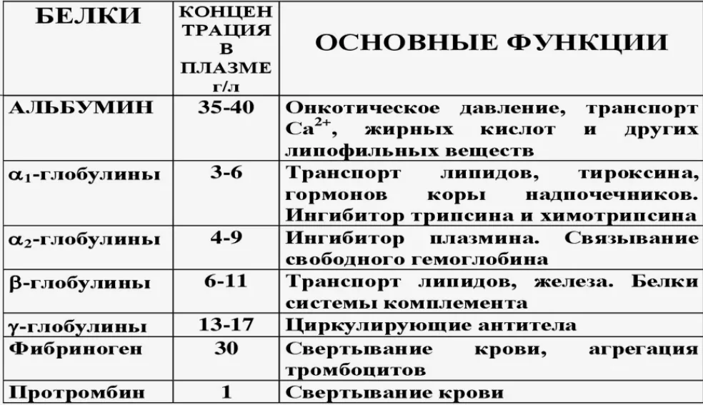
1) обеспечивают коллоидно-осмотическое (онкотическое) давление (25 — 30 мм рт. ст.);
2) часть белков является антителами; защитную — особые белки (иммуноглобулины), отвечают за гуморальный иммунитет;
3) участвуют в процессе свертывания крови (фибриноген и другие плазменные факторы свертывания крови);
Какие растворы называют изотоническими, гипотоническими, гипертоническими? Какова функциональная роль онкотического давления плазмы крови?
Изотонический – 0,9 % концентрация NaCl
Гипотоничекий – менее 0,9%
Гипертонический – более 0, 9%
Онкотическое давление играет важную роль в регуляции водного обмена. Чем больше его величина, тем больше воды удерживается в сосудистом русле и тем меньше ее переходит в ткани. Онкотическое давление влияет на образование тканевой жидкости, лимфы, мочи и всасывание воды в кишечнике.
Раздел 1 · вопрос 5
Какие факторы изменяют вязкость цельной крови? Что такое агрегация эритроцитов, от чего она зависит?
Вязкость цельной крови определяют: 1) агрегация и деформируемость эритроцитов; 2) величина гематокрита (повышение показателя гематокрита, как правило, сопровождается увеличением вязкости крови); 3) концентрация фибриногена, растворимых комплексов фибринмономера и продуктов деградации фибрина/фибриногена (повышение их содержания в крови увеличивает ее вязкость); 4) соотношения альбумин/фибриноген и альбумин/глобулин (снижение данных соотношений сопровождается повышением вязкости крови); 5) содержание циркулирующих иммунных комплексов — при повышении их уровня в крови вязкость возрастает; 6) геометрия сосудистого русла.
Агрегация эритроцитов — способность эритроцитов создавать в цельной крови конгломераты.
Она зависит от условий кровотока, состояния и состава крови и плазмы и непосредственно от самих эритроцитов.
Агрегация эритроцитов, в основном, зависит от следующих факторов: 1) ионного состава среды — при повышении общего осмотического давления плазмы эритроциты сморщиваются и утрачивают способность к агрегации; 2) поверхностно-активных веществ, изменяющих поверхностный заряд, и их влияние может быть различным; 3) концентрации фибриногена и иммуноглобулинов; 4) контакта с инородными поверхностями, что, как правило, сопровождается нарушением нормальной агрегации эритроцитов
Раздел 1 · вопрос 6
Что такое гемолиз эритроцитов, в чѐм состоит его опасность?
Гемолиз крови — это процесс разрушения эритроцитов (красных кровяных клеток) с высвобождением гемоглобина в плазму крови
Гемолиз эритроцитов приводит к тому, что клетки не получают достаточного количества гемоглобина, а с ним кислорода и питательных веществ, что способствует дисфункции внутренних органов. Проявляется это слабостью, головокружением. Опасность заключается и в том, что при разрушении эритроцитов повышается концентрация билирубина. Это отрицательно сказывается на состоянии и функционировании головного мозга. Кроме того, большое количество данного вещества приводит к интоксикации организма, из-за которой почки и печень функционируют с усиленной нагрузкой, а это становится причиной развития острой почечной и печеночной недостаточности. Острая форма, возникающая при переливании крови, приводит к летальному исходу.
Раздел 1 · вопрос 7
Дайте определение понятию «СОЭ». Как и почему изменяется СОЭ при патологических процессах и беременности?
СОЭ – скорость оседания эритроцитов, используется для определения качества крови. Удельный вес эритроцитов выше, чем плазма крови, поэтому эритроциты в пробирке с кровью, лишённые возм-ти свертываться, оседают
При некоторых патологических процессах и заболеваниях СОЭ повышается, так как увеличивается количество белков глобулиновой фракции (гаптоглобина, церулоплазмина, липопротеинов, парапротеинов, фибриногена), получивших название агломеринов.
Как влияют на СОЭ альбумины, глобулины плазмы, фибриноген?
При условиях физиологической нормы СОЭ невысока, что обусловлено преобладанием в плазме белков альбуминовой фракции. Альбумины являются лиофильными коллоидами, создают вокруг эритроцитов гидратную оболочку и удерживают их во взвешенном состоянии. Глобулины представляют собой лиофобные коллоиды, способствуют уменьшению гидратной оболочки вокруг эритроцитов и отрицательного поверхностного заряда их мембран, что ведёт к усилению агрегации эритроцитов. К основным факторам, влияющим на СОЭ, относят: количество, форму и размеры эритроцитов; количественное соотношение различных видов белков плазмы крови; содержание желчных пигментов и др. Повышение содержания альбуминов и желчных пигментов, а также повышение количества эритроцитов в крови вызывает возрастание дзета-потенциала клеток и уменьшение СОЭ. Увеличение содержания в плазме крови глобулинов, фибриногена, снижение содержания альбуминов и уменьшение количества эритроцитов сопровождается увеличением СОЭ.
Раздел 1 · вопрос 8
Какие функции реализует гемоглобин? Каково абсолютное содержание гемоглобина в крови у мужчин, у женщин?
Функции:
Дыхательная
Буферная
У мужчин содержание гемоглобина в среднем составляет 130-160 г/л у женщин 120-140 г/л
Раздел 1 · вопрос 9
Что такое цветной (цветовой) показатель, чему он равен в норме? Чем может быть обусловлено появление в крови гипохромных и гиперхромных эритроцитов?
Цветовой показатель: отношение количества гемоглобина крови (относительное содержание) к числу эритроцитов (относительное содержание). Этот показатель позволяет оценить степень насыщения эритроцитов гемоглобином. В норме цветовой показатель составляет 0,8-1,0.
Определение цветового показателя крови имеет значение для проведения дифференциального диагноза при анемиях различной этиологии. По цветовому показателю все анемии можно разделить на нормохромные, гипохромные и гиперхромные. Повышение цветового показателя может указывать на дефицит витамина В12, фолиевой кислоты, полицитемию. Если цветовой показатель ниже нормы, это может быть признаком железодефицитной анемии, анемии при беременности, анемии при отравлении свинцом.
Гипохромия – обеднение эритроцитов гемоглобином. Они слабо прокрашиваются, иногда становятся похожими на кольцо (анулоциты).
Преобладание в крови гипохромных эритроцитов обуславливает снижение цветного показателя до величины меньше единицы; такая анемия называется гипохромной.
Гиперхромия – более интенсивное окрашивание эритроцитов с отсутствием центральной зоны просветления.
Анемия с наличием в крови гиперхромных эритроцитов и цветным показателем, превышающим единицу, называется гиперхромной.
Раздел 1 · вопрос 10
Назовите соединения гемоглобина, охарактеризуйте их.
Оксигемоглобин и восстановленный (редуцированный) гемоглобин – важнейшие соединения гемоглобина. В их составе сохраняется двухвалентное железо, следовательно, не изменяется способность гемоглобина к связи с О2. При воздействии на гемоглобин окислителей происходит истинное окисление гемоглобина с отнятием электрона, превращением железа гемоглобина из двухвалентного в трёхвалентное. В связи с этим образуется метгемоглобин, который не способен вступать в обратимую реакцию с кислородом. В венозной крови содержится соединение гемоглобина с СО2 – карбоксигемоглобин.
Из тканей различных органов, особенно кишечника, постоянно поступают в кровь вещества, вызывающие образование метгемоглобина в условиях нормы, однако в очень небольших количествах. Это связано с наличием в эритроцитах антиоксидантов, в частности глутатиона и аскорбиновой кислоты, препятствующих образованию метгемоглобина или обеспечивающих его восстановление при участии фермента НАДН – метгемоглобинредуктазы. Восстановление метгемоглобина в гемоглобин в эритроцитах происходит в процессе ферментативных реакций с участием дегидрогеназ и соответствующих субстратов – молочной кислоты, глюкозы, глюкозо-6-фосфата.
Карбоксигемоглобин – соединение гемоглобина с угарным газом – окисление (СО). Закономерности насыщения гемоглобина окисью углерода такие же, как и для насыщения гемоглобина кислородом. Разница заключается в том, что сродство СО к гемоглобину в 300 раз выше, чем О2 к гемоглобину; распад карбоксигемоглобина происходит в 10 000 раз медленнее, чем оксигемоглобина. Высокое сродство гемоглобина к СО обусловливает высокую ядовитость угарного газа. Примесь даже 0,1% СО в окружающем воздухе приводит к тому, что почти 80% гемоглобина оказывается связанным с угарным газом и выключается из функции переноса кислорода.
Миоглобин – кислородсвязывающий белок скелетных мышц и мышцы сердца. Подобно гемоглобину, миоглобин высокотоксичен при его нахождении в свободном состоянии в плазме крови: крупные молекулы миоглобина в свободном состоянии могут закупоривать канальцы почек и приводить к их некрозу, конкурируя с гемоглобином эритроцитов, за связывание с кислородом в лёгких и не выполняя функцию отдавания кислорода тканям, свободный миоглобин ухудшает кислородное снабжение тканей и приводит к развитию тканевой гипоксии. Миоглобин связывает кислород (образуется оксимиоглобин) и является основным его поставщиком для скелетных мышц. При гипоксии (например, при интенсивнойф изической нагрузке) кислород высвобождается из комплекса с миоглобином и поступает в митохондрии миоцитов, где осуществляется синтез АТФ. Выводится миоглобин в неизмененном виде с мочой, поэтому его концентрация также зависит от функции почек. При любом повреждении, некрозе, лизисе ткани скелетной мускулатуры или миокарда миоглобин поступает в кровь. При инфаркте миокарда выраженность гипермиоглобинемии находится в прямой зависимости от размеров очага некроза. Это один из самых ранних маркеров инфаркта миокарда (обнаруживается уже через 2 часа после приступа, увеличение концентрации может быть 10-кратным), предполагается, что быстрое поступление в кровь связано с относительно малыми размерами молекулы, этим же объясняется и быстрое выведение его почками из крови.
Раздел 1 · вопрос 11
Каковы механизмы стимуляции образования эритропоэтинов в условиях гипоксии (нарисуйте схему)?
Решающую роль в эритропоэзе играет эритропоэтин — пептидный гормон группы кислых гликопротеинов. Он синтезируется в почках — в перитубулярных интерстициальных клетках коркового слоя. Экстраренально (в печени) продуцируется не более 10 % эритропоэтического гормона.
Синтез эритропоэтина повышается при гипоксии любого происхождения, возникающий, например, при подъеме в горы, многократной экспозиции в барокамере с пониженным атмосферным давлением, при мышечной тренировке. Гипоксическая стимуляция имеет место и при многих патологических состояниях: кровопотере, легочной или сердечной недостаточности и др. В результате происходит стойкое увеличение количества эритроцитов как в единице объема циркулирующей крови, так и в организме в целом — эритроцитоз истинный, или абсолютный. При ишемии почки в остром или хроническом эксперименте (сужение почечной артерии) содержание эритропоэтина в плазме крои возрастает. Эти и другие факты свидетельствуют о непосредственном (прямом) воздействии гипоксического фактора на чувствительные к нему структуры почечной ткани, а также о наличии в ней некоторого запаса эритропоэтина. Выход эритропоэтина из почки и начальная активация его синтеза контролируется рефлекторным механизмом: хеморецепторы каротидных синусов — гипоталамус — спинной мозг — симпатические нервы почки. У животных в эксперименте при выключении любого отдела этой рефлекторной дуги гипоксическая стимуляция эритропоэза сохраняется, но развитие ее замедляется. Таким образом, механизм этой стимуляции нервно-гуморальный, центральное место в нем занимает почечный эритропоэтин, скорость включения которого обеспечивается симпатической нервной системой. При гипоксии активируются функции гипоталамо-гипофизарной системы с участием коры надпочечников и щитовидной железы. Это способствует стимуляции эритропоэза путем активации синтеза эритропоэтина, а также прямого действия на красный костный мозг. В том же направлении влияют продукты гемолиза, интенсивность которого повышается (в начальной стадии гипоксии увеличивается разрушение старых эритроцитов). Эти гуморальные механизмы, однако, недостаточны для активации эритропоэза при отсутствии почек (у нефрэктомированных животных).
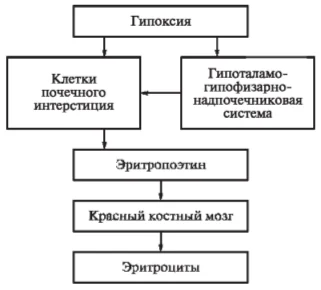
Итого 2 механизма: 1) Прямое воздействие крови с пониженным парциальным напряжением О2 на клетки ЮГА и канальцевый аппарат, продуцирующие эритропоэтин; 2) Опосредованный эффект через активацию гипоталамно-гипофизарно-надпочечниковой системы в условиях гипоксии. Усиление выброса гормонов адаптации – глюкокортикоидов, катехоламинов, стимулирующих гуморальным путём образование эритропоэтина в почках и усиление процессов эритропоэза в костном мозге
Раздел 1 · вопрос 12
Что такое истинный эритроцитоз, каковы наиболее частые причины его возникновения?
При истинном (абсолютном) эритроцитозе костный мозг вырабатывает слишком много эритроцитов и их концентрация в крови превышает норму.
Раздел 1 · вопрос 13
Что такое внешний и внутренний факторы кроветворения (факторы Кастла)?
На какие группы и подгруппы делятся лейкоциты? Каковы функции нейтрофилов, эозинофилов, базофилов, моноцитов, лимфоцитов?
Лейкоциты подразделяются на две группы:
зернистые, или гранулоциты (нейтрофильные, эозинофильные, базофильные);
незернистые, или агранулоциты (моноциты, лимфоциты).
Функции:
нейтрофилы – защитная (фагоцитоз), участие в гомостатических реакциях организма;
эозинофилы – предотвращают развитие воспалительных и аллергических реакций, фагоцитоз, принимает участие в свёртывании крови;
базофилы – аллергические и воспалительные реакции, фагоцитоз, свёртывание крови, участвуют в регуляции жирового обмена;
моноциты – фагоцитоз, способность прикрепляться к повреждённым и чужеродным поверхностям, а также агрегационная активность;
Т- и В- лимфоциты – участие в реакциях специфического иммунитета, является основным звеном иммунной системы.
Раздел 1 · вопрос 15
Какова продолжительность жизни разных видов лейкоцитов? Каковы функции моноцитов, лимфоцитов?
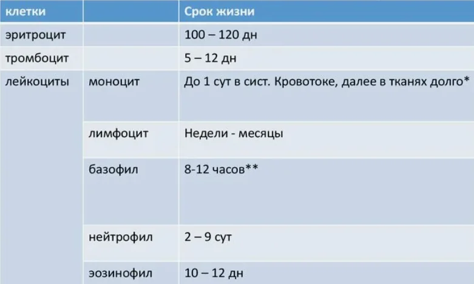
моноциты – фагоцитоз, способность прикрепляться к повреждённым и чужеродным поверхностям, а также агрегационная активность;
Т- и В- лимфоциты – участие в реакциях специфического иммунитета, является основным звеном иммунной системы.
Раздел 1 · вопрос 16
Что такое лейкоцитарная формула, напишите еѐ? Что означает сдвиг влево, вправо в лейкоцитарной формуле?
Лейкоцитарная формула (лейкограмма) – процентное отношение различных видов лейкоцитов в крови: нейтрофильные – 46-76 %; эозинофильные 1-5%; базофилы – 0-1%; моноциты – 2-10%; лимфоциты – 18-40%.
Различают сдвиг в лейкоцитарной формуле влево и вправо. Сдвиг влево является следствием повышенной функции красного костного мозга и сопровождается увеличением содержания в крови молодых форм нейтрофилов. Сдвиг вправо — понижение функций красного костного мозга — характеризуется увеличением содержания в крови старых форм нейтрофильных лейкоцитов.
Раздел 1 · вопрос 17
Что такое лейкопения, лейкоцитоз? Назовите факторы стимулирующие лейкопоэз, угнетающие лейкопоэз.
Лейкопения – уменьшение кол-ва лейкоцитов в крови. Лейкоцитоз – увеличение.
Назовите основные группы крови системы АВ0 с указанием агглютиногенов и агглютининов. Что такое резус-фактор?
Различают четыре группы крови:
Первая группа: 0αβ(I) – не содержит агглютиногенов в эритроцитах, в плазме находятся агглютинины α и β.
Вторая группа:Аβ(II) – характеризуется наличием агглютиногена А в эритроцитах и β агглютинина в плазме.
Третья группа:Вα(III) – в эритроцитах присутствует агглютиноген В, в плазме –агглютинин α.
Четвертая группа:АВ(IV) – в эритроцитах присутствуют агглютиногены А и В, в плазме агглютининов нет.
Резус-фактор – это белок, находящийся на поверхности эритроцитов у некоторых людей. Кровь тех, у кого он есть, называют резус-положительной, у кого нет – резус-отрицательной. Антигены системы Rh (резус-агглютиногены) впервые были обнаружены у обезьяны макакирезус. Эритроциты 85% людей содержат резус-агглютиноген, кровь таких людей называют резус-положительной (Rh+ ). В эритроцитах 15% людей резус-агглютиногена нет, кровь таких людей называют резус-отрицательной (Rh- )
Раздел 1 · вопрос 19
Что представляет собой реакция агглютинации эритроцитов, в каких случаях она возникает?
Агглютинация эритроцитов: Если в эксперименте смешать в пробирке кровь разных групп произойдет реакция агглютинации – склеивание и разрушение (гемолиз) эритроцитов, если в смеси встретятся агглютиноген А и агглютинин α, агглютиноген В и агглютинин β. Подобная реакция может произойти и у человека в случае переливания несовместимой крови.
Раздел 1 · вопрос 20
Назовите основное правило переливания крови. В каких случаях допустимо переливание иногрупной крови? Нарисуйте схему допустимого переливания.
Современные правила переливания крови. 1. Переливать необходимо только одногруппную кровь. 2. Резус-отрицательным реципиентам переливать необходимо только резус-отрицательную кровь.
При малых кровопотерях и к экстренных ситуациях.
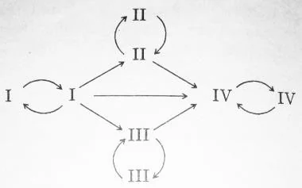
Раздел 1 · вопрос 21
Что такое цоликлоны, как с их помощью определяют групповую и резус принадлежность исследуемой крови?
Для определения групп крови применяют цоликлоныанти-А и анти-В, представляющие собой искусственные сыворотки, полученные от животных (мышь, кролик), в которых содержатся специфические антитела к агглютиногенам эритроцитов крови человека. По сути, анти-А аналогичен агглютинину α, а анти-В – агглютинину β. Цоликлоны получаются в результате иммунных реакций после введения животным порцийII-й и III-й групп крови человека, содержащей соответственно агглютиногены А или В. В ответ на присутствие в организме мышей агглютиногенов вырабатываются антитела –анти-А или анти-В, которые обозначают как цоликлоны (в зарубежной литературе – антитоксины). Таким образом, определение групп крови включает выявление в исследуемой крови антигенов А и В соответствующими антителами – цоликлонами анти-А и анти-В по показателю реакции агглютинации при встрече соответствующих друг другу антител и антигенов (анти-А и А,анти-В и В).
На тарелку наносят капли цоликлонов анти-А и анти-В. Рядом с каплями цоликлонов помещают каплю исследуемой крови. Дляопределении группы крови цоликлоны и кровь смешивают стеклянной палочкой. Положительный результат при определении группы крови проявляет себя агглютинацией (склеиванием) эритроцитовне позднее чем через 60 секунд после смешивания. При отрицательной реакции агглютинация отсутствует, капля смеси остается равномерно окрашенной в красный цвет.
Раздел 1 · вопрос 22
Нарисуйте варианты взаимодействия капли крови человека с цоликлонами для четырѐх групп, дайте объяснение полученным результатам.
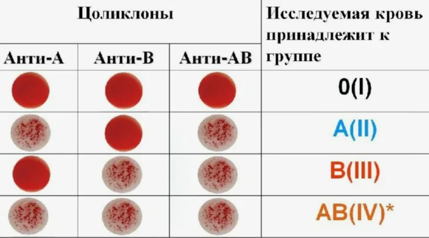
Первый вариант результатов. Агглютинация произошла с цоликлоном анти-А,но не произошла с анти-В. Следовательно исследуемая кровь содержит только агглютиноген А, агглютиногена В нет. Вывод – кровь II группы.
Второй вариант результатов. Агглютинация произошла с цоликлоном анти-В,но не произошла с анти-А. Следовательно исследуемая кровь содержит только агглютиноген В, агглютиногена А нет. Вывод – кровь III группы.
Третий вариант результатов. Агглютинация произошла с цоликлоном анти-А и с анти-В. Следовательно исследуемая кровь содержит оба агглютиногена А и В. Вывод – кровь IV группы.
Четвертый вариант результатов. Агглютинация не произошла с цоликлоном анти-А и антиВ. Следовательно исследуемая кровь не содержит агглютиногены А и В. Вывод – кровь I группы
Раздел 1 · вопрос 23
Нарисуйте варианты взаимодействия капли крови человека с цоликлоном для резуспозитивной и резус-негативной ситуации, дайте объяснение полученным результатам.
С этой целью используют цоликлон анти-D, представляющий собой антитела к Rh-антигену эритроцитов (анти-резус агглютинины). Анти-D получают путѐм иммунизации животных эритроцитами человека, содержащими соответствующий белок.
Первый вариант результатов. Агглютинация произошла с цоликлоном анти-D. Следовательно исследуемая кровь содержитRh-антиген. Вывод – кровь резус-положительная. Второй вариант результатов. Агглютинация с цоликлоном анти-D отсутствует. Следовательно исследуемая кровь не содержит Rh-антиген. Вывод – кровь резус-отрицательная.
Раздел 1 · вопрос 24
Что происходит при первом и повторном переливании резус-положительной крови резус-отрицательному реципиенту, чем опасно такое переливание? В чѐм суть и опасность резус-конфликта между матерью и плодом.
Если кровь резус-положительногодонора перелить резус-отрицательному реципиенту, в организме последнего начнут образовываться специфические по отношению к резус-агглютиногену антирезус-агглютинины. При повторном переливании резус-положительной крови этому реципиенту у него, как правило, возникает гемотрансфузионный шок вследствие агглютинации эритроцитов донора антирезус-агглютининами реципиента.
Опасность для плода. Если мать резус-отрицательна, а отец резус-положителен, плод может быть резус-положительным. При нарушении целостности плацентарного сосудистого барьера 4 в период беременности резус-агглютиногены плода попадают в организм матери, при этом у неѐ начинают вырабатываться антирезус-агглютинины. Последние, проникая через плаценту в кровь плода, могут вызвать агглютинацию его эритроцитов с последующим их гемолизом. В результате – у новорожденного развивается тяжелая гемолитическая анемия, характеризующаяся низким содержанием гемоглобина и снижением количества эритроцитов.
Раздел 1 · вопрос 25
Охарактеризуйте фазы сосудисто-тромбоцитарного гемостаза. В чѐм состоит главное отличие сосудисто-тромбоцитарного гемостаза от коагуляционного гемостаза?
Фазы сосудисто-тромбоцитарного гемостаза:
1. Спазм сосудов: первичный – рефлекторный, вторичный – под влиянием вазоконстрикторов (серотонин, адреналин, тромбоксан), выделяющихся из тромбоцитов. Сокращение сосудистой стенки уже способствует остановке кровотечения.
2. Адгезия – прилипание тромбоцитов к месту повреждения.
3. Агрегация – склеивание тромбоцитов друг с другом. В итогеобразуется рыхлый тромбоцитарный тромб (белый тромб). Из подвергшихся агрегации тромбоцитов в кровь выделяются вазоконстрикторы, инициирующие вторичный спазм сосудов.
4. Ретракция (уплотнение) тромбоцитарного тромба под влиянием тромбостенина, который выделяют тромбоциты. Ретракция обеспечивает закрепление тромба в поврежденном сосуде.
Отличия: Сосудисто-тромбоцитарный гемостаз способен остановить кровотечение из мелких сосудов с низким артериальным давлением. Коагуляционный гемостаз обеспечивает остановку кровотечения из крупных сосудов в результате образования прочного фибринового тромба. Все реакции коагуляционного гемостаза являются ферментативными, протекают в 3 фазы.
Раздел 1 · вопрос 26
Охарактеризуйте 1 фазу коагуляционного гемостаза по внешнему механизму, нарисуйте схему.
1-я фаза – наиболее сложная. Включает внешние и внутренние механизмы (пути), обеспечивающие образование протромбиназы (активатора протромбина) – фермента, необходимого для перевода протромбина в активный тромбин.
Внешний механизм (путь) – начинается с повреждения тканей, тканевых сосудов в результате действия на ткань травмирующего агента. Повреждение тканей приводит к появлению в зоне повреждения тканевого тромбопластина (белково-липидный комплекс цитоплазмы клеток, фактор III), фосфолипидных фрагментовклеточных мембран и прокалликреина, трансформирующегося в активный фермент калликреин. В результате взаимодействия тромбопластинас Ca2+образуется комплекс, активирующий плазменный фактор VII, который переходит в активную форму – VIIa, что обеспечивает формирование комплекса. В присутствии Са2+, комплекс «тканевой тромбопластин + активный факторVII (VIIа)» переводит Х фактор свертывания в активную форму Xа. Все вместе взятое образует тканевую протромбиназу.
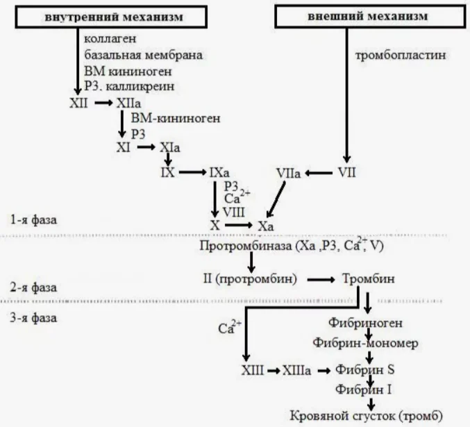
Основные плазменные факторы свертывания: I – фибриноген, II – протромбин, III– тканевой тромбопластин, IV– Са2+ Факторы с V по XIII являются акцелераторами, дополнительными факторами, ускоряющими процесс свертывания крови (V– проакцелерин или Ас-глобулин, VII – конвертин, VIII – антигемофильный глобулин А, IX – антигемофильный глобулин В, или фактор Кристмасса, X – фактор Стюарта-Прауэра, XI – антигемофильный глобулин С, XII – фактор Хагемана, XIII – фибринстабилизирующий фактор)
Раздел 1 · вопрос 27
Охарактеризуйте 1 фазу коагуляционного гемостаза по внутреннему механизму, нарисуйте схему.
Внутренний механизм (путь) образования кровяной протромбиназы начинается с повреждения форменных элементов крови (тромбоцитов, эритроцитов), что приводит к образованию фрагментовклеточных мембран тромбоцитов и эритроцитов– кровяной тромбопластин. На матрице кровяного тромбопластина последовательноактивируются факторы крови – XII, XI, IX, VIII. В присутствии Са2+, фактора V (акцелератор-глобулин)комплекс «кровяной тромбопластин+XIIa + XIa + IXa + VIIIa» переводят Х фактор свертыванияв активную форму – Xa. Все вместе взятое образует кровяную протромбиназу.
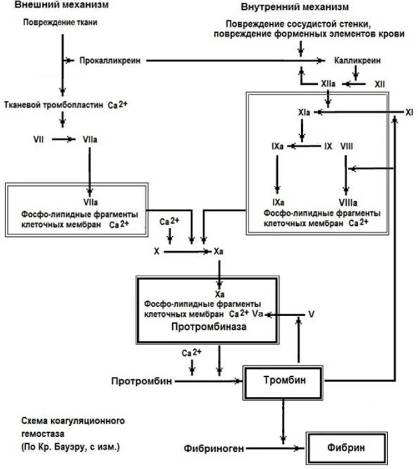
В силу некоторых генетических особенностей у человека иногда наблюдается врожденный дефицит или фактора VIII илиIX или XI. Это приводит к развитию гемофилии – тяжелого заболевания, для которого характерным является несвертываемость крови при повреждении кровеносных сосудов. Отсюда название факторов VIII, IX, XI – антигемофильные глобулины соответственно – А, В, С.
Раздел 1 · вопрос 28
Какова роль протромбиназы в процессе свертывания? Охарактеризуйте 2-ю и 3-ю фазы коагуляционного гемостаза, нарисуйте схему.
2-я фаза – образование тромбина. Протромбиназа почти мгновенно адсорбирует на своей поверхности неактивный протромбин и в присутствии Са2+ переводит его в активный фермент – тромбин.
3-я фаза – превращение фибриногена в фибрин под влиянием тромбина иСа2+. Процесс проходит в 3 этапа: образование фибрина-мономера, образование растворимого фибрина-полимера, образование нерастворимого фибрина под влиянием фибринстабилизирующего фактора XIII.
В результате образуется рыхлый клубок нитей фибрина, в которых задерживаются форменные элементы крови, преимущественно эритроциты. Форменные элементы разрушаются, при этом гемоглобин разрушенных эритроцитов придает тромбу красный цвет (красный тромб).
Схемы в вопросах 26, 27
Раздел 1 · вопрос 29
Что такое фибринолиз, каково его значение? Опишите этапы фибринолиза.
После образования фибринового тромба в поврежденном сосуде происходит его уплотнение (ретракция). В последующем он расщепляется. Этот процесс называется фибринолизом. Главная функция фибринолиза – восстановление просвета закупоренного тромбом сосуда. Расщепление фибрина осуществляется протеолитическим ферментом плазмином. Обычно в крови он присутствует в виде неактивного плазминогена.
Фибринолиз имеет три фазы: - выделения из поврежденных тканей тканевого активатора плазминогена; - превращение плазминогена в плазмин под действием тканевого активатора плазминогена; - разрушение фибрина под действием плазмина.
Раздел 1 · вопрос 30
Что такое «первичные» и «вторичные» антикоагулянты? Какое влияние оказывает вегетативная нервная система на свертываемость крови?
Антикоагулянты – в крови содержатся в-ва, предотвращающие и замедляющие процесс свёртывания.
Из первичных антикоагулянтов, синтезируемых в печени, наиболее активными являются антитромбин III, угнетающий образование протромбиназы, и гепарин, тормозящий все фазы свертывания, протеин C, протеин S.
Вторичные антикоагулянты представляют собой отработанные факторы свертывания. Так, фибрин адсорбирует и нейтрализует до 90% тромбина, поэтому его называют антитромбином I. Вторичные антикоагулянты, не препятствуя формированию тромба в месте повреждения сосуда, предотвращают каскадное тромбобразование по всей сосудистой системе.
Ускорение свертывания (гиперкоагуляция) – наблюдается при стрессорных воздействиях на организм, при этом время свертывания уменьшается с 5-10 до 3-4 мин. в результате активации симпатической нервной системы. Симпатическая нервная система, адреналин способствуют освобождению из стенок сосудов факторов свертывания, активируют многие плазменные факторы свертывания. Парасимпатическая нервная система увеличивает выход в кровь антикоагулянтов, при этом отмечается замедление свертывания (гипокоагуляция). В норме у человека после завершения нормального процесса свертывания крови всегда имеет место некоторая гипокоагуляция. Это объясняется как использованием резерва факторов свертывания, так и активацией противосвертывающих механизмов.
Раздел 2 · вопрос 1
Охарактеризуйте морфогенетический и метаболический типы реагирования клеток на воздействие раздражителей.
Морфогенетический - ярко проявляется в постнатальном онтогенезе. Примером служит рост организма. Из новорождѐнного формируется подросток, из подростка – взрослый человек. Этот процесс управляется гормонами, БАВ. Например, щитовидная железа, половые железы, гормоны с током крови идут к клетке. Гормоны-регуляторы действуют на все клетки, проникают в цитоплазму. Там они реагируют с белками-рецепторами (особые белки, которые обеспечивают связь с гормонами). При этом образуется гормонорецепторный комплекс (ГРК). Он связывается с транспортными белками и идет в клеточное ядро, к ДНК, соединяется с фрагментами и в следствии этого активируются гены и усиливается синтез ферментов, синтез белков-регуляторов. Это является основой направленного развития клетки структурно и функционально. Особенности реакций: 1. Во всех клетках организма. 2. Идут медленно – латентный период составляет от нескольких минут до нескольких часов. 3. Проявляются в пластическом обмене - строительстве и совершенствовании организма.
Метаболическое реагирование. При этом под влиянием раздражителя изменяется интенсивность процессов, которые идут с разной скоростью. Наиболее известные модуляторы обменных реакций - адреналин, норадреналин. Гормоны с кровью поступают к клеткам, но внутрь не проходят и взаимодействуют на уровне мембраны с хеморецепторами, которые способны распознавать вещество-раздражитель. В результате формируется гормонорецепторный комплекс, но не внутри клетки, а снаружи. В свою очередь происходят конформационные изменения белков-регуляторов организма вблизи хеморецепторов (G-белков), которые запускают каскад химических реакций в клетке. В процессе их осуществления стимулируются внутриклеточные ферменты и, как следствие этого, активируется энергетический метаболизм. Особенности реакций: 1. Данные реакции способны демонстрировать почти все клетки организма за исключением клеток хрящевой и костной ткани. 2. Это сравнительно быстрый тип реагирования – осуществляется в течение нескольких секунд. 3. Проявляется в виде усиления производства энергии.
Раздел 2 · вопрос 2
Какие ткани относятся к категории возбудимых, что такое структурно-функциональный ответ возбудимой клетки?
Нервные, мышечные, железистые
Процесс возбуждения выступает в качестве инструмента или механизма запуска специфических структурно-функциональных ответов (реакций), присущих возбудимым клеткам. Например, для мышечных клеток структурно-функциональным ответом является их сокращение. Для железистой клетки – это процесс выделения секрета. Для нервной клетки – процесс нейросекреции, выделение окончаниями аксонов нейронов особых химических соединений (медиаторов).
Раздел 2 · вопрос 3
Как классифицируются мембранные ионные каналы? Какой механизм активно поддерживает ионную асимметрию на мембране?
1. По возможности управления их функ цией различают управляемые и неуправляе мые каналы . 2. По скорости движения ионов каналы могут быть быстрыми и медленными. 3. В зависимости от стимула, различают а) потенциалчувствительные, б) хемо- чувствительные, в) механочувствительные, г) кальцийчувствительные, д) каналы, чувст вительные ко вторым посредникам. 4. В зависимости от селективности различают ионоселективные каналы, пропускающие только один ион, и каналы, не обладающие селективностью
К-Na – насос (ионный насос).
Раздел 2 · вопрос 4
Что такое мембранный потенциал покоя (МПП), чему он равен для скелетно-мышечного волокна?
МПП - это разность потенциалов между наружной и внутренней поверхностями мембраны в покое.
60 — 90 мВ
Раздел 2 · вопрос 5
Охарактеризуйте 3 механизма формирования МПП?
1) Диффузионный градиент выталкивает ионы калия наружу. Комплиментарный анион начинает двигаться за катионом калия, но в свободном виде через мембрану пройти не может вследствие больших размеров. То. положительно заряженный K+ выходит на поверхность мембраны, а отрицательно заряженный анион подтягивается к ее внутренней поверхности. Ионы калия тоже не могут оторваться от мембраны, уйти в межклеточное пространство, т.к. их удерживают электростатические силы. Мембрана приобретает заряд. С одной стороны формируется избыток положительных зарядов, т.к. на поверхность выходят катионы. В то же время изнутри скапливаются анионы, создавая отрицательный заряд. Положительный потенциал нарастает снаружи, а изнутри нарастает отрицательный. Формируется разность потенциалов (МПП).
2) Ионы Na+ небольшим потоком движутся внутрь клетки. Ионы натрия, как и ионы калия, заряжены положительно. Эти катионы будут нейтрализовать отрицательный заряд анионов, а значит способствовать его некоторому понижению. Механизм натриевого противотока сдерживает рост мембранного потенциала. Таким образом, ток ионов натрия внутрь клетки по каналам утечки оказывает отрицательное влияние на формирование МПП.
3) Третий механизм связан напрямую с работой К+-Na+- насоса. К+- Na+-насос - структура электрогенная. Это связано с несимметричностью его работы: он засасывает в клетку 2 катиона K+, а выбрасывает 3 катиона Na+. Следовательно, снаружи оказывается избыточное количество катионов. Таким образом, К+- Na+-насос на формирование мембранного потенциала покоя влияет положительно, повышает его величину
Раздел 2 · вопрос 6
Какова роль тока ионов калия в покое в создании МПП? Какова роль тока натрия в покое в создании МПП? Какова роль К-Na-насоса в создании ионной асимметрии на мембране?
Данная роль водится к снижению электронегативного значения мембранного потенциала, создаваемого выходом катионов К*. Незначительный вклад входящего натриевого тока в создание потенциала покоя по сравнению с выходящим током катионов калия объясняется тем, что проницаемость мембраны для катионов Na+ составляет только 1—10% от значения калиевой проницаемости.
эта роль является ведущей. Это связано с высокой калиевой проницаемостью клеточной мембраны Однако окончательное значение потенциала покоя хотя и приближается значению равновесного потенциала для катионов К+, но нс совпадает с ним (см. табл. 1.1). Это связано в первую очередь с одновременным существованием входящего натриевого тока, который будет снижать электронегативное значение потенциала, создаваемого выходящим калиевым током.
Работа насоса приводит к следующим результатам:
1) поддерживает высокую концентрацию ионов К+внутри клетки, обеспечивая тем самым постоянство величины потенциала покоя,
2) поддерживает низкую концентрацию ионов натрия внутри клетки,
3) поддерживая концентрационный градиент натрия, натрий-калиевый насос способствует сопряженному транспорту аминокислот и глюкозы через клеточную мембрану.
Раздел 2 · вопрос 7
Что такое локальный потенциал (ЛП)? Что такое мембранный потенциал действия (ПД)?
Локальный потенциал (ЛП) (старое название – локальный ответ) - это медленная деполяризация, предшествующая быстрой деполяризации. Он выполняет генераторную (пусковую) роль в возникновении ПД, поэтому его также называют генераторным потенциалом. ЛП представляет собой активное подпороговое изменение мембранного потенциала
ПД (МПД) - быстрое колебание мембранного потенциала в ответ на действие эффективного раздражителя, сопровождаемое перезарядкой мембраны
Раздел 2 · вопрос 8
Нарисуйте электрограмму ПД, укажите его фазы. Чему равны амплитуда и длительность ПД скелетно-мышечного волокна?
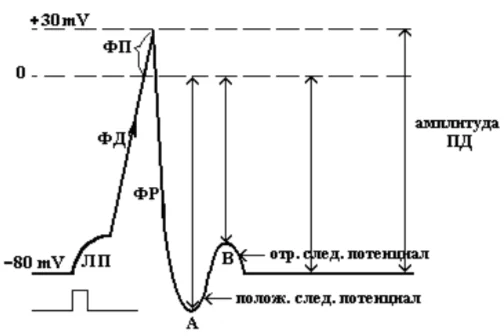
ЛП – латентный период
ФД – фаза деполяризации
ФП – фаза перезарядки
ФР –фаза реполяризации
А и В – следовые потенциалы
Амплитуда ПД = 110—120 мв
Длительность ПД t = ~ 5-10 мс
Раздел 2 · вопрос 9
Как и для каких ионов изменяется проницаемость мембраны в фазу деполяризации, реполяризации ПД скелетно-мышечного волокна?
реполяризация – усиленный выход К+ за пределы клетки, что происходит с одновременной инактивацией натриевого тока
Раздел 2 · вопрос 10
Как изменяется проницаемость мембраны для ионов калия во время фазы реполяризации ПД? Нарисуйте электрограмму, демонстрирующую явление гиперполяризации мембраны.
реполяризация – усиленный выход К+ за пределы клетки
Гиперполяризация – означает увеличение мембранного потенциала
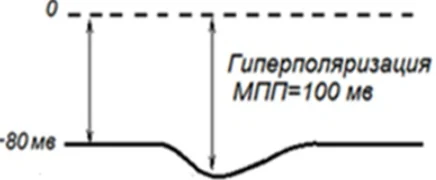
Раздел 2 · вопрос 11
Нарисуйте электрограмму с примером реагирования субстратов по закону силовых отношений, объясните механизм.
«Закон силовых отношений» или ««Закон силы»: Чем больше сила раздражителя, тем больше величина ответной реакции.
Эксперимент обычно начинают со слабых воздействий. Возьмѐм ток небольшого напряжения. Понятно, что если раздражитель слабый ответа может и не быть. Возбуждение может не развиться.
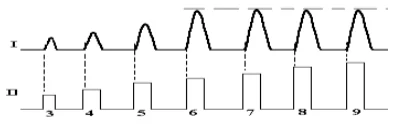
2. Увеличим мощность импульса. Ответная реакция может отсутствовать. Однако ручка потенциометра генератора импульсов ещѐ имеет приличный запас для вращения.
В ответ на очередное повышение уровня напряжения мышца отвечает небольшим сокращением и тут же расслабляется. Это минимальное по амплитуде сокращение мышцы называют пороговым сокращением (ПС). Применѐнный ток тоже называют пороговым.
Чтобы в очередном опыте увидеть эффект сверхпорогового раздражителя, заметно увеличим амплитуду импульса. В результате получаем более выраженное сокращение.
В 5-м эксперименте вновь увеличим мощность импульса – опять наблюдаем усиление ответной реакции.
В 6-м опыте снова повысим напряжение. Мышца выдержала удар и сократилась ещѐ значительнее.
В 7-м опыте после очередного увеличения силы импульса амплитуда мышечного сокращения перестаѐт прирастать
Раздел 2 · вопрос 12
Нарисуйте натриевый канал мембраны с его активационными и инактивационными воротами для возбудимой клетки в состоянии покоя, в фазе деполяризации ПД.
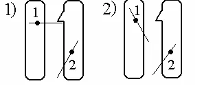
покой
деполяризация
Раздел 2 · вопрос 13
Нарисуйте натриевый канал мембраны с его активационными и инактивационными воротами для возбудимой клетки в точке инактивации и в фазу реполяризации ПД.
Реполяризация
Инактивация
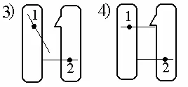
Раздел 2 · вопрос 14
Нарисуйте электрограмму реакции возбудимой клетки на сверхпороговое раздражение после еѐ обработки тетродотоксином, тетраэтиламмонием.
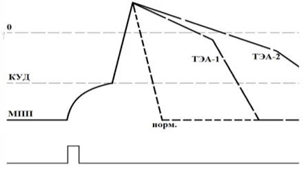
После обработки тетродоксином (блокатор Na+ - каналов) воротный механизм заблокируется => потенциал действия НЕ возникает
После обработки тетродоксином (растянется фаза реполяризации) заблокированы ворота калиевых каналов, выход K+ только по каналам утечки.
Раздел 2 · вопрос 15
Что такое возбуждение, что такое возбудимость? Как изменяется возбудимость клетки во время генерации локального потенциала?
Возбуждение – это вызванное действием эффективного раздражителя особое электрическое состояние клетки, сопровождающееся перемещением эл. зарядов через цтоплазматическую мембрану.
Возбудимость - это способность клеток возбуждаться в ответ на действие эффективных раздражителей
Увеличивается
Раздел 2 · вопрос 16
Нарисуйте электрограмму изменений мембранного потенциала покоя при кратковременном действии подпороговых раздражителей разной силы.
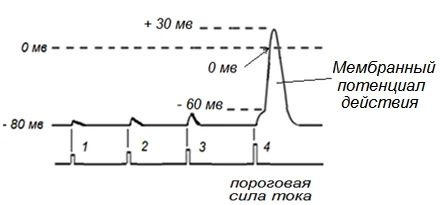
Раздел 2 · вопрос 17
Что такое критический уровень деполяризации (КУД), от каких свойств мембраны зависит?
Критический уровень деполяризации (КУД) - это такой уровень электрического потенциала мембраны возбудимой клетки, от которого локальный потенциал переходит в потенциал действия
Зависит от: КУД зависит от внутренних свойств механизмов возбудимой мембраны.
Кол-ва натриевых каналов в инактивированном состоянии
Кол-ва открытых калиевых каналов
Проницаемости клеточной мембраны
Проводимости клеточной мембраны
Раздел 2 · вопрос 18
Что такое пороговый потенциал и как он связан с возбудимостью мембраны?
Пороговый потенциал – минимальная величина, на которую надо уменьшить МПП, чтобы вызвать потенциал действия (ПД).
Пороговый потенциал и возбудимость клеток находятся в обратных соотношениях: небольшая величина порог. потенциала свидетельствует о высокой возбудимости клеток, а большой порог. потенциал свидетельствует о низкой возбудимости клеток.
Раздел 2 · вопрос 19
Нарисуйте электрограмму МПП скелетно-мышечного волокна с обозначением КУД, укажите на ней пороговый потенциал.
Пороговый потенциал - U
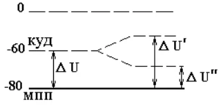
Раздел 2 · вопрос 20
Нарисуйте две электрограммы, демонстрирующие КУД при разных величинах порогового потенциала.
В материалах ответ на этот вопрос не дан.
Раздел 2 · вопрос 21
Нарисуйте электрограмму с примером реагирования субстратов по закону «Всѐ или ничего», объясните механизм.
1. Даѐм подпороговый (слабый) раздражитель. Реакции нет.
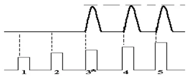
2. Увеличим силу. Если прирост был несущественным, то ничего не получим.
3. Дадим пороговый ток. Появилась сократительная (контрактильная) реакция.
4. Подадим сверхпороговое раздражение. Наблюдаем реакцию как в опыте 3.
5. Проведѐм контрольный опыт и подадим ток ещѐ большего напряжения. Вновь регистрируем прежнюю амплитуду сокращения – она и пороговая, и максимальная.
Такой тип реагирования охарактеризовали законом «Всѐ или ничего»: Возбудимая ткань в ответ на действие раздражителей или совсем не отвечает на раздражение, если величина его недостаточна (ниже порога), или отвечает максимальной реакцией, если раздражение достигает пороговой величины.
Раздел 2 · вопрос 22
Что представляет собой регенеративная деполяризация, объясните механизм еѐ развития?
Это уровень деполяризации, на котором происходит быстрое (лавинообразное) открытие натриевых каналов и поток ионов натрия лавиной устремляется в клетку. Момент возникновения – начало ПД. Механизм: раздражитель деполяризация мембраны. увеличение тока натрия в клетку увеличение проницаемости для натрия.
Раздел 2 · вопрос 23
У клетки А порог деполяризации (пороговый потенциал) 20 мВ, у клетки Б – 30 мВ, какая из клеток более возбудима? Как изменяется возбудимость мембраны при подпороговой деполяризации, при гиперполяризации?
Клетка А, потому что она имеет меньшее значение и её легче перевести из состояния покоя в возбужденное состояние.
Раздел 2 · вопрос 24
Нарисуйте электрограмму изменений МПП при действии на клетку подпорогового и порогового раздражителей.
1 – подпороговый раздражитель
2 – сильный подпороговый раздражитель
3 – пороговый раздражитель
Раздел 2 · вопрос 25
Нарисуйте электрограмму изменений МПП при действии на клетку порогового и сверхпороговых раздражителей. Как изменяется возбудимость клетки во время возбуждения?
Рис. 4-5. Мембранные потенциалы действия (МПД) в условиях раздражения мышцы пороговым (4) и сверхпороговыми (5, 6) импульсами электрического тока.
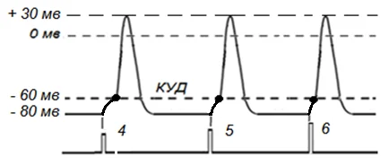
Оценим полученные результаты –
1.В целом картина перехода клетки из состояния покоя в состояние возбуждения (МПД) оказывается стандартной. Под влиянием сверхпороговых раздражителей (5, 6.) наблюдаем генерацию локального потенциала (ЛП), а затем МПД. Можем отметить, что при использовании сверхпороговых раздражителей увеличивается крутизна нарастания ЛП при увеличении силы электрического тока.
2.Несмотря на последовательное увеличение силы электрического тока во всех случаях амплитуда МПД не изменяется. О чем это говорит? Это говорит о том, что при раздражении мышечной клетки пороговым (4) и сверхпороговым (5 ,6) электрическим током мембранные потенциалы действия (МПД) демонстрирует стандартную амплитуду в соответствии с законом «все или ничего».
Раздел 2 · вопрос 26
Нарисуйте график изменения возбудимости клетки в сопоставлении с фазами ПД. Объясните физиологические механизмы формирования абсолютной рефрактерной фазы, относительной рефрактерной фазы.
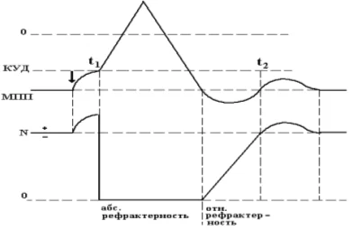
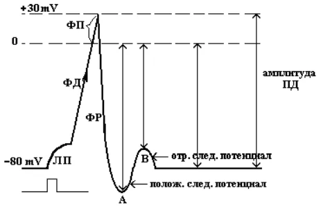
Абсолютная рефрактерная фаза — это полная невозбудимость клетки (возбудимость равна нулю). Она соответствует пику ПД и продолжается у нервного волокна 1 — 2 мс; если ПД более продолжителен, то более продолжительна и абсолютная рефрактерная фаза. В этот период времени клетка не отвечает на раздражения любой силы.
Невозбудимость клетки в фазы деполяризации и инверсии (в первую ее половину — восходящая часть пика ПД) объясняется тем, что потенциалуправляемые m-ворота Naканалов уже открыты и Na+ быстро поступает в клетку по всем открытым каналам. Т.е ворота Na-каналов, которые еще не успели открыться, открываются под влиянием деполяризации — уменьшения мембранного потенциала, поэтому дополнительное раздражение клетки относительно движения Na+ в клетку ничего изменить не может. ПД либо совсем не возникает при раздражении, если оно мало, либо возникает максимальным, если действует раздражение достаточной силы (пороговой или сверхпороговой).
В период нисходящей части фазы инверсии клетка невозбудима потому, что закрываются инактивационные h-ворота Na-каналов (соответствует вершине ПД), в результате чего клеточная мембрана непроницаема для Na+ даже при сильном раздражении. Кроме того, в этот период открываются уже в большом количестве K-каналы и K+ быстро выходит из клетки, обеспечивая нисходящую часть фазы инверсии и реполяризацию.
Абсолютная рефрактерная фаза продолжается и в период реполяризации клетки до достижения КП ±10 мВ. 3.
Относительная рефрактерная фаза — это период восстановления возбудимости клетки, когда сильное раздражение может вызвать новое возбуждение. Она соответствует конечной части фазы реполяризации (начиная примерно от КП ±10мВ) и следовой гиперполяризации клеточной мембраны, если она имеется. Пониженная возбудимость является следствием все еще повышенной проницаемости для K+ и избыточным выходом К+ из клетки. Поэтому, чтобы вызвать возбуждение в этот период, необходимо приложить более сильное раздражение, так как выход К+ из клетки препятствует ее деполяризации. Кроме того, в период следовой гиперполяризации мембранный потенциал больше и, естественно, дальше отстоит от КП. Если реполяризация в конце пика ПД замедляется, то относительная рефрактерная фаза включает и период замедления реполяризации, и период гиперполяризации, т. е. продолжается до возвращения мембранного потенциала к исходному уровню после гиперполяризации. Продолжительность относительной рефрактерной фазы вариабельна, у нервных волокон она невелика и составляет несколько миллисекунд.
Раздел 2 · вопрос 27
Что выражает лабильность возбудимой клетки, чему она равна для скелетно-мышечного волокна?
Способность ткани многократно возбуждаться под влиянием ритмических раздражителей получила название «лабильность». Термин «лабильность» можно заменить выражением «функциональная подвижность»
Продолжительность ПД клетки скелетной мускулатуры 5 мс. Следовательно, L = 200/с
Раздел 2 · вопрос 28
Что такое катэлектротон? Нарисуйте электрограмму катэлектротона.
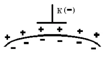
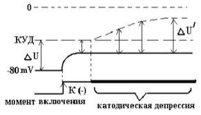
Катэлектротон – это пассивное изменение МПП (функциональной активности возбудимой ткани) под катодом, при пропускании постоянного тока
Раздел 2 · вопрос 29
Что такое анэлектротон? Нарисуйте электрограмму анэлектротона.
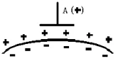
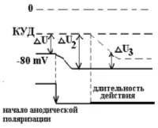
Анэлектротон – пассивное изменение функциональной активности ткани под анодом. Под пассивным изменением подразумевается изменение величины мембранного потенциала исключительно за счѐт привнесѐнных на поверхность мембраны отрицательных (катод) или положительных (анод) зарядов.
Раздел 2 · вопрос 30
Нарисуйте электрограмму изменений МПП при катодзамыкательном возбуждении. Что такое катодическая депрессия?
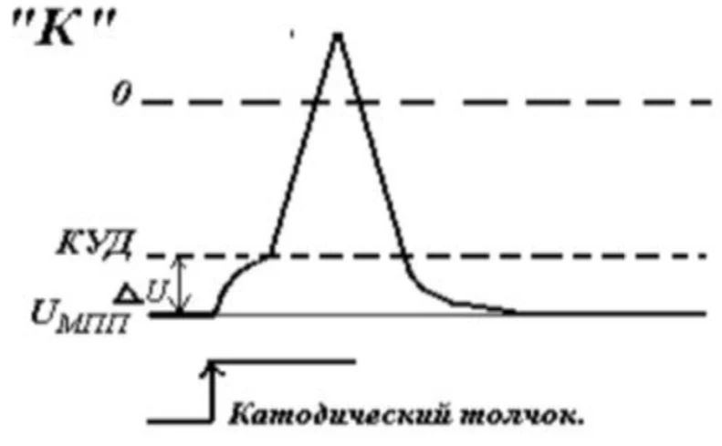
Снижение возбудимости ткани под катодом при длительном действии на нее постоянного электрического тока.
Раздел 2 · вопрос 31
Нарисуйте электрограмму изменений МПП и КУД при длительной подпороговой катодической поляризации мембраны. Что такое анодическая экзальтация?
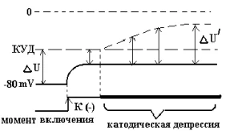
Электротон в чистом виде наблюдается на протяжении короткого промежутка времени. Если ситуация затягивается и анодическое воздействие не прекращается, то анэлектротон переходит в свою противоположность – в анодическую экзальтацию. В этой ситуации возбудимость и проводимость ткани увеличиваются.
Раздел 2 · вопрос 32
Нарисуйте электрограмму изменений МПП и КУД при длительной подпороговой анодической поляризации мембраны.
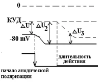
Раздел 2 · вопрос 33
Нарисуйте электрограмму изменений МПП при анодразмыкательном возбуждении.
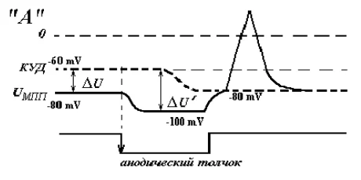
Раздел 2 · вопрос 34
Как доказать полярный закон действия постоянного тока, нарисуйте схему опыта?
В чѐм сущность «полярного закона»?
При пропускании сверхпорогового постоянного тока через возбудимую ткань, возбуждение в момент включения (замыкания) тока возникает под катодом, а в момент выключения (размыкания) – под анодом
Доказательство: То есть, будем доказывать, что катодический удар возникает именно при замыкании цепи, а анодический – при еѐ размыкании
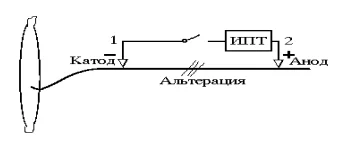
Соберѐм установку, включающую в себя препарат икроножной мышцы с седалищным нервом. На нерв поместим электроды, подключѐнные к источнику постоянного тока. Отметим полярность электродов: 1-й – катод, 2-й – анод. Первое сокращение мышцы наблюдается при замыкании цепи. При размыкании оно повторяется. Повредим нерв между электродами, например, сжав его пинцетом. После такого воздействия нерв утрачивает способность проводить возбуждение. Вновь замкнѐм цепь. Наблюдаем сокращение мышцы. Размыкаем – ничего не происходит. Мышца остаѐтся в состоянии покоя. Можно сделать предположение, что в момент включения под катодом возникает возбуждение и распространяется на мышцу, вызывая еѐ сокращение. В момент размыкания возбуждение под анодом тоже возникает, но мышца не сокращается, т.к. ПД не может пройти через повреждѐнный участок.
Раздел 2 · вопрос 35
Что отражает кривая «силы-времени»? Нарисуйте кривую «силы-времени».
Кривая силы-времени выражает множество пороговых значений электрического тока в зависимости от минимального времени действия данного раздражителя.
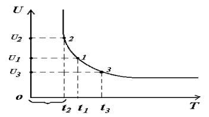
Раздел 2 · вопрос 36
Дайте определение понятию «полезное время». Что отражает полезное время?
Полезное время - минимальное время, по истечении которого выявляется эффект тока амплитудой в одну реобазу.
Полезное время - это показатель, который характеризует скорость перехода ткани из состояния покоя в состояние возбуждения
Раздел 2 · вопрос 37
Дайте определение понятию «реобаза». Обозначьте полезное время и реобазу на кривой «силы-времени».
Ток наименьшей амплитуды, вызывающий переход ткани из состояния покоя в состояние возбуждения при неограниченном времени раздражения, называется реобазой.
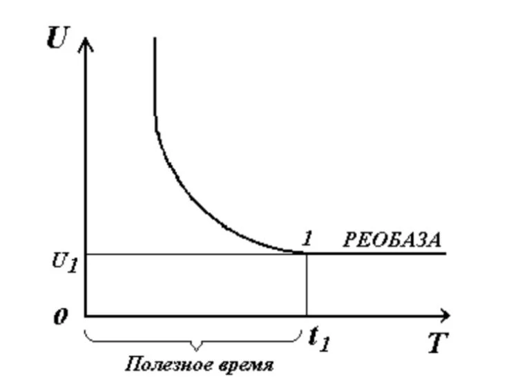
Раздел 2 · вопрос 38
Как зависит величина порогового тока от крутизны его нарастания? Объясните механизм формирования аккомодации возбудимой клетки к плавно нарастающему раздражителю.
Чем медленнее нарастает сила электрического тока (или другого раздражителя), тем в большей мере увеличиваются пороги раздражения, т. к. за время нарастания силы раздражителя в ткани успевают развиться изменения, препятствующие возникновению возбуждения . Если крутизна нарастания тока меньше критической величины, то возбуждение вообще не возникает, независимо от того, до какой величины доводится сила тока. Наименьшая крутизна нарастания тока, при которой возникает возбуждение, является показателем скорости аккомодации.
Главной причиной аккомодации является инактивация Na-каналов, возникающая при медленной деполяризации клеточной мембраны, которая длится в течение 1 с и более. Клетка теряет возбудимость если закрывается около 50% инактивационных h-ворот (в покое h-ворота в основном открыты, закрыто около 20%). Меньшую роль играет активация К-каналов. Возникающая частичная деполяризация клетки при медленно нарастающей силе стимула ведет к уменьшению мембранного потенциала. Поэтому если и возникает ПД при дальнейшем резком увеличении силы раздражителя, то его амплитуда мала.
Раздел 2 · вопрос 39
Нарисуйте электрограмму изменений МПП и КУД клетки при развитии аккомодации к раздражителю. Каким требованиям должен отвечать раздражитель, чтобы вызвать возбуждение?
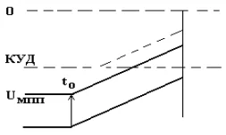
Раздражитель должен:
1. Определенное время действия
2. Должен иметь определенную амплитуду
3. Должен достаточно быстро нарастать
Раздел 2 · вопрос 40
Опишите механизмы проведения возбуждения в безмякотных нервных волокнах, в мякотных нервных волокнах. Приведите примеры безмякотных и мякотных периферических нервных волокон.
1. В безмякотных
Во-первых, возбуждение будет проходить непрерывно и с декрементом (затуханием). Из-за действия раздражителя в первой точке возникает ПД и происходит перезарядка мембраны этого участка (отрицательный заряд на поверхности). При этом в соседней точке (невозбужденной) на поверхности мембраны положительный заряд. Т.о, между возбужденными и невозбужденными участками будет возникать разность потенциалов, которая способствует возникновению круговых токов. Этот ток будет идти от + к – (от первой точки ко второй). В месте выхода кругового тока увеличивается проницаемость мембраны для ионов натрия. Следовательно, происходит деполяризация мембраны → теперь второй участок тоже возбужден. Между ним и соседним (третьим) тоже возникает разность потенциалов, возникновение круговых токов и ПД. И так до конца аксона.
2. В мякотных
Возбуждение проходит без декремента (без затухания), скорость распространения очень высока. Миелин- жироподобное вещество, плотно покрывает мембрану, является изолятором→ ионы натрия не могут проникнуть в мембрану. Но миелин покрывает не весь аксон, есть короткие участки без него- перехваты Ранвье. Эти перехваты легко возбуждаются и перезаряжаются под действием раздражителя. Возбуждение будет распространяться от одного перехвата к другому (скачкообразно). Возбуждение в соседнем перехвате возникает из-за перезарядки другого перехвата
К безмякотным нервным волокнам относятся тонкие постганглионарные волокна вегетативной нервной системы.
Мякотные (миелиновые) нервные волокна обнаружены в составе как центральной, так и периферической системы.
Раздел 2 · вопрос 41
Каковы преимущества сальтаторного проведения возбуждения? Каким образом миелин способствует увеличению скорости проведения возбуждения по нервному волокну?
Преимущества: 1. Скачкообразное перемещение обеспечивает очень высокую скорость распространения возбуждения. 2. Это энергетически более экономный механизм, по сравнению с непрерывным типом перемещения.
Миелинизация нервных волокон обеспечивает увеличение скорости проведения возбуждения вследствие того, что непрерывное проведение возбуждения сменяется сальтаторным и увеличивается расстояние между перехватами Ранвье (ПД электротонически «перепрыгивает» на большее.
Раздел 2 · вопрос 42
Как и почему скорость распространения возбуждения по нервным волокнам зависит от их диаметра? Как и почему зависит скорость распространения возбуждения по нервным волокнам от амплитуды потенциала действия?
Чем больше диаметр, тем меньше сопротивление аксоплазмы, следовательно, тем больше скорость проведения возбуждения. Это связано с меньшим внутренним сопротивлением волокна.
Чем больше амплитуда, тем больше скорость.
Раздел 2 · вопрос 43
Что такое «фактор надѐжности» (гарантийный фактор)? Приведите пример расчѐта фактора надѐжности для нервного волокна.
Фактор надежности – величина, характеризующая связь между амплитудой и величиной порогового потенциала.
Ф.Н. = ПД/ΔU, где ΔU – пороговый потенциал. В норме равен 5-6 (чем больше, тем лучше проводимость).
Пример расчета ФН: Ф.Н. = ПД/ΔU = 120 мВ/2 мВ = 6
Раздел 2 · вопрос 44
Почему локальные потенциалы по мембране распространяются с декрементом? Назовите и охарактеризуйте законы проведения возбуждения по нервам.
?
Закон двустороннего проведения возбуждения – возбуждение по нервному волокну распространяется в обе стороны. Если разместить электроизмерительные приборы на нервном волокне по обе стороны от точки раздражения «А», то потенциалы действия будут регистрироваться с обеих сторон.
Закон изолированного проведения возбуждения по нервному волокну. В целостном нерве имеется огромное количество нервных волокон, которые являются отростками отдельных нервных клеток, но возбуждение не может прыгать с одного волокна на другое. Всѐ происходит как в телефонном кабеле – каждый провод работает автономно.
Закон анатомической и физиологической (функциональной) целостности нервного волокна – нервное волокно обеспечивает проведение возбуждения только в том случае, если нет анатомического повреждения волокна. В то же время должна сохраняться и физиологическая (функциональная) целостность, т.е. мембранные механизмы должны работать нормально.
Закон относительной неутомляемости. При длительном и неоднократном воздействии раздражителя на нервное волокно оно продолжит возбуждаться
Раздел 2 · вопрос 45
Нарисуйте примеры нейронных схем, включающих в себя волокна типа А, типа В, типа С. С какой скоростью распространяется возбуждение в волокнах типа А, В, С?
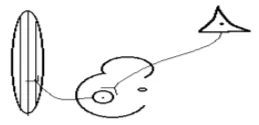
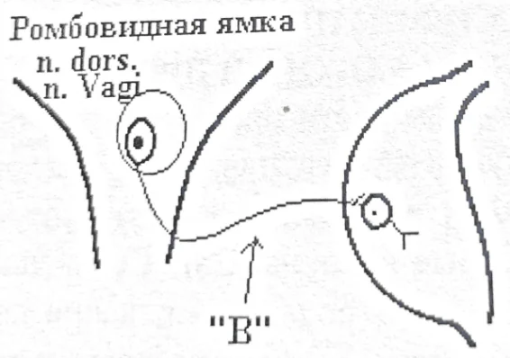
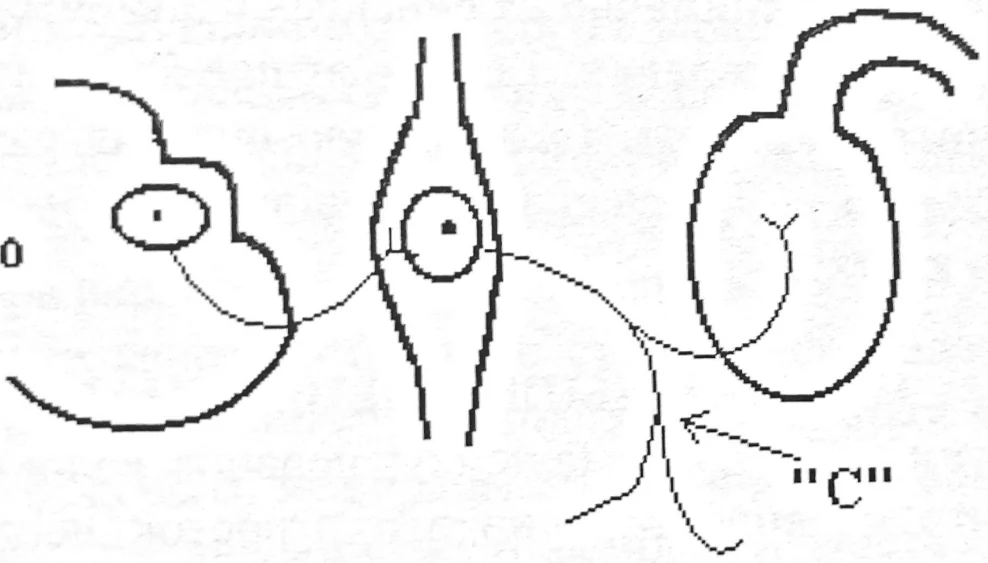
Волокна типа «А» от 100 до 120 м/с
Волокна типа «В» от 3 до 18 м/с
Волокна типа «С» от 0,5 до 3 м/с.
Раздел 2 · вопрос 46
Нарисуйте схему нервно-мышечного синапса с указанием его основных элементов. Что такое электросекреторное сопряжение (электросекреторная связь) в синапсе?
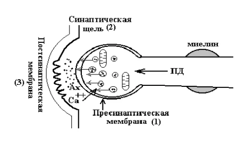
Электросекреторная связь – это связь электрических и секреторных процессов, которые происходят в области пресинаптических терминалей
Раздел 2 · вопрос 47
Нарисуйте схему, демонстрирующую явление экзоцитоза в пресинаптическом окончании. Чем отличается пресинаптическая мембрана от мембраны аксона в целом?
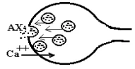
1. Имеется большое кол-во Са-каналов, в мембране аксона – Na и K-вые.
2. Рядом с пресинаптической мембраной большое кол-во митохондрий и пузырьков с нейромедиаторами.
Раздел 2 · вопрос 48
Чем отличается постсинаптическая мембрана от внесинаптической мембраны возбудимой клетки? Что такое холинорецептор?
Постсинаптическая мембрана является хемовозбудимой и не чувствительна к электрическому току, внесинаптическая мембрана электровозбудима;
2)Воротный механизм ионных каналов постсинаптической мембраны чувствителен к медиатору (имеет сенсор медиатора), а внесинаптическая мембрана чувствительна к изменению напряжения на мембране( имеется сенсор напряжения);
3)Ионные каналы постсинаптической мембраны не специализированны, а внесинаптической мембраны-специализированны;
Постсинаптическая мембрана не способна генерировать ПД даже при выраженной деполяризации. ПД генерирует внесинаптическая мембрана
Холинорецептор – особый белок-рецептор в структуре мембраны, который обладает стереоспецифичностью к ацетилхолину (находится в концевой пластинке, преобразует энергию взаимодействия с ацетилхолином в энергию специф. эффекта – импульс, сокращение)
Раздел 2 · вопрос 49
Нарисуйте электрограмму потенциала концевой пластинки. Каким образом потенциал концевой пластинки вызывает потенциал действия мышечного волокна?
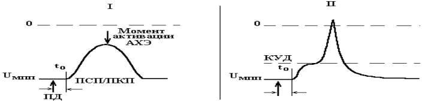
Как только медиатор начинает взаимодействовать с белком-рецептором возникает так называемый постсинаптический потенциал (рис. I). В данном случае это ПКП. Постсинаптический потенциал представляет собой сравнительно медленное деполяризационное колебание, которое длится несколько миллисекунд. Но это не ПД! Ведь нет регенеративной деполяризации. Фактически это очень большой ЛП, который возникает на постсинаптической мембране и отражает процесс взаимодействия медиатора с холинорецепторами. Чем больше молекул Ах свяжется с холинорецепторами концевой пластинки, тем больше будет амплитуда деполяризационной волны . На рисунке отсутствует КУД, т.к. на постсинаптической мембране отсутствуют электровозбудимые Na+ -каналы, а значит, ни о каком КУДе в принципе не может быть и речи. Деполяризационная волна ПКП начинает спадать (реполяризация) в тот момент, когда молекулы медиатора разрушатся ацетилхолинэстеразой и воротные системы ионных каналов вернутся в исходное состояние
Раздел 2 · вопрос 50
Схематично изобразите ионный канал постсинаптической мембраны (хемовозбудимой) в закрытом и открытом состоянии при формировании контакта с медиатором.
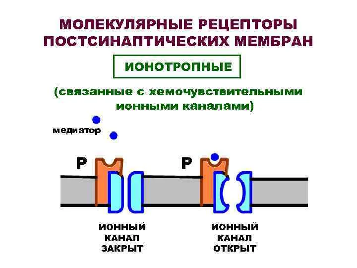
Раздел 2 · вопрос 51
Нарисуйте электрограмму потенциала действия скелетно-мышечного волокна с указанием времени синаптической задержки и длительности возбуждающего постсинаптического потенциала.
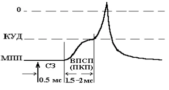
Раздел 2 · вопрос 52
Поэтапно опишите процесс передачи возбуждения с нервного волокна на мышечное.
ПД распространяется на пресинаптическую мембрану.
Под влиянием мембранной деполяризации открываются кальциевые каналы (это второй необходимый элемент цепи). Ионы кальция по концентрационному градиенту в большом количестве поступают внутрь пресинаптического окончания. При отсутствии ионов кальция, процесс выделения ацетилхолина блокируется. Следует подчеркнуть, что это ключевой момент инициации процесса синаптической передачи.
Есть данные, что ионы кальция взаимодействуют в пресинаптической терминали с особым белком - кальмодулином (кальцийсвязывающий белок) и образуют с ним комплекс. Данный комплекс обладает способностью локально стимулировать многие физиологические процессы в протоплазме клеток. Применительно к пресинаптической области это выливается в следующее: пузырьки обнаруживают способность двигаться к пресинаптической мембране. Механизм этого движения не совсем ясен, но связь его с вхождением ионов кальция абсолютно доказана. Также выяснилось, что ионизированный кальций активирует фибриллярно-белковые конструкции цитоскелета терминали аксона. Эти конструкции начинают сокращаться, что фактически обеспечивает выдавливание пузырьков с медиатором наружу - своего рода микросокращение. Согласно другой гипотезе предполагается, что ионы кальция несут на себе выраженный положительный заряд, который способен нейтрализовать отрицательный заряд мембран, покрывающих пузырьки. Это облегчает процесс движения пузырьков к пресинаптической мембране и их последующую интеграцию в структуру этой мембраны.
Запускается механизм экзоцитоза: достигнув пресинаптической мембраны пузырек сливается с ней, раскрывается с одной стороны и изливает Ах в синаптическую щель. Это и есть процесс нейросекреции. Количество выводимого медиатора находится в прямо пропорциональной зависимости от концентрации Са++ (в 4-й степени). Если количество ионов кальция увеличится в 2 раза, то количество медиатора возрастет в 16 раз! Аппарат экзоцитоза фактически выступает как химический усилитель.
Медиатор мигрирует в пределах синаптической щели. Его основной объем тут же разрушается под влиянием ацетилхолинэстеразы. Продукты гидролиза холин и остаток уксусной кислоты в значительном количестве возвращаются в терминаль для ресинтеза АХ. Однако часть молекул АХ проходит через мукополисахаридный комплекс и, в конце концов, молекулы медиатора вступают в контакт с постсинаптической мембраной.
ацетилхолин, пройдя синаптическую щель, начинает взаимодействовать с постсинаптической мембраной. Субстратом взаимодействия является СМ (холинорецептор). Как мы уже отметили, между молекулой ацетилхолина и холинорецептором есть стереосоответствие (соответствуют друг другу как ключ и замок). В результате их взаимодействия происходит конформация белка в составе воротного механизма. Белок как бы притягивается к сенсору медиатора. При этом формируется своеобразный комплекс. Канал открывается. В клетку по градиенту концентрации в большом количестве начинают поступать ионы натрия. Движение ионов не специфично, но ионы Na+ явно превалируют. Если положительно заряженные частицы оказываются на внутренней поверхности мембраны, то мембранный потенциал на постсинаптической мембране уменьшается.
Как только медиатор начинает взаимодействовать с белком-рецептором, происходит понижение напряжения на мембране и возникает, так называемый, постсинаптический потенциал (в данном случае - потенциал концевой пластинки). Это медленное деполяризационное колебание, которое длится несколько миллисекунд. Но это не ПД
Потенциал концевой пластинки, возникнув, распространяется на электровозбудимую (внесинаптическую) мембрану мышечного волокна. Т. к. эта мембрана электровозбудима, то на рисунке обозначим КУД. Перенесем момент t0 на второй рисунок (т. е. это один и тот же момент времени!).
Раздел 2 · вопрос 53
Нарисуйте схему функциональной организации миофибриллы с обозначением еѐ основных элементов.
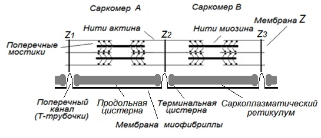
Раздел 2 · вопрос 54
Что такое саркомер, протофибриллы, саркоплазматический ретикулум, Т-система?
Саркомер — базовая сократительная единица поперечнополосатых мышц, представляющая собой комплекс нескольких белков, состоящий из трёх разных систем волокон.
Протофибриллы – наименьшие сократительные элементы мышечного волокна, представленные двумя типами белков: миозин и актин.
Саркоплазмати́ческий рети́кулум — мембранная органелла мышечных клеток, схожая с эндоплазматическим ретикулумом (ЭПР) других клеток.
Т-система- это система поперечных трубочек, представляет собой выпячивание поверхностной плазматической мембраны вглубь мышечных волокон
Раздел 2 · вопрос 55
Поэтапно опишите процесс трансформации возбуждения мышечного волокна в процесс сокращения.
3.Взаимодействие ацетилхолина с холинорецепторами постсинаптической мембраны (МКП).
4.Генерация постсинаптического потенциала в результате открытия ионных каналов постсинаптической мембраны.
5.Генерация потенциала действия (ПД) за пределами постсинаптической мембраны и его распространение вдоль мембраны миофибриллы.
Переход возбуждения в области мембраны Т-трубочек на мембрану саркоплазматического ретикулума.
Открытие кальциевых каналов мембраны саркоплазматического ретикулума, миграция Са2+ в сторону протофибрилл – миозиновых и актиновых нитей.
8.Связывание Са2+с тропонином, конформация тропомиозина, образование связи головок поперечных мостиков миозина с активными центрами актина.
Гидролиз АТФ с выделением энергии, благодаря чему головки миозина выполняют гребковое движение, обеспечивающее скольжение нитей актина относительно нитей миозина. Саркомер и миофибрилла уменьшаются в размерах – мышца сокращается
Раздел 2 · вопрос 56
Опишите молекулярный механизм сокращения скелетно-мышечного волокна.
Сокращение мышцы связано с генерацией ПД. Проникая внутрь волокна, электрическая волна деполяризирует мембраны трубочек и цистерн, снижая их МП и вызывает выход кальция из боковых цистерн в межфибриллярное пространство. Кальций запускает процесс взаимодействия актина с миозином мышцы. В присутствии Ca+ и АТФ тропонин изменяет свою конфигурацию, отодвигает нить тропомиозина→ соединяется головка мостика миозина с актином→ головка приобретает АТФ-азную активность→изменение пространственной ориентации- гребковые движения, которое обеспечивает втягивание тонких нитей в промежутках между толстыми на один шаг, без изменения длины миофиламентов. Затем мостик отрывается и весь цикл повторяется. При каждом гребковом движении расщепляется одна молекула АТФ→ скольжение нитей→ укорочение миофибриллы. Затем активируется кальциевый насос, уменьшается концентрация кальция, расслабляется миофибрилла.
Раздел 2 · вопрос 57
Какова роль кальциевых насосов в мембранах эндоплазматической сети клеток скелетных мышц? На что расходуется энергия АТФ в мышечных волокнах?
После исчезновения волны возбуждения кальциевые насосы мембран саркоплазматического ретикулума откачивают ионы кальция обратно в цистерны, что приводит к расслаблению мышечных волокон. Кальциевые насосы используют энергию АТФ, следовательно, процесс расслабления мышцы – процесс активный.
АТФ:
1.Энергия АТФ обеспечивает работу К/Na-насоса, необходимого для обеспечения оптимального уровня мембранного потенциала (МПП) миофибрилл.
2.Энергия АТФ необходима для обеспечения гребковых движений головок поперечных мостиков миозиновых нитей, т.е. необходима для обеспечения сокращения саркомеров и миофибриллы в целом.
3.Энергия АТФ необходима для обеспечения работы кальциевых насосов, откачивающих Са2+ из зоны протофибрилл, что необходимо для расслабления саркомера и миофибриллы в целом.
Раздел 2 · вопрос 58
Нарисуйте в сопоставлении потенциал действия и кимограмму одиночного сокращения икроножной мышцы лягушки.
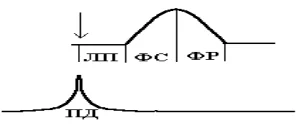
Раздел 2 · вопрос 59
Нарисуйте в сопоставлении потенциалы действия и кимограмму неполной суммации сокращений скелетной мышцы.
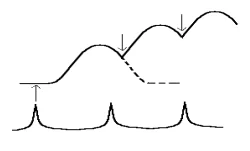
Раздел 2 · вопрос 60
Нарисуйте в сопоставлении потенциалы действия и кимограмму полной суммации сокращений скелетной мышцы.
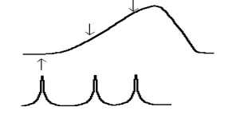
Раздел 2 · вопрос 61
Нарисуйте кимограммы при стимуляции нерва нервно-мышечного препарата с частотой 20/с, 40/с, 60/с и 120/с. Что такое оптимальное сокращение, пессимальное сокращение?
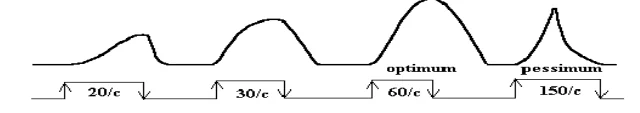
Как оказалось, амплитуда гладкого тетануса при некоторой оптимальной частоте, которая составляет порядка 60/c, становится наибольшей, наилучшей. «Наилучший» по латыни – optimum. Поэтому такой тетанус стали называть оптимальным. При такой частоте проводимость синапса максимальна благодаря оптимальной работе всех элементов нервномышечного препарата.
Что случиться если продолжить увеличение частоты стимуляции? Возьмѐм грубо 150/c. - В самом начале мышца сокращается по типу гладкого тетануса, но не очень мощно. Затем на фоне продолжения стимуляции мышца начинает расслабляться. Такой тетанус назвали наихудшим или pessimum, т.е. формируется пессимальное сокращение
Раздел 2 · вопрос 62
Как и почему изменяется сократительная активность скелетно-мышечного волокна при стойкой деполяризации постсинаптической мембраны? Нарисуйте электрограмму стойкой деполяризации постсинаптической мембраны.
В связи с наличием стойкой деполяризации, на внесинаптической мембране происходит инактивация тока ионов натрия – закрываются инактивационные ворота соответствующих управляемых каналов. Инактивация натриевых каналов на электрограмме проявляется в смещении КУД вверх. Соответственно, увеличивается порог деполяризации, в связи с чем ПД перестает генерироваться.
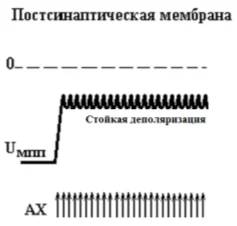
Раздел 2 · вопрос 63
Что понимают под работоспособностью человека? Нарисуйте график зависимости амплитуды сокращений изолированной мышцы от нагрузки.
Работоспособность – это способность человека выполнять конкретную деятельность в рамках заданных временных лимитов и параметров эффективности.
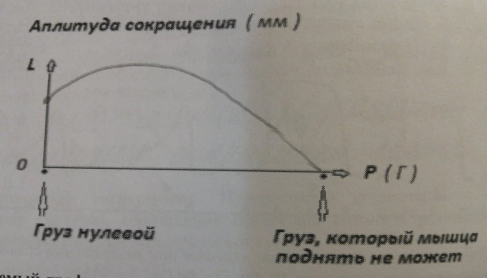
Что понимают под утомлением человека, в чѐм оно проявляется?
Процесс утомления - это совокупность изменений, происходящих в различных органах, системах и организме в целом, в период выполнения физической работы и приводящих в конце концов к невозможности ее продолжения. Состояние утомления характеризуется вызванным работой временным снижением работоспособности, которое проявляется в субъективном ощущении усталости. В состоянии утомления человек не способен поддерживать требуемый уровень интенсивности и (или) качества (техники выполнения) работы или вынужден отказаться от ее продолжения.
Где раньше всего развивается утомление в целом организме? В синапсе
Раздел 2 · вопрос 64
Нарисуйте график зависимости величины динамической работы изолированной мышцы от нагрузки. Что такое правило «средних нагрузок»?
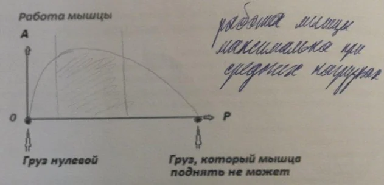
Если мышца сокращается без нагрузки, её внешняя работа ровна нулю. По мере увеличения груза работа увеличивается, достигая максимума при средних нагрузках. Так же работа становится равна нулю при при очень большой нагрузке. (0>max>0)
Раздел 2 · вопрос 65
Назовите 5 основных отличий в структурно-функциональной организации гладких и скелетных мышц?
Скелетная мышца представляет собой симпласт. Это означает, что каждое еѐ волокно работает автономно, возбуждение с одного волокна на другое не переходит. Гладкая мышца имеет волокна веретенообразной формы. Еѐ рассматривают как функциональный синцитий. Синцитий – это когда элементы взаимодействуют друг с другом морфологически или функционально.
Нити актина и миозина в гладкомышечных клетках не упорядочены, как в скелетной мышце, а расположены хаотично. В них отсутствует поперечная исчерченность.
Скольжение актина относительно миозина происходит примерно в 100-1000 раз медленнее, чем в скелетной мышце. Процесс расслабления тоже идѐт медленно, но энергия при сокращении гладкой мышцы расходуется в очень незначительном количестве – энергетика в 100-500 раз экономичнее.
Гладким мышцам присущ флексоэлектрический эффект. Это зависимость между электрической активностью гладкой мышцы и степенью натяжения протоплазматической мембраны. При растяжении мембраны гладкомышечной клетки в ней возникает возбуждение – генерируется ПД. В связи с этим, растяжение следует рассматривать как адекватный раздражитель гладкой мускулатуры. В ответ на возникшее возбуждение, формируется сократительная реакция. Для того чтобы флексоэлектрический механизм сработал, необходимо некоторое критическое и довольно быстрое растяжение мышцы.
Гладкомышечным элементам присуща способность спонтанно генерировать ПД, т.е. без влияний извне. Это обусловлено особенностями метаболизма гладкомышечных волокон – их мембранный потенциал способен самопроизвольно понижаться до КУД, что, собственно, и приводит к возникновению спонтанных потенциалов действия. Даже лишѐнные иннервации, гладкомышечные элементы сохраняют некоторое напряжение (тонус). Тоническая активность гладких мышц имеет миогенную природу, т.е. обусловлена свойствами собственно мышечных клеток. Таким образом, даже в условиях денервации сосудистая стенка продолжает сохранять некоторый тонус.
Раздел 3 · вопрос 1
Что входит в состав рефлекторной дуги? Нарисуйте схемы двухнейронной, трехнейронной рефлекторных дуг.
Принцип Дейла: Во всех окончаниях аксона нервной клетки выделяется один и тот же медиатор или одни и те же медиаторные вещества. Как оказалось, помимо основного медиатора терминаль может выделять ещѐ и сопутствующие медиаторные вещества, так называемые сомедиаторы или комедиаторы. Известно, что эффект клеток-мишеней нередко в большей степени обусловлен действием не основного медиатора, а именно сопутствующего. Один нейрон синтезирует и использует один и тот же медиатор во всех разветвлениях своего аксона («один нейрон – один медиатор»)
Раздел 3 · вопрос 3
Как называется потенциал, возникающий на постсинаптической мембране под влиянием возбуждающего медиатора, каковы его свойства?
ВПСП – возбуждающий постсинаптический потенциал
Свойства ВПСП: 1. малая амплитуда, но большая длительность 2. величина зависит от количества медиатора 3. нет рефрактерности 4. потенциал местный 5. распространяется с затуханием 6. способствует генерации потенциала действия при достижении критического уровня; 7. способен к суммации => генерация потенциала действия (при большом кол-ве возбуждений); 8. увеличивает возбудимость нейрона, деполяризует аксонный холмик.
Раздел 3 · вопрос 4
Как изменяется ионная проницаемость постсинаптической мембраны во время возникновения ВПСП? Из каких компонентов складывается время прохождения импульса через химический синапс?
Увеличивается. Во время возникновения ВПСП постсинаптическая мембрана становится проницаема для ионов Na K, которые поступают внутрь клетки в результате открытия лиганд-зависимых ионных каналов.
Замедленное распространение возбуждения в ЦНС по сравнению с нервным волокном объясняется наличием на путях распространения возбуждения множества химических синапсов, в каждом из которых имеется синаптическая задержка около 0,5 мс. Время проведения возбуждения через синапс затрачивается на выделение медиатора в синаптическую щель, распространение его до постсинаптической мембраны, возникновение ВПСП и ПД (в случае одновременного поступления к нейрону многих импульсов). Суммарная задержка передачи возбуждения в нейроне достигает величины порядка 2 мс. Чем больше синапсов в нейрональной цепочке, тем меньше общая скорость распространения по ней возбуждения. По латентному времени рефлекса (точнее, по центральному времени рефлекса) можно ориентировочно рассчитать число нейронов той или иной рефлекторной дуги
Раздел 3 · вопрос 5
Опишите динамику процессов в центральных синапсах с химическим механизмом передачи возбуждения.
Клетка более высокого порядка посылает ПД к пресинапсу.
Под влиянием деполяризации открываются потенциал-управляемые Ca2+- каналы.
Ca2+ поступает в зону пресинапса.
Ca2+ активирует ряд ферментов, синаптические пузырьки приближаются к пресинаптической мембране и вступают с ней в контакт, мембраны сливаются и ацетилхолин выводится в синаптическую щель.
Запускается процесс нейросекреции.
Чем больше Ca2+ тем больше синаптический выброс.
Раздел 3 · вопрос 6
Нарисуйте электрограмму возникновения потенциала действия в нейроне при синаптическом возбуждении. Назовите 3 принципиальные отличия механизмов передачи возбуждения в синапсах ЦНС от нервно-мышечных синапсов.
Основным возбуждающим медиатором в ЦНС является глутаминовая кислота (глутамат), но могут быть и другие, такие как норадреналин, гистамин, ацетилхолин. В связи с этим, следует отметить первое принципиальное отличие центральных синапсов от нервно-мышечных синапсов, в которых передача возбуждения обеспечивается исключительно за счѐт ацетилхолина.
глутаминовая кислота не имеет специфического фермента, ответственного за еѐ разрушение в синапсе. Снижение концентрации глутамата в синаптической щели в основном связано с деятельностью клеток глии, которые активно захватывают медиатор. И это второе отличие от нервно-мышечных синапсов, где, как известно, медиатор ацетилхолин разрушается ферментом ацетилхолинэстеразой.
ВПСП движется по мембране и может достигнуть зоны аксонного холмика, обладающей более высокой возбудимостью в сравнении с остальной мембраной. Достаточно деполяризации в 3-5 мВ для того, чтобы генераторный пункт обеспечил возникновение ПД. В этом и состоит третье отличие.
Раздел 3 · вопрос 7
Что такое NMDA-рецепторы, какова их функция? Почему первично потенциал действия в нейроне возникает в области аксонного холмика?
- Рецепторы являются кальциевыми каналами, которые связываются с глютаминовой кислотой, что приводит к открытию канала и поступлению катионов Na+ и Ca2+ внутрь клетки, что вызывает деполяризацию постсинаптической мембраны с возникновением постсинаптического потенциала. Постсинаптический потенциал оказывает деполяризующее влияние на участки внесинаптической (электрогенной) мембраны, что сопровождается формированием ВПСП, способного электротонически перемещаться по мембране с постепенным затуханием – с декрементом.
Мембрана аксонного холмика – самый возбудимый участок мембраны нейрона. В связи с этим, электрическое поле, являющееся производным локального ВПСП, накрывая площадь всего нейрона, запускает генерациюмембранного потенциала действия (МПД) всегда в одной и той же «точке». Такой «точкой» является мембрана аксонного холмика.
Раздел 3 · вопрос 8
Что такое нервный центр (НЦ)? Нарисуйте схему доказывающую, что возбуждение через НЦ распространяется только в одну сторону.
Нервный центр (НЦ) – объединение нейронов, координирующих и регулирующих в составе функциональной системы активность различных физиологических эффекторов, деятельность которых обеспечивает стабильность констант внутренней среды организма
НЦ проводит возбуждение только в одну сторону – от входных нейронов к выходным. Данное свойство определяется как односторонняя проводимость. Односторонняя проводимость НЦ объясняется тем, что химические синапсы (рис. 3, синапс 1, синапс 2) проводят возбуждение только в одну сторону – от пресинаптической мембраны к постсинаптической.
Одностороннюю проводимость НЦ можно доказать в простом эксперименте с раздражением задних и передних корешков спинного мозга. Если раздражать электрическим током задние корешки, от передних корешков всегда можно зарегистрировать потенциалы действия. Это свидетельствует о проведении возбуждения через НЦ от входных нейронов к выходным. Если раздражать передние корешки, от задних потенциалы действия никогда не регистрируются. Это свидетельствует о том, что от выходных нейронов к входным возбуждение в НЦ не проводится.
Раздел 3 · вопрос 9
Что называют циркуляцией возбуждения в НЦ? Нарисуйте схему нейронной сети, реализующей последействие в НЦ.
Итак, от аксона нейрона А коллатераль поступает к нейрону 1, от нейрона 1 аксон поступает к нейрону 2, от нейрона 2 – к нейрону 3, а от нейрона 3 – к входному нейрону А. Формируется «ловушка возбуждения» – циклически замкнутый нейронный комплекс. Возбуждение в таком комплексе может длительно циркулировать, непрерывно поддерживая высокий уровень активности выходного нейрона В на протяжении некоторого времени после прекращения поступления входной импульсации на нейрон А.
Нарисуйте схемы вертикальной, горизонтальной, возвратной иррадиации периферического возбуждения по коре головного мозга.
Горизонтальная иррадиация
Вертикальная
Возвратная
Раздел 3 · вопрос 12
Что такое временная суммация возбуждения в НЦ? Нарисуйте электрограмму, демонстрирующую феномен временной суммации возбуждения на нейроне.
Временная, или частотная суммация. К нейрону НЦ (А) в результате воздействия на входной проводник подходят друг за другом два нервных импульса. Каждый из импульсов вызывает генерацию ВПСП, недостаточную для выведения мембранного потенциала нейрона до критического уровня деполяризации (КУД) – В. Однако если второй импульс приходит к нейрону на фоне развития ВПСП от первого, ВПСП от второго импульса, суммируясь с ВПСП от первого, смещает мембранный потенциал до КУД, нейрон НЦ при этом возбуждается (С). В рассмотренном примере суммация двух входных подпороговых воздействий к НЦ является производным фактора времени между входными воздействиями. При некотором оптимальном временном интервале два подпороговых воздействия могут суммироваться на нейронах НЦ, вызывая значимые изменения активности НЦ.
Раздел 3 · вопрос 13
Что такое пространственная суммация возбуждения в НЦ? Нарисуйте электрограмму, демонстрирующую феномен пространственной суммации возбуждения на нейроне.
Пространственная суммация возбуждений обнаруживается, когда два или несколько раздражений действуют одновременно на разные рецепторы, относящиеся к одному и тому же рецептивному полю.
Раздел 3 · вопрос 14
Нарисуйте электрограмму, демонстрирующую роль дендритов в повышении возбудимости нейрона.
Раздел 3 · вопрос 15
Что понимают под пластичностью НЦ, приведите пример?
Пластичность НЦ – способность НЦ перестраивать свою работу в зависимости от изменения активности сопряженных нервных центров.
Как доказать феномен пластичности НЦ? На рисунке представлена упрощенная схема моторных центров спинного мозга А и В, осуществляющих контроль за активностью мышц А и В. Перережем эфферентные (моторные) нервы и соединим их по схеме: нерв А – с мышцей В, нерв В с – мышцей А (рис. 14-2). Спустя некоторое время функциональная целостность нервов восстанавливается, однако моторная активность подопытного животного после вмешательства будет грубо нарушена. Животное теряет способность нормально передвигаться. Тем не менее после многочисленных попыток перемещения в среде обитания ситуация постепенно начинает улучшаться вплоть до приемлемого восстановления моторной активности в результате перестройки нейронной активности спинальных двигательных центров.
Раздел 3 · вопрос 16
Что понимают под доминантным состоянием НЦ (доминантой), какое имеет значение?
Доминантное состояние НЦ- стойкий господствующий очаг возбуждения в ЦНС, подчиняющий себе функции других НЦ.
Значение: замечается в том, что на его базе формируется конкретная приспособительная деятельность, ориентированная на достижение полезных результатов, необходимых для устранения причин, поддерживающих тот или иной НЦ в доминантном состоянии.
Формируется:
-гормональными причинами (избыток или недостаток тех или иных гормонов)
-патологические причины
-метаболические причины (недостаток воды- формирование доминантного состояния гипоталамического центра железы)
-информационные причины
Раздел 3 · вопрос 17
Что такое постсинаптическое, пресинаптическое торможение? Нарисуйте нейронные схемы, иллюстрирующие процессы постсинаптического и пресинаптического торможения.
Постсинаптическое торможение – торможение, возникающее в постсинаптической мембране (в тормозных синапсах) нейрона в результате действия тормозного медиатора, и связанно с наличием в нейронных цепях спец. тормозных нейронов.
Пресинаптическое торможение – избирательное торможение, кот. наблюдается в аксо-аксональных синапсах (где аксон тормозного нейрона образует синапс на окончании возбуждающего нейрона, вызывая чрезмерно сильную деполяризацию мембраны этого аксона => угнетает её ПД → блокирует передачу возбуждения).
Раздел 3 · вопрос 18
Перечислите основные тормозные медиаторы ЦНС. Что такое ТПСП, какова ионная природа ТПСП?
Для коры головного мозга таким медиатором преимущественно является ГАМК (гамма-аминомасляная кислота), для спинного мозга – в большей степени глицин.
ТПСП (тормозной постсинаптический потенциал – гиперполяризационный постсинаптический потенциал) – разновидность постсинаптического потенциала, который приводит к тому, что активность постсинаптического нейрона понижается => менее вероятно возникновение ПД. Ионная природа – увеличение выхода ионов К и увеличение входа ионов Сl.
При действии ГАМК на постсинаптическую мембрану ТПСП развивается в результате входа Cl- в клетку или выхода К+ из клетки. + ТПСП могут возникать вследствие уменьшения проницаемости мембраны для Na+ (также сопровождается гиперполяризацией клеточной мембраны, особенно если проницаемость для К+ и Cl- сохраняется прежней).
Ионная природа пресинаптического торможения. Под действием ГАМК тормозных нейронов и последующего повышения проницаемости мембраны для Cl- ионы Cl- начинают выходить наружу согласно электрическому градиенту => деполяризация пресинаптических терминалей и ухудшение их способности проводить импульсы.
Что понимают под координационной деятельностью нервных центров? Что понимают под функциональной системой, нарисуйте еѐ общую схему.
Координационная (интегративная) деятельность нервных центров – деятельность, направленная на обеспечение упорядоченности, согласованности в работе периферических эффекторов, активность которых поддерживает стабильность жизненно важных параметров внутренней среды организма в условиях постоянно изменяющейся среды обитания. Координационная (интегративная) деятельность нервных центров реализуется в составе функциональной системы, под которой понимают центрально-периферическую организацию, обеспечивающую достижение полезных для организма конечных результатов. Таким образом, субстратом координационной (интегративной) деятельности НЦ является функциональная система.
Раздел 3 · вопрос 22
Охарактеризуйте принципы координационной деятельности (конечного нейрона, конвергенции). Нарисуйте нейронную схему, демонстрирующую феномен конвергенции в ЦНС.
«Конечный нейрон» (принцип общего конечного пути) – эффекторные нейроны ЦНС, например, мотонейроны спинного мозга, могут вовлекаться в осуществление различных реакций организма возбуждениями, приходящими к ним от большого числа афферентных и промежуточных нейронов, для которых они являются конечным путем (путем от ЦНС к эффектору). Например, на мотонейронах передних рогов спинного мозга, иннервирующих мускулатуру конечности, оканчиваются волокна афферентных нейронов, нейронов пирамидного тракта и экстрапирамидной системы (ядер мозжечка, ретикулярной формации и многих других структур)
Конвергенция — схождение нервных импульсов на одни и те же центральные нейроны. Такая особенность зависит не только от функциональных свойств центров, но обусловлено также количественными соотношениями периферических рецепторных и промежуточных центральных нейронов. Это соотношение составляет примерно 10:1. Явления конвергенции играют решающее значение при формировании общего конечного пути.
Раздел 3 · вопрос 23
Охарактеризуйте принципы координационной деятельности (реципрокности, прямой связи, обратной связи). Нарисуйте нейронную схему, демонстрирующую феномен реципрокности в ЦНС.
Прямая связь – управление другим центром (ядром) или рабочим органом с помощью посылки к ним эфферентных импульсов (команд). Например, нейроны дыхательного центра продолговатого мозга посылают импульсы к альфа-мотонейронам спинного мозга, от которых нервные импульсы поступают к дыхательным мышцам. Мозжечок посылает импульсы к ядрам ствола мозга и тд.
Обратная связь (обратная афферентация) – управление нервным центром или рабочим органом с помощью афферентных импульсов, поступающих от них. В данном случае центр имеет, естественно, и прямую связь с образованиями, функцию которых контролирует, но обратная афферентация делает прямую связь более совершенной в функциональном отношении (принцип обратной связи в регуляции функций организма). Если нарушить прямую связь центра с регулируемым центром или органом, то управление становится вообще невозможным. Если же нарушить только обратную связь, управление сильно страдает. Денервация, например, аортальной и синокаротидной рефлексогенных зон (нарушение принципа обратной связи) ведет к развитию гипертонии – увеличению артериального давления. Деафферентация конечности ведёт к нарушению её управления. Если, например, перерезать задние корешки спинного мозга, обеспечивающие чувствительную иннервацию одной из конечностей у собаки, то эта конечность может совершать движения в ритме дыхания и жевания. При нарушении обратной связи становится невозможной регуляция функций по отклонению (основной тип регуляции в организме).
Реципрокная (сочетанная) связь – вид функциональной связи, обеспечивающий торможение центра- антагониста при возбуждении центра-агониста. Например, при вызове сгибательного рефлекса конечности импульсы из рефлексогенной зоны (кожи) поступают через вставочные нейроны к мотонейронам центра мышц-сгибателей, а также одновременно – к центру-антагонисту (мышц-разгибателей), но с включением на пути тормозного нейрона, который образует тормозный синапс на нейронах центра-разгибателя. Мышцы-разгибатели поэтому не сокращаются и не препятствуют сгибанию конечности. Реципрокные взаимоотношения м/у центрами встречаются довольно широко. Так, при возбуждении центра глотания тормозится центр жевания, рефлекс глотания тормозит вдох, возбуждение центра вдоха тормозит центр выдоха.
Раздел 3 · вопрос 24
Что такое электроэнцефалограмма? По каким показателям ЭЭГ можно оценить функциональное состояние коры головного мозга?
Электроэнцефалограмма - регистрация суммарной электрической активности мозга, кривая отражающая процесс работы мозга.
Можно определить по: частоте волн (Гц) и амплитуде (мкВ).
Раздел 3 · вопрос 25
Какие колебания на ЭЭГ наблюдаются у человека во время сна? Как изменяется ЭЭГ человека при переходе от сна к бодрствованию (нарисуйте соответствующую ЭЭГ)?
Во время сна на ЭЭГ регистрируется дельта-ритм с частотой волн порядка 0,5-3,0 Гц и амплитудой 300-400 мкВ. У бодрствующего человека в состоянии покоя на ЭЭГ доминирует альфа-ритм с частотой волн порядка 8-13 Гц и амплитудой 30-100 мкВ. (Высоковолновый ритм сменяется низковолновым)
Раздел 3 · вопрос 26
Что такое вызванный потенциал? Нарисуйте вызванный потенциал в составе ЭЭГ. Что отражает вызванный потенциал?
Вызванный потенциал - закономерный биоэлектрический ответ, который наблюдается на электроэнцефалограмме при однократном воздействии раздражителя на периферический нерв, на скопления периферических рецепторов - соматических, слуховых, зрительных и т. д.
Метод вызванных потенциалов применяется для составления карт представительства в коре мозга различных периферических нервов, скоплений рецепторов. Метод вызванных потенциалов используется для изучения эффективности каналов передачи возбуждения по линиям связи “периферический нерв-кора головного мозга”. В клинике метод вызванных потенциалов может использоваться для оценки реактивности коры по отношению к периферическим возбуждениям, для диагностики степени повреждения периферических нервов, диагностики уровня повреждения сенсорных каналов и в других целях. Метод вызванных потенциалов может использоваться для изучения действия лекарственных веществ на различные структуры мозга.
Раздел 3 · вопрос 27
С какой целью используется стереотаксическая техника? Нарисуйте ЭЭГ кошки после разрушения ядер восходящей ретикулярной активирующей системы (ВРАС).
Стереотаксический метод используется в экспериментальной и клинической неврологии для введения электродов в глубинные - подкорковые структуры мозга по стереотаксическим координатам с применением стереотаксического прибора.
Бета-ритм переходит в дельта-ритм
Раздел 3 · вопрос 28
Какое влияние оказывает ретикулярная формация ствола на рефлекторную деятельность спинного мозга?
РФ оказывает фазное модулирующее влияние на рефлекторную активность моторных центров спинного мозга. Например, вестибулярное ядро Дейтерса и медиальный ретикулоспинальный тракт, образованный аксонами нейронов ядер РФ моста, оказывают облегчающее влияние на активность альфа- и гамма-мотонейронов мышц-разгибателей и тормозное влияние на активность соответствующих мотонейронов мышц-сгибателей. С другой стороны, красное ядро и латеральный ретикулоспинальный тракт, образованный аксонами нейронов ядер РФ в составе продолговатого мозга (гигантоклеточное ядро) оказывают облегчающее влияние на активность альфа- и гамма-мотонейронов мышц-сгибателей и тормозное влияние на активность соответствующих мотонейронов мышц-разгибателей.
Раздел 3 · вопрос 29
Охарактеризуйте влияния ретикулярной формации на кору головного мозга.
Ядра РФ обеспечивают сложные процесс проведения сенсорной информации в кору головного мозга. Можно указать, как минимум, два канала проведения сенсорной информации в кору головного мозга. 1) специфический – через специфические ядра таламуса; 2) неспецифический – через ретикулокортикальные пути. Двойственность поступления сенсорной информации в кору может быть проиллюстрирована при регистрации в коре вызванных потенциалов. Как известно, корковый вызванный потенциал - это сложный электрофизиологический феномен. Он включает в себя первичный и вторичный ответы
РФ обеспечивает усиление и генерализацию возбуждений эмоциогенных центров подкорковых структур головного мозга. Например, при умеренном возбуждении гипоталамического центра голода, возникает умеренное чувство (эмоция) голода. В этой ситуации на ЭЭГ наблюдается бета-ритм (ритм активации) преимущественно в лобных отделах коры большого мозга. При усилении возбуждения гипоталамического центра голода, наблюдается усиление чувства (эмоции) голода, при этом на ЭЭГ бета-ритм наблюдается по всей поверхности коры в результате иррадиации возбуждения из центра голода в РФ среднего мозга с последующим генерализованным выходом возбуждения в кору большого мозга. Следовательно, связи эмоциогенных центров гипоталамической области (компонент лимбической системы мозга) и РФ – двусторонние
РФ оказывает модулирующее влияние на динамику корковых процессов, участвует в регуляции циклов сон-бодрствование
Раздел 3 · вопрос 30
Какова природа тонуса скелетных мышц, как это доказать?
Тонус скелетных мышц имеет нейрогенную природу, так как зависит исключительно от параметров активности спинальных мотонейронов, иннервирующих медленные мышечные волокна. Чем выше уровень активности мотонейронов, тем больше тоническое напряжение скелетных мышц.
Доказательство: Если спинальную лягушку (лягушку с интактным спинным и разрушенным головным мозгом) подвесить на крючке, можно видеть, что ее задние конечности оказываются слегка согнутыми в коленных суставах, образуя угол между бедром и голенью. Это свидетельствует о наличии исходного тонического напряжения мышц. Перережем передние (двигательные) корешки спинного мозга. После перерезки тонус мышц изчезает, соответствующая лапка будет свисать вниз практически вертикально. Интересно, что если у спинальной лягушки перерезать задние корешки и, следовательно, уменьшить объем афферентной импульсации, поступающей в спинной мозг от периферических рецепторов к спинальным мотонейронам, мышечный тонус также исчезает
Раздел 3 · вопрос 31
Какое значение для организма имеют тонические сокращения мышц. В каком опыте можно доказать роль тонических сокращений для обеспечения двигательной активности организма?
Тонические мышцы обладают способностью к длительному сокращению, при котором лишь часть волокон напряжена, а остальные расслаблены. Это приводит к некоторому сокращению мышцы без перемещения. При тоническом сокращении мышечные волокна функционируют асинхронно: участки напряжения плавно чередуются с участками расслабления, в результате чего мышечное напряжение может поддерживаться в течение длительного времени. Тонические или постуральные мышцы отвечают за позу, удерживают положение тела, то есть работают против силы тяжести. Они обильно снабжены кровеносными капиллярами, в них много митохондрий, а источником АТФ является аэробное (кислородное) дыхание. Это позволяет тоническим мышцам длительное время работать без утомления. Для них характерна низкая скорость накопления молочной кислоты. Располагаются тонические волокна в глубоких слоях мышц конечностей и туловища. Преимущественно это короткие мышцы.
Обучим собаку на условный звуковой сигнал поднимать, например, заднюю правую конечность для выключения цепи электрического тока, вызывающего болевое раздражение. На кожу всех конечностей собаки накладываем электроды для регистрации электромиограммы (ЭМГ), отражающей суммарную биоэлектрическую активность сокращающихся скелетных мышц. Возникает вопрос – где раньше всего будет регистрироваться ЭМГ после включения условного звукового сигнала? На первый взгляд, кажется, что раньше всего ЭМГ будет регистрироваться на той конечности, которую собака поднимает по условному сигналу. Однако в опыте мы получаем иной результат. ЭМГ контрольной конечности регистрируется не в первую, а в последнюю очередь. В первую очередь ЭМГ регистрируется от мышц трех прочих конечностей. Почему? Потому что прежде, чем поднять заднюю правую конечность, т. е. инициировать быстрые (фазические) сокращения мышц этой конечности, собака выполняет координированные медленные (тонические) сокращения мышц остальных конечностей, обеспечивающие формирование новой позы, удерживающей тело собаки в равновесии после подъема конечности контрольной. Результаты эксперимента свидетельствуют о том, что медленные (тонические) и быстрые (фазические) сокращения мышц в составе двигательного акта всегда выступают вместе в определенной последовательности: сначала тонические сокращения, обеспечивающие фиксацию тела в суставах и формирование адаптивной позы, далее – фазические сокращения, обеспечивающие выполнение быстрой составляющей целенаправленного произвольного двигательного акта.
Раздел 3 · вопрос 32
Что такое миотатический рефлекс? Нарисуйте схему миотатического рефлекса.
Миотатический рефлекс (коленный рефлекс) – рефлекс в ответ на растяжение мышцы (мышечных веретен), проявляющийся в том, что нейроны спинального НЦ вызывают сокращение этой же мышцы. Эти рефлексы играют важную роль в поддержании тонуса мышцы, равновесия, они направлены против гравитационных сил.
Раздел 3 · вопрос 33
Чем отличаются альфа-мотонейроны спинного мозга от гамма-мотонейронов? Как и почему будет изменяться тонус скелетных мышц при усилении активности альфа-мотонейронов, гамма-мотонейронов?
Альфа-мотонейроны – самые большие мотонейроны и имеют широкое рецептивное поле дендритов, иннервируя определенное число мышечных волокон (эта структура называется двигательной единицей). Альфа-мотонейроны определяют физиологические качества конкретной двигательной единицы (тонические и фазические). Гамма-мотонейроны иннервируют интрафузальные мышечные волокна, контролируя чувствительность мышечного веретена.
В настоящее время установлено, что в передних рогах спинного мозга наряду с альфамотонейронами, иннервирующими экстафузальные сократительные волокна скелетных мышц, располагается большое количество мелких гамма-мотонейронов, иннервирующих участки интрафузальных волокон, имеющих поперечную исчерченность. Как оказалось, гамма-мотонейроны представляют собой дополнительное звено в составе спинальных механизмов регуляции мышечного тонуса
Афферентная импульсация от активированных гаммамотонейронами мышечных веретен поступает в спинной мозг, где моносинаптически возбуждает альфа-мотонейроны. Тоническое сокращение мышц под влиянием эфферентной начинает усиливаться.
Раздел 3 · вопрос 34
Какое влияние на активность альфа- и гамма-мотонейронов оказывает красное ядро среднего мозга (нарисуйте схему)?
Аксоны красного ядра формируют руброспинальный тракт. Избирательное электрическое раздражение руброспинального тракта сопровождается опосредованным (через вставочные нейроны) возбуждением преимущественно альфа-мотонейронов мышц-сгибателей и торможением мотонейронов мышц-разгибателей. Аналогичное влияние на мотонейроны спинного мозга оказывают волокна пирамидного (кортикоспинального) тракта.
Красное ядро (КЯ)
Ретикулярная формация продолговатого мозга (РФпм)
Вестибулярное ядро Дейтерса (ВЯ)
Ретикулярная формация моста (РФл)
Раздел 3 · вопрос 35
Какое влияние на активность альфа- и гамма-мотонейронов оказывает вестибулярное ядро Дейтерса мозга (нарисуйте схему)?
Аксоны вестибулярного ядра Дейтерса формируют вестибулоспинальный тракт, оказывающий возбуждающее влияние преимущественно на альфа-мотонейроны разгибателей и тормозное влияние на альфа-мотонейроны сгибателей.
Раздел 3 · вопрос 36
Какое влияние на активность альфа- и гамма-мотонейронов оказывают ядра ретикулярной формации моста, продолговатого мозга (нарисуйте схему)?
Ретикулярная формация продолговатого мозга. нейронов гигантоклеточного ядра продолговатого мозга формируют латеральный ретикулоспинальный тракт. Волокна этого тракта преимущественно возбуждают гамма-мотонейроны сгибателей и тормозят активность гамма-мотонейронов разгибателей
Ретикулярная формация моста. Аксоны ядер ретикулярной формации моста формируют медиальный ретикулоспинальный тракт. Волокна этого тракта преимущественно возбуждают гамма-мотонейроны разгибателей и тормозят гамма-мотонейроны сгибателей.
Раздел 3 · вопрос 37
Что такое децебрационная ригидность? Охарактеризуйте механизмы децеребрационной ригидности, нарисуйте схему альфа- и гамма-механизмов.
При децеребрации перерезается ствол мозга на уровне бугорков четверохолмия таким образом, чтобы красные ядра остались выше места перерезки. В результате гипертонуса мышц-разгибателей, поддерживающих тело от падения, конечности животного распрямляются, вытягиваются, голова поднимается вверх, хвост вытягивается. Описанное специфическое состояние получило название децеребрационной ригидности.
Механизм: После выполнения операции децеребрации активирующее влияние красного ядра на альфа-мотонейроны мышц-сгибателей ослабляется, ослабляется параллельное угнетающее влияние красного ядра на альфа-мотонейроны мышц-разгибателей. В итоге – тонус мышц сгибателей ослабляется, тогда как тонус мышц-разгибателей существенно увеличивается (гипертонус) в результате относительного усиления активирующего влияния на альфа-мотонейроны мышц-разгибателей со стороны вестибулярного ядра Дейтерса
Раздел 3 · вопрос 38
Какие центры располагаются на уровне продолговатого мозга? Что такое тонические рефлексы, на какие группы они подразделяются, какое значение для организма имеют?
В продолговатом мозге расположены жизненно важные дыхательный центр, сосудодвигательный и кардиоингибиторные центры осуществляющие гемодинамические рефлексы
Тонические рефлексы - рефлексы, регулирующие положение тела. Группы: 1. Статические рефлексы – рефлексы изменения тонуса скелетной мускулатуры, возникающие в зависимости от положения тела в пространстве. А) позные, б) выпрямительные 2. Статокинетические рефлексы, рефлексы изменения тонуса скелетной мускулатуры, возникающие при перемещении тела в пространстве. а) рефлексы, возникающие при вращательных ускорениях; б) рефлексы, возникающие при прямолинейных ускорениях. Значение: формируют и поддерживают позу; фиксируют тело в суставах; противодействуют силе тяжести.
Раздел 3 · вопрос 39
Что такое позные рефлексы, что такое выпрямительные рефлексы? Приведите примеры позных и выпрямительных рефлексов.
Рефлексы положения, или позные, направленные на сохранение равновесия тела и исходной нормальной позы
Примеры: Опускание головы вызывает понижение разгибательного тонуса обеих передних конечностей при некотором усилении тонуса разгибателей задних конечностей. Наклон головы в сторону, поворот головы - всегда сопровождаются усилением разгибательного тонуса мышц передних и задних конечностей на той стороне, куда произошел наклон или поворот головы. Когда голова животного откидывается назад, наблюдается рефлекторное повышение разгибательного тонуса передних конечностей, они вытягиваются
Выпрямительные рефлексы, направленные на восстановление нормальной позы, если она оказалась нарушенной по какой-либо причине.
Примеры: если придавать туловищу любое положение, то голова животного сохраняет всегда нормальную ориентировку (темя вверх, ротовая щель вперед и горизонтально) в результате выпрямительного рефлекса. Выпрямительные рефлексы с рецепторов мышц шеи создают правильное положение туловища относительно головы. При скручивании шеи происходит раздражение шейных проприорецепторов, рецепторов суставных сумок сочленений затылочной кости и атланта, при этом возникает цепь рефлексов на скелетные мышцы, в результате тело животного оказывается в правильно ориентированном положении относительно головы
Какие структуры ЦНС ответственны за реализацию позных рефлексов? Вестибулярные рецепторы продолговатого мозга, проприорецепторы мышц шеи
Раздел 3 · вопрос 40
На какие группы подразделяют статокинетические рефлексы? Приведите пример статокинетических рефлексов.
Статокинетические рефлексы обнаруживаются при движении тела в пространстве. Пусковым раздражителем соответствующих рефлекторных изменений мышечного тонуса являются положительные и отрицательные ускорения, связанные с перемещением тела в пространстве.
Первую подгруппу статокинетических рефлексов составляют рефлексы, возникающие при вращательных ускорениях. Вторую подгруппу составляют рефлексы, возникающие при прямолинейных ускорениях.
Примером статокинетического рефлекса первой подгруппы является рефлекторный нистагм головы, обычно сопровождаемый нистагмом глазных яблок. Нистагм головы и глазных яблок представляет собой горизонтальные движения головы и глазных яблок, состоящие из двух компонентов: медленного, направленного в сторону, противоположную движению, и быстрого, совпадающего с направлением движения. Нистагм головы и глазных яблок у человека отчетливо наблюдается при внезапной остановке равномерно вращающегося кресла, в котором сидит испытуемый. Экстренная остановка испытуемого сопровождается движением по инерции эндолимфы полукружных каналов перепончатого лабиринта, что приводит к возбуждению вестибулорецепторов, при этом запускаются рефлекторные механизмы нистагма головы и глаз.
Примером статокинетических рефлексов второй подгруппы являются рефлекторные изменения тонуса скелетных мышц на прямолинейные ускорения (статокинетические рефлексы второй группы) наблюдаются при быстром вертикальном перемещении вверх-вниз животного или человека, находящихся на платформе («лифтные» рефлексы). При этом в начале движения вверх отмечается опускание головы и некоторое повышение тонуса мышц-сгибателей конечностей. Животное, человек в этой ситуации слегка приседают. Приспособительный характер данной рефлекторной реакции очевиден - при быстром подъеме вверх опускание головы и сгибание конечностей вызывают перемещение центра тяжести тела вниз. Это повышает устойчивость организма на поднимаемой с ускорением платформе вверх. При перемещениях вниз - изменение тонуса мышц идет в противоположном направлении
Раздел 3 · вопрос 41
Охарактеризуйте функции вестибулярного, спинального, нового мозжечка. Какие тракты опосредуют эфферентные влияния мозжечка на спинной мозг (нарисуйте схему)?
Вестибулярного и спинального: 1) контроль тонической (медленной) активности скелетных мышц, поддержание позы, равновесия тела. 2) взаимоувязка тонических (медленных) и фазических (быстрых) движений при опережающих изменениях позы в качестве условия последующего успешного выполнения фазического движения в составе двигательного акта. 3) коррекция недостаточно заученных движений путём изменения активности красного ядра, вестибулярного ядра Дейтерса, РФ моста и продолговатого мозга + оперативного направления потоков корригирующей инф-ции из мозжечка ч/з зрительные бугры в моторную кору.
Нового: сюда поступает инф-ция из ассоциативных зон коры, на основании которой в полушариях нового мозжечка, в зубчатом ядре в ходе обучения, тренировок формируется двигательный акт в форме быстрого целенаправленного движения, протекающее без контроля со стороны обратных связей. (автоматизация произвольных движений пальцев (письмо, игра на муз.инструментах и тд)).
Раздел 3 · вопрос 42
Как изменяется мышечный тонус у животного сразу же при удалении мозжечка, почему? Охарактеризуйте роль нового мозжечка в организации целенаправленных двигательных актов.
Сразу после удаления мозжечка снижается его тормозное влияние на ядро Дейтерса, что увеличивает его активность. Активность становится избыточной. Возникает гипертонус мышц-экстензеров. Это состояние сохраняется недолго, гипертонус сменяется гипотонусом с развитием тремора мышц в начале и по завершению двигательного акта (астазия). Иногда формируется атомия мышц. Параллельно атомии развивается астения (слабость). Следовательно, мозжечок обеспечивает контроль над мышечным тонусом.
Частная симптоматика мозжечковых расстройств зависит от локализации повреждения. Так, при повреждениях преимущественно вестибулярного и спинального мозжечка наблюдаются расстройства, очень похожие на повреждения вестибулярного аппарата. К ним можно отнести нистагм, головокружение, нарушение способности человека поддерживать равновесие тела в покое. Выраженность указанных симптомов, как правило усиливается, когда функциональные характеристики моторики человека оцениваются в позе Ромберга – положение стоя, ступни сдвинуты, голова поднята, руки вытянуты вперед. При наличии мозжечковых повреждений человек в этой позе оказывается неустойчивым, его тело может раскачиваться, иногда он падает. Специфическая симптоматика наблюдается у человека с мозжечковыми расстройствами в процессевыполнении двигательных актов. Как оказалось, в результате нарушения контроля тонической и фазической сократительной активности мышц сгибательной и разгибательной групп туловища и конечностей у человека грубо нарушается походка (атаксия динамическая). Она становится неуверенной, при ходьбе человек широко расставляет ноги, его «бросает» из стороны в сторону. Неустойчивость человека отчѐтливо обращает на себя внимание при вы полнении поворотов. «Мозжечковая» походка во многом напоминает походку пьяного человека. Интересно, что в некоторых случаях человек полностью утрачивает способность владеть своим телом, при этом он перестает не только ходить, или стоять, но и сидеть. Отметим, что при грубых нарушениях вестибулярного и спинального мозжечка общая картина двигательных расстройств у человека может сопровождаться значительным повышением тонуса мышц-разгибателей (гипертонус) из-за устранения тормозных влияний вестибулярного мозжечка на ядро Дейтерса. При этом формируется состояние, напоминающее децеребрационную ригидность, которая через некоторое время ослабляется. Возникает атония или гипотония соответствующих мышц. Гипотония сопровождается слабостью и быстрой утомляемостью человека (астения) при выполнении несложной физической работы. Повреждения мозжечка, как оказалось, могут компенсироваться за счет коры большого мозга. При этом, если у животного в состоянии компенсации мозжечковых расстройств удалить моторную кору, все расстройства немедленно восстанавливаются(Э. Асратян).
Доказано, что нисходящая импульсация из ассоциативных зон коры мозга передает в структуры мозжечка информацию, на основании которой в полушариях нового мозжечка, в зубчатом ядре в ходе обучения, тренировок формируется программа двигательного акта. По каналам связей нового мозжечка с корой большого мозга содержание программы в последующем передается через вентролатеральное ядро таламуса в премоторную и далее в моторную кору, инициирующую двигательный акт в форме быстрого целенаправленного движения, протекающего без контроля со стороны обратных связей (толкание ядра, метание молота и т. д). На протяжении жизни в подкорковых ядрах нового мозжечка накапливается огромное количество двигательных программ, позволяющих человеку выполнять самые разнообразные двигательные акты разной степени сложности
Раздел 3 · вопрос 43
Какие структурные образования входят в состав базальных ганглиев? Нарисуйте схему основных связей базальных ганглиев.
В состав базальных ганглиев входят: 1. Полосатое тело (стриатум), состоящее из хвостатого ядра и скорлупы. 2. Бледный шар (паллидум), подразделяющийся на внутренний и внешний отделы. 3. Черная субстанция среднего мозга. 4. Субталамическое ядро (люисово тело). Вся совокупность приведенных образований формирует крупный ядерный комплекс переднего мозга млекопитающих
Раздел 3 · вопрос 44
Какие связи складываются между полосатым телом и черной субстанцией (нарисуйте схему)? Какой медиатор опосредует влияние черной субстанции на полосатое тело?
Учитывая, что ГАМК, энкефалины, субстанция Р на клетки-мишени действуют, в основном, угнетающе, подтверждаются представления о том, что полосатое тело оказывает тормозное влияние на нейроны бледного шара и черной субстанции. В свою очередь, аксоны нейронов черной субстанции, иннервирующие клетки полосатого тела, выделяют – дофамин (ДОФА), эффективно угнетающий нейроны полосатого тела. С учетом изложенного, влияние черной субстанции на полосатое тело можно рассматривать в качестве петли отрицательной обратной связи между двумя ядрами.
ДОФА
Раздел 3 · вопрос 45
Как в целом изменяется активность полосатого тела при разрушении черной субстанции (при дегенерации путей от черной субстанции к полосатому телу)? Что такое синдром Паркинсона, что для него характерно, что является причиной его возникновения?
Увеличивается
Болезнь Паркинсона - это хроническое прогрессирующее нейродегенеративное заболевание, связанное преимущественно с дегенерацией нейронов компактной части черной субстанции, что приводит к изменению функции базальных ганглиев в условиях дофаминергического дефицита. Характерно: феномен акинезии или гипокинезии, проявляющийся в угнетении общей моторики человека,формировании маскообразного амимичного лица, монотонной замедленной речи, уменьшении или отсутствии жестикуляции, «кукольной» походки (походка мелкими шажками), согбенной позы («поза просителя»), нарушении глотания, увеличении мышечного тонуса, тремора рук с частотой 4-7 /с, исчезающего во время целенаправленного движения и восстанавливающегося после его окончания. Симптомы болезни обычно прогрессируют, приводя больного к обездвиженности, расстройству мышления, его инертности (многократные обращения к окружающим с одними и теми же вопросами), депрессии, нарушении памяти.
Причины: Вызвано прогрессирующим разрушением и гибелью нейронов, вырабатывающих нейромедиатор дофамин — прежде всего в чёрной субстанции, а также и в других отделах центральной нервной системы. Недостаточная выработка дофамина ведёт к активирующему влиянию базальных ганглиев на кору головного мозга.
Раздел 3 · вопрос 46
Что наблюдается при разрушении полосатого тела, каковы причины возникающих явлений? Что наблюдается при повышении активности бледного шара, почему?
В процессе дегенерации клеток полосатого тела у человека происходит высвобождение активности нейронов бледного шара в результате уменьшения тормозных влияний полосатого тела. В этом случае возникает феномен избыточной, «карикатурной» моторной активности из-за появления неконтролируемых насильственных движений конечностей (внезапные выбросы рук или ног), языка (высовывание), мимической мускулатуры (вытягивание губ, гримасничание). Мускулатура человека фактически выходит из-под контроля (хорея Гентингтона). Избыточные движения (гиперкинез) усиливаются при волнении, при попытке выполнить простой двигательный акт. Во сне гиперкинез исчезает.
Получая из полосатого тела преимущественно тормозное и частично возбуждающее влияние, бледный шар оказывает модулирующее влияние на двигательную кору, мозжечок, рф, красное ядро. При стимуляции бледного шара у животных преобладают элементарные двиг реакции в виде сокращения мышц конечностей, шеи и лица. При этом выявлено влияние бледного шара на некоторые зоны гипоталамуса – активация пищевого поведения
Раздел 3 · вопрос 47
Каков механизм влияния гипоталамической области на переднюю долю гипофиза? Какие функции реализует таламус?
???Гипофиз в свою очередь находится под контролем гипоталамуса, который вырабатывает ряд химических посредников (гормонов). Эти гормоны синтезируются в гипоталамусе и поступают в систему портальных сосудов и по ним через ножку гипофиза в его переднюю долю. При перерезке ножки гипофиза секреция ГР, ЛГ, ФСГ, ТТГ и АКТГ снижалась. Это позволило сделать вывод, что для секреции этих гормонов необходимо стимулирующее влияние гипоталамуса.
Функции таламуса: Выступает в роли интегрирующего посредником между стволом мозга и мозжечком с одной стороны, и новой корой, лимбической системой и базальными ганглиями с другой, объединяя их в единый функциональный комплекс. На кору мозга неспецифический таламус оказывает преимущественно модулирующее влияние. Неспецифические ядер таламуса обеспечивают «плавную настройку» ВНД.
4)Переключение зрительной импульсации в затылочную кору,перекючение слуховой и вестибулярной импульсации в височную кору
5)участвует в регуляции движения,интегратирующая,моделирующая
Раздел 3 · вопрос 48
Нарисуйте принципиальную схему проведения возбуждения от кожных рецепторов в кору головного мозга.
Раздел 3 · вопрос 49
Что понимают под лимбической системой ЦНС? Какие функции реализует лимбическая система мозга?
Лимбическая система - комплекс анатомически и функционально связанных между собой структур головного мозга от коры больших полушарий до среднего мозга, участвующих в регуляции эмоционально-мотивационного поведения, научения и памяти, а также играющих значительную роль в регуляции вегетативных реакций.
Функции:
регуляция функции внутр.органов (ч/з гипоталамус),
формирование эмоций,
обонятельная ф-ция,
участие в механизмах сна,
организация речи,
организация кратковр и долговр памяти,
участие в формировании ориентировочно-исследовательской деят-ти
Раздел 4 · вопрос 1
Чем отличается ориентировочный рефлекс от других безусловных рефлексов? Каково значение ориентировочного рефлекса?
По мере повторения раздражителя утрачивается фактор новизны. Раздражение становится знакомым и животное перестает на него реагировать. Раздражитель становится индифферентным (безразличным).
Выполняет защитную функцию => мобилизирует функциональные системы организма для лучшего восприятия раздражителя, т.е носит адаптивных (приспособительный) характер, помогает избегать опасности, адекватно и своевременно реагировать на ситуацию; участвует в процессе обучения.
Раздел 4 · вопрос 2
Какие рефлексы называются условными? Охарактеризуйте правила образования условных рефлексов.
Условные рефлексы — рефлексы, которые приобретаются человеком в течение всей жизни.
Правила
Необходимо сочетание двух раздражителей: индифферентного раздражителя и раздражителя, вызывающего безусловный рефлекс.
Необходимо, чтобы действие индифферентного раздражителя, предшествовало действию раздражителя, вызывающего безусловный рефлекс.
Индифферентный, в последующем – условный раздражитель должен быть физиологически более слабым по сравнению с безусловным раздражителем.
Необходим нормальный функциональный статус ЦНС.
Желательно в процессе выработки условного рефлекса оградить животное от посторонних раздражителей, вызывающих ориентировочно-исследовательский рефлекс, затрудняющий выработку текущего условного рефлекса.
Укажите основные отличия условного рефлекса от безусловного. Охарактеризуйте правила образования условных рефлексов.
Условные осуществляются при обязательном участии высших отделов ЦНС – коры больших полушарий и связанных с ней ближайших подкорковых структур. Безусловные (в основном) реализуются низшими отделами ЦНС.
Условные характеризуют индивидуальные навыки, приобретенные в ходе обучения в конкретной среде обитания. Безусловные – врожденные рефлекторные акты, присущие всем представителям вида.
Условные реализуются в результате формирования временных связей в ЦНС. Временные связи устанавливаются в ходе выработки условных рефлексов каждый раз заново. Безусловные реализуются по анатомически закрепленным путям передачи возбуждения от сенсорных рецепторов через конкретные нервные центры с выходом на соответствующие эффекторы.
Условные представляют собой предупредительную (сигнальную) деятельность организма. По условным сигналам организм заранее готовится к жизненно важным для него событиям. Условнорефлекторное реагирование – это реагирование с опережением по отношению к биологически значимым событиям, которые с большей или меньшей вероятностью могут возникнуть в будущем. Безусловные рефлексы – это адаптивные реакции организма в ответ на действие конкретных наличных раздражителей
Раздел 4 · вопрос 3
Какова зависимость величины условнорефлекторной реакции от силы условного раздражителя? Какими компонентами характеризуются условные рефлексы? Что такое условный рефлекс 2 порядка?
Зависимость прямо пропорциональна, то есть чем больше величина условного раздражителя, тем сильнее выражена условно-рефлекторная реакция.
Среди компонентов условного рефлекса различают главные, специфические для данного вида рефлексов, и второстепенные, неспецифические компоненты. Вначале образуется сопряженный компонент (дыхательный, сосудистый, сердечный), затем появляется специфический поведенческий (соматический) компонент (обеспечивает движение животного к пищевой подкормке. Затем могут подключиться другие компоненты: секреторные и моторные проявления ЖКТ
По структуре подкрепляющего стимула: 2-го порядка (вырабатываются на основе уже выработанного условного рефлекса 1-го порядка). Условный рефлекс второго порядка — условный рефлекс, выработанный на условный стимул, подкреплением которому служил другой условный стимул. При обычной выработке условного рефлекса звонок становится условным стимулом и всегда вызывает определённую реакцию, например слюноотделение. Если затем второй условный стимул, например свет, многократно сочетается со звонком при отсутствии пищи, то у животного образуется условный рефлекс только на свет, даже если пища никогда прямо не сочеталась с ним.
Раздел 4 · вопрос 4
Как выработать условный рефлекс на время? Как можно выработать условный рефлекс на действие фармакологического агента?
Если собаке регулярно давать небольшие порции еды через 10-минутные интервалы времени, у нее постепенно формируется новый тип поведения. В частности, собака будет к окончанию каждого 10-минутного временного интервала выделять слюну и проявлять двигательную пищевую реакцию, демонстрируя с опережением к предстоящему кормлению условную пищевую реакцию на время.
Если несколько раз сочетать во времени действие звукового индифферентного раздражителя с введением в кровь апоморфина, вещества, раздражающего клетки рвотного центра, вскоре образуется типичный условный рефлекс – звуковой раздражитель начинает запускать во время своего действия акт рвоты. (можно взять пример действия алкогольного кодирования – дать таблетку (якобы лекарство), вызывающую рвоту, не говоря, что это за таблетка, а потом дать алкоголь. Через некоторое время у человека рвота и он думает, это действие алкоголя вызвало рвоту. После каждой последующей попытки выпить, будет рвотный рефлекс)
Раздел 4 · вопрос 5
Нарисуйте схему формирования временной связи в процессе образования условного слюноотделительного рефлекса (по Павлову).
1) фоторецепторы глаза, 2) афферентный нейрон, 3) таламус, 4) корковый центр зрительного анализатора, 5) временные связи, 6) корковый центр слюноотделения, 7) гипоталамус, 8) бульбарный парасимпатический центр слюноотделения, 9) спинальный симпатический центр слюноотделения, 10) парасимпатический ганглий, 11) симпатический ганглий, 12) слюнная железа.
Раздел 4 · вопрос 6
Каков механизм кратковременной памяти? Как формируется долговременная память?
Механизмом кратковременной памяти является межнейронная реверберация. Механизм кратковременной памяти — реверберация нервных импульсов в коре головного мозга. Субъективно этот процесс переживается как «отзвук» только что происшедшего события: на какое-то мгновение мы как бы продолжаем видеть, слышать и т. д. то, что уже непосредственно не воспринимаем («стоит перед глазами», «звучит в ушах» и т. д.)
Существует несколько гипотез о механизмах кратковременной памяти. Установлено, что запоминание любой информации начинается с электрофизиологических процессов в нейронных сетях головного мозга (возникновение ВПСП, потенциала действия, выделение различных медиаторов в синаптическом аппарате мозга). Поэтому считается, что в основе механизма кратковременной памяти лежит импульсная активность нейронов и, в частности, циркуляция возбуждения по замкнутым нейронным цепям
Механизм долговременной памяти – биохимические изменения в пределах одного нейронного ансамбля, т.е. одной группы клеток. Учёные объясняли долговременную память с помощью различных процессов:
- Изменения в нейромедиаторных системах – идёт повышение синтеза в нейромедиаторах (сератонин, ацетилхолин). Синапс может увеличиваться в размерах, т. к. появляется больше визина.
- Появляются информационные молекулы или гликопротеины П, это особые белки, которые обеспечивают узнавание важного для клетки сигнала. Синапс с помощью этих молекул начинает узнавать важный стимул.
- Появляются нейропептиды – вспомогательные вещества, которые могут усилить или затормозить действие медиатора (пептид-спутник).
В результате увеличения синапса белков происходит необратимые изменения в структуре нейрона; между механизмами кратковременной и долговременной памятью прямая связь. Изменения в клетке начинают происходить при постоянной циркуляции возбуждения через нейрон. Процесс перевода информации из кратковременной в долговременную память называется консолидация энграммы.
Долговременную память могут обеспечивать изменения, которые проходят в синаптических контактах между нейронами и облегчают проведение нервных импульсов по только определенным нервным путям. Большое значение в длительном хранении информации имеет рост синаптических связей и самих синапсов. В синаптических контактах корковых нейронов при изменении их функционального состояния возникают синаптические выросты на дендритах – шипики. С накоплением и хранением информации в процессе обучения – увеличивается число шипиков.
Раздел 4 · вопрос 7
Нарисуйте схему функциональной системы поведенческого акта. Охарактеризуйте стадию афферентного синтеза.
Первой стадией любого поведенческого акта является стадия афферентного синтеза, в рамках которой в коре объединяются 4 вида афферентных возбуждений. К ним относятся мотивационные возбуждения (М), определяющие ответ на вопрос: «Что делать в первую очередь». Далее – возбуждения, извлекаемые из памяти, определяющие ответ на вопрос: «Как это делалось в прошлом». Далее – возбуждения от обстановки, или обстановочная афферентация, определяющая ответ на вопрос: «Как это сделать наилучшим образом в данной обстановке». Далее – пусковые возбуждения (к ним относятся условные сигналы), или пусковая афферентация, определяющая ответ на вопрос: «В какой момент времени следует развернуть поведенческий акт».
Раздел 4 · вопрос 8
Каково значение стадии принятия решения? Что такое акцептор результатов действия?
1. Принятие решения освобождает организм от многочисленных степеней свободы в организации развития поведения, оставляя единственную возможность для развертывания поведенческого акта. 2. Принятие решения является переходным моментом развертывания функциональной системы поведенческого акта, после которого все комбинации возбуждений в ЦНС приобретают исполнительный характер.
АРД – это аппарат прогнозирования и оценки свойств полезного поведенческого результата путем сопоставления центральной модели результатов с обратной афферентацией от рецепторов, характеризующих реально полученный полезный результат
Раздел 4 · вопрос 9
Охарактеризуйте варианты оценки результатов поведенческого акта. В чем проявляется адаптивный смысл отрицательных эмоций.
1. Поведенческий акт завершается положительно, информация о достигнутом результате полностью совпадает с его моделью в АРД. В случае «положительной» оценки достигнутых в ходе поведенческого акта результатов (к чему организм стремился, то и получил) АРД активирует аппарат биологически положительных эмоций (АЭм), что приводит к формирования эмоции удовлетворения результатами поведенческого акта. Положительная эмоция – сигнал успешного окончания поведенческого акта, своеобразная награда за выполненный поведенческий акт. Положительная эмоция обеспечивает фиксацию в долговременной памяти соответствующей программы, обеспечившей успешное выполнение поведенческого акта.
2. Поведенческий акт завершается отрицательно – с ошибками в достижении необходимого результата, при этом модель результатов в АРД не совпадает с тем, что было получено в ходе поведенческого акта. В этом случае возникает реакция рассогласования (организм стремился к одному, а получил другое). В случае рассогласования АРД активирует аппарат биологически отрицательных эмоций. Степень рассогласования может быть различной. В случае незначительного рассогласования обычно возникает ориентировочно-исследовательская реакция (« в чем дело, почему не получилось?»), в случае значительного рассогласования –возникает биологически отрицательная реакция неудовольствия (досады) с выраженным негативным эмоциональным компонентом
Адаптивный смысл заключается в том, что биологически отрицательная эмоция выступает как сигнал поведенческой неудачи, мобилизующей организм на формирование повторного, более совершенного поведенческого акта.
Раздел 4 · вопрос 10
Что такое внешнее торможение? Каков механизм внешнего торможения? Что такое запредельное торможение?
Внешнее торможение- это торможение, которое проявляется в ослаблении или прекращении наличной условнорефлекторной реакции при действии какого-либо постороннего раздражителя
Основой механизма внешнего (безусловного) торможения, является реципрокное, или сопряженное, торможение, распространенное в ЦНС.
На рис. 5-1 представлена схема развертывания условнорефлекторного пищевого поведенческого акта. Видно, что условный сигнал, активируя аппарат ЦНС, запускает пищевое поведение. Однако, (рис. 5-2) если на фоне развертывания аппаратов пищевого поведенческого акта появляется новый раздражитель, запускающий оборонительное поведение, доминантные нервные центры, организующие оборонительное поведение, оказывают тормозное влияние на нервные центры, организующие пищевое поведение. Пищевое поведение устраняется (тормозится) и заменяется поведением оборонительным.
Запредельное (охранительное) торможение. Включаем условный звук умеренной силы, сигнализирующий пищевое подкрепление. У подопытной собаки из фистулы протока околоушной железы начинает отделяться слюна, и собака направляется к кормушке. Условный пищевой рефлекс проявляется в полном объеме. Во время очередного предъявления условного сигнала используем тот же звуковой, но сверхсильный сигнал. При действии сверхсильного условного раздражителя у собаки возникает оборонительная реакция, при этом условнорефлекторное отделение слюны прекращается.
Раздел 4 · вопрос 11
Перечислите виды условного (внутреннего) торможения. Чем отличается условное торможение от безусловного?
Угасательное торможение
Дифференцировочное торможение
Условный тормоз.
Запаздывательное торможение
Безусловное торможение – это вид торможения, который возникает сразу при действии постороннего раздражителя и является врожденным. Безусловное торможение - внешнее, возникает при появлении нового раздражителя. например. собака ест, выделяются пищеварительные соки. появляется кошка - новый раздражитель, торможение выделения пищеварительных соков
Условное торможение – это вид торможения, который возникает, если условный раздражитель перестает подкрепляться безусловным. И так как он формируется в структурных компонентах условного рефлекса, его еще называют внутренним. Для выработки такого торможения требуется время.
Раздел 4 · вопрос 12
Что такое угасательное торможение, как оно вырабатывается?
Угасательное торможение - развивается при отсутствии подкрепления условного сигнала безусловным. Например, если у собаки условный сигнал, запускающий условную пищевую реакцию, повторять через определенные временные интервалы без пищевого подкрепления, условный пищевой рефлекс с каждым разом будет становится все слабее и слабее вплоть до исчезновения. Скорость выработки угасательного торможения зависит от прочности условного рефлекса более – прочные условные рефлексы угашаются медленнее.
Раздел 4 · вопрос 13
Что такое дифференцировочное торможение, как оно вырабатывается?
Дифференцировочное торможение - развивается при неподкреплении условных сигналов, близких по своим параметрам к подкрепляемому условному сигналу. Например, у подопытной собаки вырабатывается условный рефлекс на тон 1000 гц. Все близкие тоны (800 гц, 1200 гц) при первом своем применении будут также вызывать условную реакцию. Это явление было названо И. П. Павловым генерализацией условных рефлексов. Вместе с тем, постоянно подкрепляя лишь тон 1000 гц и не подкрепляя другие тоны, можно добиться различения, дифференцировки используемых звуковых раздражителей. Она будет проявляться в воспроизведении условной реакции на тон 1000 гц при отсутствии реакций на действие тонов 800 и 1200 гц.
Раздел 4 · вопрос 14
Что такое условный тормоз, как он вырабатывается?
Он образуется при неподкреплении комбинации из некоторого индифферентного сигнала и положительного условного сигнала. Рассмотрим пример. У собаки выработан условный слюноотделительный рефлекс на метроном. Если к этому сигналу присоединить звук автомобильного гудка и их совместное действие пищей не подкреплять, то после нескольких применений использованной комбинации она перестанет вызывать пищевую реакцию, хотя изолированное применение метронома по-прежнему будет вызывать обильное слюноотделение. В последующем можно констатировать, что присоединение автомобильного гудка к другим положительным условным сигналам также будет вызывать тормозное состояние животного. Таким образом, автомобильный гудок становится условным сигналом тормозного состояния. Данный тип торможения довольно часто встречается в условиях натурального поведения. Так, в отсутствии на кухне хозяйки домашняя кошка, не стесняясь, забирается на стол и поедает лежащие там мясные продукты. Однако в еѐ присутствии та же кошка ведет себя «благоразумно». Почему? Вид хозяйки выполняет функции условного тормоза, сформированного опытом реального бытия кошки на кухне.
Раздел 4 · вопрос 15
Приведите пример запаздывания. Приведите пример условно-рефлекторного переключения.
Запаздывательное торможение. При выработке запаздывательного торможения подкрепление безусловным рефлексом условного сигнала не отмняется, но отодвигается от начала его действия. Подкрепляется лишь последний период действия сигнала, тогда как предшествующий ему значителный период его действия подкрепления лишается. Например, экспериментатор у собаки сочетает действие свистка с вливанием в полость рта слабого раствора кислоты. При этом возникает рефлекторное обильное слюноотделение. Довольно быстро вырабатывается условный слюноотделительный рефлекс на звук свистка. Будем проводить опыт по-другому. Свисток непрерывно действует три минуты. В конце третьей минуты экспериментатор вливает в полость рта собаки раствор кислоты. Проводим сочетания. Через некоторое время отмечаем изменение типа 14 реакции животного – оно перестает демонстрировать слюноотделительную реакцию на включение свистка. Условное слюноотделение будет обнаруживать себя лишь к концу действия свистка – к концу завершения третьей минуты, т. е. с запаздыванием. Отсюда название данной разновидности внутреннего торможения – запаздывательное торможение. Приспособительное значение запаздывательного торможения состоит в том, что условный рефлекс более точно подгоняется ко времени действия сигнализируемого безусловного подкрепления.
Так, если какой-либо звуковой агент, например метроном с частотой 120 ударов в минуту, в утренние часы сопровождать подачей животному нищи, а в дневные — электрическим раздражением конечности, то такой раздражитель после ряда сочетаний приобретет различное сигнальное значение в зависимости от времени дня — утром он будет вызывать условную пищевую реакцию, а днем — оборонительную. Время дня оказывается фактором, определяющим характер условной реакции, как бы переключающим кору с одного вида деятельности на другой. Опыты показывают, что «переключателями» могут быть самые разнообразные раздражители, связанные с обстановкой экспериментов или с самим экспериментатором. Переключатели не вызывают какого-либо видимого эффекта, они лишь специфическим образом изменяют состояние коры, тормозя одни временные связи и повышая возбудимость других.
Раздел 4 · вопрос 16
Что такое динамический стереотип? В чем состоит функциональная роль динамических стереотипов?
Динамический стереотип – это фиксированный комплекс условных рефлексов, объединенных в единую систему, образованную под влиянием условных сигналов строго заданной последовательности.
Функциональная роль:
Стереотипные действия легче выполнять. Каждый человек знает, что к работе сначала необходимо приспособиться, отшлифовать определенные навыки, после чего она уже не требует избыточных усилий из-за выработки динамического стереотипа.
Сложившиеся стереотипы могут формировать основу поведенческих актов в новой обстановке. Так, взаимоотношения между незнакомыми людьми, подходы к решению возникших проблем общественной жизни во многом зависят от социального опыта контактирующих людей, в котором большой удельный вес зачастую имеют те или иные стереотипы общественного поведения.
Стереотип в некоторых ситуациях позволяет адаптивно реагировать на раздражители в условиях некоторых изменений обстановки. Например, однажды выработанный двигательный стереотип управления конкретной автомашиной обеспечивает управление иных автомашин с несколько измененными устройствами их управления. В заключение отметим, что в целом стереотипное реагирование является производным консервативного комплекса механизмов ЦНС, поэтому стереотипное реагирование в случаях экстренного и значительного изменения обстановки, как правило, приводит к неадекватным реакциям организма.
Раздел 4 · вопрос 17
Что называют типом высшей нервной деятельности? Какие критерии легли в основу определения типов высшей нервной деятельности?
Типы высшей нервной деятельности (ВНД) — совокупность врождённых (генотип) и приобретённых (фенотип) свойств нервной системы, определяющих характер взаимодействия организма с окружающей средой и находящих своё отражение во всех функциях организма.
И.П. Павлов на основе многолетнего изучения особенностей образования и протекания условных рефлексов у животных выделил четыре основных типа высшей нервной деятельности. В основу деления на типы он положил три основных показателя:
силу процессов возбуждения и торможения;
взаимную уравновешенность, т. е. соотношение силы процессов возбуждения и торможения;
подвижность процессов возбуждения и торможения, т. е. скорость, с которой возбуждение может сменяться торможением, и наоборот.
Раздел 4 · вопрос 18
Как объективно оценивается сила, уравновешенность и подвижность нервных процессов? Какими свойствами ВНД характеризуется холерический темперамент? Какими свойствами ВНД характеризуются сангвинический и меланхолический темпераменты? Какими свойствами ВНД характеризуются холерический и флегматический темпераменты?
Как можно объективно оценить силу процессов условнорефлекторного возбуждения? 1. Можно оценить по скорости выработки условных рефлексов. Большая скорость выработки условных рефлексов свидетельствует о хорошей работоспособности ЦНС, о достаточной силе процессов возбуждения. 2. Силу процессов возбуждения условных пищевых рефлексов можно оценить по динамике усиления условнорефлекторного ответа при повышении возбудимости пищевого центра после голодания. Если ответ усиливается, это свидетельствует о достаточной силе процессов коркового возбуждения. Если ответ уменьшается, возбудительные процессы в целом слабые. 3. Силу возбудительного процесса в ЦНС можно оценить в опыте с использованием сверхсильных раздражителей для выработки новых условных рефлексов. Если у собаки на очень громкий звук вырабатывается условный рефлекс, корковые возбудительные процессы сильные, если нет, сила возбудительного процесса слабая.
Как можно объективно оценить силу процессов условнорефлекторного торможения? 1. Сила торможения оценивается по скорости выработки дифференцировки. Чем быстрее вырабатывается дифференцировка, тем больше сила условнорефлекторного торможения. 2. О силе тормозных процессов можно судить по скорости развития угашения условных рефлексов – чем быстрее развивается угашение условного рефлекса, тем условнорефлекторное торможение сильнее. 3. Силу условнорефлекторного торможения можно оценить по эффекту продления времени действия дифференцировки (до 5 мин). Удлиняя время действия дифференцировочного раздражителя, мы предъявляем повышенные требования к тормозному процессу в ЦНС. Если он сильный, тормозное состояние может сохраняться минутами, если тормозный процесс слабый – продление времени действия дифференцировочного сигнала ведет к срыву “дифференцировки”.
Как можно объективно оценить уравновешенность процессов коркового возбуждения и торможения? Уравновешенность оценивается по сравнительному соотношению показателей силы возбуждения и торможения.
Как можно объективно оценить подвижность процессов коркового возбуждения и торможения? 1. Ход переделки сигнального значения условных раздражителей. Например, стук метронома одной частоты - положительный раздражитель, стук другой частоты - дифференцировочный раздражитель. Если в опыте прекратить подкрепление положительного и, наоборот, начать подкрепление дифференцировочного раздражителя, ход переделки сигнального значения условных раздражителей будет характеризовать подвижность условнорефлекторных процессов, их способность переходить из тормозного состояния в возбужденное и обратно. При высокой подвижности происходит быстрая переделка, при низкой подвижности нервных процессов наблюдается медленная переделка. 2. Ломка установленного стереотипа. Чем быстрее животное отказывается от старого стереотипа и вырабатывает новый - тем выше подвижность основных нервных процессов. 3.“Сшибка” нервных процессов. Если сразу после тормозного (отрицательного) условного сигнала, сигнализирующего отсутствие пищевого подкрепления, предъявить условный положительный сигнал, сигнализирующий пищевое подкрепление, уходящий «тормозный процесс» может взаимодействовать с развивающимся «возбудительным процессом». При хорошей «подвижности» нервных процессов к быстрой смене состояния, условное «возбуждение» от положительного сигнала, захватит лишь незначительный след уходящего «торможения» и сформирует поведенческий акт в соответствии с сигнальным значением примененного нового (положительного) условного раздражителя. При недостаточной подвижности нервных процессов произойдет столкновение – “сшибка” торможения и возбуждения, что может повлечь срыв высшей нервной деятельности (невроз).
Первое сочетание – большая сила, уравновешенность и высокая подвижность основных нервных процессов формирует по классификации И. П. Павлова живой тип высшей нервной деятельности, соответствующий сангвиническому темпераменту по классификации Гиппократа.
В опытах данный тип высшей нервной деятельности проявляет себя в скором и прочном образовании условных рефлексов (большая сила), легкости выработки дифференцировок (достаточная уравновешенность) и осуществлении переделок (высокая подвижность). В поведении животных этого типа отмечается склонность к агрессии, стойкость в борьбе, большая выдержка при подстерегании добычи, способность быстро изменять навыки при изменениях обстановки.
В характере человека черты живого типа проявляются энергией и настойчивостью в преодолении трудностей (большая сила), самообладанием, умением “держать себя в руках” (достаточная уравновешенность), быстрой перестройкой привычек, привязанностей (высокая подвижность). Такие люди обычно демонстрируют высокий уровень работоспособности. Вместе с тем, они сдержанны в общении, не склонны следовать порывам чувств.
Второе сочетание – большая сила и уравновешенность нервных процессов, но малая подвижность. Данное сочетание свойств характерно для спокойного (инертного) типа высшей нервной деятельности по классификации И. П. Павлова, соответствующего флегматическому темпераменту по классификации Гиппократа.
В опытах с такими животными обнаруживается высокая скорость и достаточная прочность образовании условных рефлексов (большая сила), легкость выработки дифференцировок (уравновешенность). Однако, переделка стереотипов, сигнального значения условных сигналов у этих животных идут с трудом (малая подвижность). Основные характеристики спокойного типа это настойчивость в достижении поставленных целей поведения, хорошая выдержка. Вместе с тем для данного типа высшей нервной деятельности характерна консервативность поведения, неспособность к быстрой переделке навыков, например, охотничьих навыков у животных при изменении повадок добычи (малая подвижность). В характере человека черты инертного типа высшей нервной деятельности проявляются в неторопливости, хорошей работоспособности, в высоком самообладании. Все эти качества сочетаются у таких людей с инертностью поведения, в котором доминирует сила привычек, правило “семь раз отмерь, один раз отрежь”, медлительность в принятии жизненно важных решений.
Третье сочетание – большая сила основных нервных процессов при наличии неуравновешенности, несбалансированности процессов условного возбуждения и торможения. Как правило, неуравновешенность выражается в преобладании процессов возбуждения над тормозными процессами. Сильный, неуравновешенный тип высшей нервной деятельности с преобладанием возбуждения над торможением характеризует безудержныый тип по классификации И. П. Павлова, соответствующий холерическому темпераменту по классификации Гиппократа.
В опытах животные данного типа высшей нервной деятельности характеризуются быстрым и прочным образованием условных рефлексов (большая сила) в сочетании с плохой динамикой выработки дифференцировок из-за срывов по причине неуравновешенности основных процессов и преобладания возбуждения над торможением.
В природном поведении данным животным присуща агрессивность, смелость, но отсутствие выдержки. То же обнаруживается и в поведении людей. С одной стороны - исключительно высокая работоспособность, с другой - невыдержанность, разбросанность, неумение довести начатое дело до логического конца. Таким людям присуща повышенная раздражительность и реактивность в отношениях с другими людьми, которая часто сочетается с быстрой отходчивостью.
Четвертое, редко встречающееся сочетание свойств ВНД, для которого характерны слабость и возбудительных, и тормозных процессов. Все вместе взятое характеризует слабый тип ВНД по классификации И. П. Павлова, соответствующего меланхолическому темпераменту по классификации Гиппократа.
В опытах с животными данного типа можно отметить недостаточную стойкость условных рефлексов, сложность выработки условных рефлексов на сигналы большой силы, так как сильное раздражение часто приводит к возникновению запредельного торможения. Поведение таких животных в естественной среде обитания обычно квалифицируют как трусливое. При встрече с врагом они чаще всего спасаются бегством, если сами преследуют жертву, особую настойчивость не обнаруживают, например, отказываются от длительного преследования. Решительным сопротивлением и даже просто громким окриком таких животных можно вынудить к отступлению.
Раздел 4 · вопрос 19
Дайте определение понятию «экспериментальный невроз». Какими приемами вызываются экспериментальные неврозы?
Под экспериментальным неврозом И. П. Павлов понимал срыв высшей нервной деятельности, т. е. нарушение динамики выработанных у подопытных животных условных рефлексов без повреждений ЦНС органического порядка. Отличительной особенностью невроза является неадекватность поведения.
Экспериментальный невроз можно получить при перенапряжении процессов “коркового возбуждения”. Например, у подопытных животных отмечается формирование невроза при длительном применении чрезмерно сильных условных раздражителей. Формирование невроза можно наблюдать при размещении животных с выработанными условными рефлексами в условия, угрожающие их жизни.
Экспериментальный невроз можно получить при перенапряжении процессов “коркового торможения”, например, при удлинении времени действия дифференцировочных раздражителей, при применении сверхтонких дифференцировок, при которых неподкрепляемый тормозной раздражитель оказывается очень близким по характеристикам к положительному раздражителю. В этих случаях формируется особое состояние ЦНС. Развивается оно на фоне биологически отрицательной эмоции в результате рассогласования между образом желаемого подкрепления (АРД) и реальной афферентацией, сигнализирующей об отсутствии этого подкрепления. Продолжение таких опытов часто вызывает у животного экспериментальный невроз.
Экспериментальный невроз можно получить при перенапряжении подвижности нервных процессов в опытах с переделкой положительных условных раздражителей в тормозные, а тормозных – в положительные. Перенапряжение подвижности нервных процессов отмечается при переделке динамических стереотипов.
Как можно вызвать экспериментальный невроз у холериков и флегматиков?
У животных холерического темперамента, у которых процессы возбуждения преобладают над торможением, можно легко получить экспериментальный невроз при перенапряжении процессов “коркового торможения”. В этом случае форма невротического состояния обычно дает поведенческую картину, в которой отмечаем значительное преобладание возбуждения над торможением – дифференцировки исчезают, слюна в опытах с пищевыми условными рефлексами выделяется в период между условными сигналами, отмечается двигательное беспокойство, нарушаются нормальные соотношения между силой условного сигнала и величиной условного рефлекса.
У животных флегматического темперамента слабым местом является подвижность основных нервных процессов. В связи с этим экспериментальный невроз у животных флегматического темперамента можно легко получить перенапряжением подвижности нервных процессов. При этом у животных наблюдаются явления чрезмерной, патологической подвижности. Патологическая подвижность обычно выражается в форме “раздражительной слабости” – в момент включения условного сигнала у животного отмечается бурная ответная условная реакция, которая, однако, еще во время действия условного сигнала сменяется тормозным состоянием.
Раздел 4 · вопрос 20
Что понимают под первой сигнальной системой? Что такое вторая сигнальная система? Приведите пример условного рефлекса на слово.
Первая сигнальная система - это совокупность анализаторов воспринимающих сигналы окружающей среды, которые поступают через органы чувств (ощущения цвета, запаха, звука, вкуса, тактильные ощущения, зрительные образы). На ее основе формируется чувственное впечатление, познание окружающего мира. Основывается на совокупности условных и безусловных рефлексов на непосредственные раздражители.
Вторая сигнальная система составляет физиологическую основу абстрактного речевого мышления, присущего только человеку. Афферентные сигналы, поступающие в центральную нервную систему от речевых органов, через слуховой и зрительный анализаторы, формируют у человека сложные рефлексы, обусловливающие звуковую и письменную речь.
При включении света зрачок суживается (рефлекс 1 порядка), если сопровождать включение света словом свет, то зрачок суживается на слово даже без включения света.
Раздел 4 · вопрос 21
Как изменяется ЭЭГ во время сна? Где располагаются центры сна? Охарактеризуйте теорию сна П.К. Анохина. Что такое эмоции, каковы их функции?
На основании изучения ЭЭГ во время сна различают следующие стадии сна –
1 стадия - начало сна (рис. 8, 9). На ЭЭГ этой стадии наблюдается некоторое уменьшение амплитуды альфа-ритма.
2 и 3 стадии - на ЭЭГ наблюдается неустойчивая активность, временами появляются медленные дельта-волны или же характерные “веретена”. 3 стадия отличается от 2 тем, что дельта-волны встречаются чаще. Пробуждение на данной стадии вызывается сравнительно легко.
4 стадия - стадия глубокого сна. Разбудить человека во время этой стадии можно, используя лишь достаточно сильный раздражитель. На ЭЭГ доминируют сверхмедленные дельта-волны.
По форме изменений ЭЭГ описанные стадии 1-4 составляют так называемую медленноволновую, или ортодоксальную, фазу сна.
Медленного сна:Передний гипоталамус (преоптические ядра); неспецифические ядра таламуса; ядра срединного шва; тормозной центр Моруцци (средняя часть варолиева моста). Быстрого сна: Голубое пятно; вестибулярные ядра продолговатого мозга; верхнее двухолмие ср. мозга; ретикулярная формация ср. мозга.
Корково-подкорковая (П. К. Анохин): Бодрствующее состояние человека – результат высокой активности восходящей ретикулярной формации, высокой активности лобной коры головного мозга, оказывающей тормозное влияние на гипоталамический центр сна. Перед сном происходит уменьшение поступления в ЦНС вестибулярных, зрительных, звуковых и др. афферентных импульсаций => Приводит к уменьшению выраженности тормозных влияний лобной коры на нейроны гипоталамического центра сна. Нейроны центра сна, высвобождаясь от тормозных корковых влияний, возбуждаются. Центр сна оказывает прямое тормозное влияние на активирующую ретикулярную формацию мозга. Ретикулокортикальные возбуждающие влияния снимаются в полном объеме. Кора головного мозга «выключается», у человека наступает сон.
Эмоции (франц. émotion, от лат. emovere - возбуждать, волновать) – субъективная оценка человеком своего внутреннего состояния, своих потребностей, а также действия на организм многочисленных и, прежде всего, социальных факторов окружающего мира – по П. К. Анохину.
Эмоции – это субъективные реакции организма на внутренние и внешние раздражения, проявляющиеся в виде радости, наслаждения, удовольствия (положительные эмоции) или страха, гнева, неудовольствия (отрицательные эмоции) – по К. В. Судакову.
Охарактеризуйте компоненты эмоций. Какие структуры мозга являются нервным субстратом эмоций?
Эмоции — сложный психический процесс, который включает в себя три основных компонента.
Физиологический — представляет изменения физиологических систем, возникающие при эмоциях (изменение частоты сердечных сокращений, частоты дыхания, сдвиги в обменных процессах, гормональные и др.).
Психологический — собственно переживание (радость, горе, страх и др.).
Поведенческий — экспрессия (мимика, жесты) и различные действия (бегство, борьба и пр.).
Первые два компонента эмоций — это внутренние их проявления, которые «замыкаются» внутри организма. Выход вовне и разрядка чрезмерной эмоциональной энергии осуществляется благодаря третьему компоненту — поведению.
Нервный субстрат эмоций преимущественно связан с активностью лимбической системы, или лимбического мозга, или висцерального мозга. Принято считать, что анатомическим субстратом эмоций являются структуры мозга, входящие в так называемую лимбическую систему:
Гиппокамп с проводящими путями
Прозрачная перегородка
Ядра миндалевидного комплекса
Поясная извилина
Раздел 5 · вопрос 1
Из каких отделов состоит сенсорная система? Как осуществляется кодирование информации в сенсорных системах?
Отделы: 1) периферический (рецепторы). Назначение — восприятие раздражителей и первичный их анализ (изменений внешней и внутренней сред организма), 2) проводниковый (афферентный и промежуточные нейроны). Назначение— обеспечение проведения сенсорной информации от места ее поступления (т. е. от рецепторов) в центральный отдел анализатора (кора большого мозга, 3) центральный или корковый (ядра и нейроны)
Кодирование – преобразование информации в условную форму (код), удобную для передачи по каналу связи. Осуществляется на основе недвоичных кодов. Универсальным кодом нервной системы являются нервные импульсы, которые распространяются по нервным волокнам. Передача сигнала от одной клетки к другой во всех отделах анализатора осуществляется с помощью химического кода – различных медиаторов
В анализаторах кодируются качественная характеристика раздражителя (например, свет, звук), сила раздражителя, время его действия, а также пространство, т.е. место действия раздражителя и локализация его в окружающей среде. В кодировании всех характеристик раздражителя принимают участие все отделы анализатора.
КОДИРОВАНИЕ КАЧЕСТВА раздражителя (вид) осуществляется за счет специфичности рецепторов
СИЛА РАЗДРАЖИТЕЛЯ может кодироваться изменением частоты импульсов ПРОСТРАНСТВО КОДИРУЕТСЯ величиной площади, на которой возбуждаются рецепторы, это пространственное кодирование
ВРЕМЯ ДЕЙСТВИЯ РАЗДРАЖИТЕЛЯ НА РЕЦЕПТОР КОДИРУЕТСЯ тем, что он начинает возбуждаться с началом действия раздражителя и прекращает возбуждаться сразу после выключения раздражителя (временное кодирование).
В проводниковом отделе анализатора кодирование осуществляется только на «станциях переключения», т. е. при передаче сигнала от одного нейрона к другому, где происходит смена кода. В нервных волокнах информация не кодируется, они исполняют роль проводов, по которым передается информация, закодированная в рецепторах и переработанная в центрах нервной системы.
В корковом конце анализатора происходит частотно-пространственное кодирование, нейрофизиологической основой которого является пространственное распределение ансамблей специализированных нейронов и их связей с определенными видами рецепторов. Поступающая в виде нервных импульсов информация перекодируется в структурные и биохимические изменения в нейронах (механизмы памяти). В коре мозга осуществляется высший анализ и синтез поступившей информации. Анализ заключается в том, что с помощью возникающих ощущений мы различаем действующие раздражители (качественно – свет, звук и т.д.) и определяем силу, время и место, т.е. пространство, на которое действует раздражитель, а также его локализацию (источник звука, света, запаха). Синтез реализуется в узнавании известного предмета, явления или в формировании образа, впервые встречаемого предмета, явления.
Раздел 5 · вопрос 2
Как организована зрительная сенсорная система? Охарактеризуйте фотохимические реакции в сетчатке глаза.
Зрительная сенсорная система состоит из периферической части, представленной глазным яблоком, проводящими путями, включающими в себя зрительный нерв, зрительный тракт, лучистость Грасиоле и центральный отдел системы. Центральный отдел состоит из подкорковых центров (латеральные коленчатые тела и верхние бугры четверохолмия) и коркового зрительного центра затылочной доли головного мозга.
Фотохимические реакции в сетчатке протекают весьма экономно. При действии даже яркого света расщепляется только небольшая часть (около 0,006%) имеющегося в палочках родопсина. Восстановление йодопсина происходит в 530 раз быстрее, чем родопсина. Пигментные слой в сетчатке поглощает свет, обеспечивая чёткость зрительного восприятия
Раздел 5 · вопрос 3
Что такое аккомодация, каков еѐ механизм? Какие аномалии рефракции Вы знаете?
Аккомодация – главный механизм, обеспечивающий ясное видение разноудаленных предметов; сводится к фокусированию изображение от далеко или близко расположенных предметов на сетчатке. Основной механизм заключается в непроизвольном изменении кривизны хрусталика глаза (если человек смотрит в даль, связка натягивается => хрусталик утолщается)
Аномалии: миопия (близорукость) - лучи от предмета фокусируется впереди сетчатки, гиперметропия - лучи от предмета фокусируется за сетчаткой, астигматизм - отсутствует возможность схождения лучей в одной точке, в фокусе.
Раздел 5 · вопрос 4
Нарисуйте схему рефракции в близоруком глазу. Какие линзы используют для коррекции этой аномалии рефракции?
Двояковогнутые (рассеивающие) линзы
Раздел 5 · вопрос 5
Нарисуйте схему рефракции в дальнозорком глазу. Какие линзы используют для коррекции этой аномалии рефракции?
Собирающие двоявыпуклые линзы
Раздел 5 · вопрос 6
Нарисуйте схему рефракции в нормальном глазу. Что такое идентичные и диспаратные точки сетчатки, каково их значение в восприятии изображения?
При рассматривании предмета двумя глазами его изображение может падать на симметричные (идентичные) точки сетчатки, возбуждение от которых объединяются в корковом конце анализаторов в единое целое, давая при этом восприятие одного изображения. Если изображение предметов попадает на не идентичные (диспаратные) участки сетчатки, то изображение раздваивается
Раздел 5 · вопрос 7
Чем обусловлен астигматизм? Какими линзами он исправляется?
Астигматизм нарушение рефракции глаза, обусловленное различной кривизной роговицы и/или хрусталика в разных меридианах. При этом преломляемый световой пучок, идущий от точечного источника, невозможно собрать в одной точке (фокусе), поэтому предметы воспринимаются искаженными. Для его коррекции используют цилиндрические линзы.
Раздел 5 · вопрос 8
Как и почему изменяется диаметр зрачка при болевом воздействии на человека? Как и почему меняется диаметр зрачка при ярком освещении?
Мышца зрачка иннервируется парасимпатическими волокнами вегетативной нервной системы. Боль угнетает деятельность этих нервов, тонус мышцы падает, и зрачок расширяется.
Путь зрачкового рефлекса состоит из 2-х частей: :
Чувствительная - от клеток глаза к нервным центрам.
В сетчатке расположены светочувствительные рецепторы. Под воздействием света в них начинается ряд реакций, которые формируют нервный импульс. Сигнал передается другим клеткам сетчатки и далее, по зрительному нерву достигает двухолмия - структуры в среднем мозге. Здесь происходит обработка зрительных сигналов.
Часть импульса переходит в кору больших полушарий для формирования зрительных образов. Но для реагирования на силу света участие мозга необязательно. Поэтому часть импульса после обработки сразу передается на двигательные нейроны.
Двигательная - от нервных центров к мышцам глаза. Из центра, анализирующего зрительную информацию, импульс передается в глазодвигательные нервы и направляется обратно к глазам. Посредством нервных путей сигнал идет к сфинктеру зрачка и сокращает его.
Ответный двигательный импульс передается по нервам, идущим к обоим глазам. В итоге сужаются зрачки в них одновременно, даже если источник света попадал только в один глаз.
Механизм зрачкового рефлекса рефлекторный и имеет различную рефлекторную дугу в зависимости от освещения. При воздействии яркого света возбуждения возникает в сетчатке глаза. Импульсы от нее поступают в составе зрительного нерва к среднему мозгу (верхних бугорков). Отсюда до парного вегетативного ядра глазодвигательного нерва (III пара) (Якубовича - Эдингера - Вестфаля). В составе его ветвей импульсы направляются к цилиарного ганглия, а постганглионарные волокна - до мышцы, сужает зрачок.
Раздел 5 · вопрос 9
Что называется остротой зрения, как еѐ определяют?
Остротой зрения называется способность глаза различать раздельно два объекта, расположенные друг от друга на минимальном расстоянии. Простыми словами, это то, насколько хорошо мы видим предметы, надписи и людей на расстоянии. Чем больше расстояние — тем выше острота зрения
Определение остроты зрения осуществляют с помощью буквенных или различного вида фигурных стандартных таблиц
Раздел 5 · вопрос 10
Что называется полем зрения, как его определяют? Как называется место наилучшего видения на сетчатке и каковы особенности его гистологического строения?
Поле зрения - пространство, которое можно увидеть фиксированным глазом (фиксация зрения в одной точке).
Определяют границы зрительных полей двумя способами. Контрольный метод – при нем сравнивают границы полей зрения пациента и заведомо здорового человека. Инструментальный способ – показатели зрения больного измеряют, а затем сравнивают с проекцией нормальных границ полей зрения на плоскую поверхность или в полусферическом периметре (периметрия). Для определения полей зрения применяют специальные устройства – периметры.
Раздел 5 · вопрос 11
Охарактеризуйте трехкомпонентную теорию цветового зрения. Какие разновидности цветовой слепоты Вы знаете и как их можно выявить?
В сетчатке глаза имеются три вида фоторецепторов – колбочек, раздельно воспринимающих красный, зелёный и сине-фиолетовые цвета. Комбинация возбуждения различных колбочек приводит к ощущению различных цветов и оттенков.
Протанопия- «краснослепые» - не воспринимают красного цвета, сине –голубые лучи кажутся им бесцветными.
Монохромазия (восприятие только одного цвета из-за отсутствия 2 типов колбочек).
Дейтеранопия- «зеленослепые» - не отличают зеленые цвета от темно-красных и голубых.
Тританопия- не воспринимают лучи синего и фиолетового цвета.
Ахромазия- полная цветовая слепота.
Раздел 5 · вопрос 12
Как организована обонятельная сенсорная система? Какие нарушения обоняния Вы знаете? Как организована сенсорная система вкуса?
Обонятельная сенсорная система: периферический отдел – обонятельные рецепторы; проводниковый отдел — обонятельные нервы, обонятельный тракт, обонятельный бугорок, препириформная кора, периамигдалярная кора, часть ядер миндалевидного комплекса; центральный отдел представлен обонятельной извилиной, гиппокампом, прегрушевидной областью.
Нарушения: 1) аносмия - отсутствие обонятельной чувствительности, 2) гипосмия - понижение обоняния, 3) гиперосмия – повышение обоняния, 4) паросмия - неправильное восприятие запахов, 5) нарушение дифференцировки, 6) обонятельные галлюцинации, 7) обонятельная агнозия - когда человек ощущает запах, но его не узнаёт
Рецепторы. Верхняя поверхность языка покрыта многочисленными складками слизистой оболочки, в толще которой расположены специализированные эпителиальные образования округлой формы. Это вкусовые почки или вкусовые луковицы
Проводниковый отдел начинается внутри вкусовой почки, где находятся синапсы рецепторных клеток и афферентных нервных волокон.
Центральные отделы вкусовой системы. Все вкусовые волокна, вступающие в мозговой ствол, заканчиваются в ядре одиночного пучка, проходящего на всем протяжении продолговатого мозга. Это ядро является общим для лицевого, языкоглоточного и блуждающего нервов. От ядра одиночного пучка отходят волокна, которые направляются к дугообразному ядру, входящему в состав вентробазального комплекса таламуса. Оттуда информация передается к корковым центрам вкуса, главным образом, в нижнюю часть постцентральной извилины.
Раздел 5 · вопрос 13
Что относится к периферическому отделу слуховой сенсорной системы? Охарактеризуйте физиологическое значение среднего уха.
Внутреннее (звуковоспринимающий аппарат), а также среднее (звукопередающий аппарат) и наружное ухо (звукоулавливающий аппарат) объединяются в понятие орган слуха и относятся к периферическому отделу слуховой сенсорной системы.
Среднее ухо усиливает звуковые колебания примерно в 60-70 раз и передает их во внутреннее ухо. При сильных звуковых колебаниях мышцы ограничивают амплитуду колебаний барабанной перепонки и движение стремечка, предохраняя рецепторный аппарат внутреннего уха от чрезмерного возбуждения и разрушения
Раздел 5 · вопрос 14
Как осуществляется проведение звуковых колебаний к слуховым рецепторам? Каковы современные представления о механизмах восприятия звуковых колебаний различной частоты (низких, средних, высоких тонов)?
Звуковые колебания улавливаются ушной раковиной и направляются в слуховой проход. Звук достигает барабанной перепонки и вызывает её колебания. От барабанной перепонки колебания передаются слуховым косточкам. Слуховые косточки усиливают звуковые колебания и передают их далее во внутреннее ухо, приводя в движение жидкость, заполняющую каналы улитки. Колебания жидкости вызывают возбуждения слуховых рецепторов.
Восприятие звуков различной высоты (частоты), согласно резонансной теории Гельмгольца, обусловлено тем, что каждое волокно основной мембраны настроено на звук определенной частоты. Так, звуки низкой частоты воспринимаются длинными волнами основной мембраны, расположенными ближе к верхушке улитки; звуки высокой частоты воспринимаются короткими волокнами основной мембраны, расположенными ближе к основанию улитки. При действии сложного звука возникают колебания различных волокон мембраны. В современной интерпретации резонансный механизм лежит в основе теории места, согласно которой в состояние колебаний вступает вся мембрана. Однако максимальное отклонение основной мембраны улитки происходит только в определенном месте. При увеличении частоты звуковых колебаний максимальное отклонение основной мембраны смещается к основанию улитки, где располагаются более короткие волокна основной мембраны, — у коротких волокон возможна более высокая частота колебаний. Возбуждение волосковых клеток именно этого участка мембраны при посредстве медиатора передается на волокна слухового нерва в виде определенного числа импульсов, частота следования которых ниже частоты звуковых волн (лабильность нервных волокон не превышает 800—1000 Гц). Частота воспринимаемых звуковых волн достигает 20 000 Гц. Таким способом осуществляется пространственный тип кодирования высоты частоты звуковых сигналов. При действии тонов примерно до 800 Гц, кроме пространственного кодирования, происходит еще и временное (частотное) кодирование, при котором информация передается также по определенным волокнам слухового нерва, но в виде импульсов (залпов), частота следования которых повторяет частоту звуковых колебаний. Отдельные нейроны на разных уровнях слуховой сенсорной системы настроены на определенную частоту звука, т.е. каждый нейрон имеет свой специфический частотный порог, свою определенную частоту звука, на которую реакция нейрона максимальна. Таким образом, каждый нейрон из всей совокупности звуков воспринимает лишь определенные достаточно узкие участки частотного диапазона, которые не совпадают между собой, а совокупности нейронов воспринимают весь частотный диапазон слышимых звуков, что и обеспечивает полноценное слуховое восприятие.
Раздел 5 · вопрос 15
Что является адекватными раздражителями волосковых клеток преддверия, полукружных каналов? Опишите реакции, возникающие при раздражении вестибулярного аппарата.
Для волосковых клеток преддверия адекватными раздражителями являются ускорение или замедление прямолинейного движения тела, а также наклон головы, для волосковых клеток полукружных каналов - ускорение или замедление вращательного движения в какой-либо плоскости.
При возбуждении вестибулярного анализатора возникают соматические реакции, которые осуществляются благодаря вестибулоспинальным связям при участии вестибулоретикулярных и вестибулоруброспинальных трактов. При этом происходит перераспределение тонуса скелетной мускулатуры и рефлекторные реакции, необходимые для сохранения равновесия тела в пространстве.
Раздел 5 · вопрос 16
Какое физиологическое значение имеет проприорецепция? Что является адекватным раздражителем мышечных веретен?
Проприоцепторы обеспечивают формирование так называемого «мышечного чувства» при изменении напряжения мышц, их оболочек, суставных сумок, связок, сухожилий.
Раздражитель: механическое растяжение
Раздел 5 · вопрос 17
Какова физиологическая роль терморецепторов? Перечислите тактильные рецепторные образования.
Температурный кожный анализатор обеспечивает информацию о температуре внешней среды.
На поверхности кожи, лишенной волос, а также на слизистых оболочках на прикосновение реагируют специальные рецепторные клетки (тельца Мейснера), расположенные в сосочковом слое кожи. На коже, покрытой волосами, на прикосновение реагируют рецепторы волосяного фолликула. Эти рецепторы обладают умеренной адаптацией. На давление реагируют рецепторные образования (диски Меркеля), расположенные небольшими группами в глубоких слоях кожи и слизистых оболочек. Вибрацию воспринимают тельца Пачини, располагающиеся как в слизистой, так и на не покрытых волосами частях кожи, в жировой ткани подкожных слоев, а также в суставных сумках, сухожилиях. Щекотание воспринимают свободно лежащие, неинкапсулированные нервные окончания, расположенные в поверхностных слоях кожи.
Раздел 5 · вопрос 18
Что такое ноцицепторы? Охарактеризуйте компоненты реакций организма на боль?
Ноцицепторы (рецепторы боли) - это высокопороговые рецепторы, реагирующие на разрушающие воздействия. По механизму возбуждения они делятся на механоноцицепторы и хемоноцицепторы
Компоненты реакции организма на боль: 1) двигательный компонент - проявляется при включении мотонейронов, 2) вегетативный - обусловлен включением в системную болевую реакцию гипоталамуса, 3) эмоциональный - проявляется в формировании отрицательной эмоциональной реакции.
Раздел 5 · вопрос 19
Какую функцию выполняет антиноцицептивная система? Охарактеризуйте механизмы деятельности антиноцицептивной системы.
Антиноцицептивная система выполняет функцию «ограничителя» болевого возбуждения. Эта функция заключается в контроле за активностью ноцицептивных систем и предотвращении их перевозбуждения. Проявляется ограничительная функция в увеличении тормозного влияния антиноцицептив-ной системы в ответ на нарастающий по силе ноцицептивный стимул.
Механизмы деятельности антиноцицептивной системы: 1) срочный механизм - активируется непосредственно действием болевых стимулов и реализуется с участием структур нисходящего тормозного контроля, 2) короткодействующий механизм - активируется при кратковременном действии на организм ноцицептивных факторов, 3) длительно действующий - активируется при длительном действии на организм ноцигенных факторов, 4) тонический - поддерживает постоянную активность антиноцицептивной системы
Раздел 6 · вопрос 1
Чем отличается эфферентное звено вегетативной нервной системы от соматической нервной системы? Где располагаются центры парасимпатической нервной системы?
1. Функцией ВНС является поддержание постоянства внутренней среды, приспособление ее к изменяющимся условиям окружающей среды и деятельности организма.
2. Влияния ВНС на организм обычно не находятся под непосредственным контролем сознания.
3. Регуляция функций внутренних органов может осуществляться, хотя и менее совершенно, при полном нарушении связи с ЦНС. Объясняется это тем, что эффекторный нейрон ВНС находится за пределами ЦНС: либо в экстра-, либо в интраорганных вегетативных ганглиях, что обеспечивает (в отличие от соматической нервной системы) формирование периферических рефлекторных дуг.
4. Генерализованный (диффузный) характер распространения возбуждения в периферическом отделе ВНС. Объясняется это, во-первых, феноменом мультипликации в вегетативных ганглиях, особенно в симпатических, из которых выходит в 100 раз больше постганглионарных волокон, чем входит в него преганглионарных волокон — во столько раз число эфферентных нейронов в симпатических ганглиях больше числа преганглионарных волокон. Во-вторых, генерализация эффектов у симпатической нервной системы объясняется тем, что большинство адренергических нейронов обладает длинными постганглионарными тонкими аксонами, многократно ветвящимися в органах и образующих так называемые адренергические сплетения. Общая длина конечных ветвей адренергического нейрона может достигать 10— 30 см. По ходу этих ветвей имеются многочисленные (250 — 300 на 1 мм, по некоторым данным в десятки раз больше) расширения, в которых синтезируется, запасается и инактивируется норадреналин. При возбуждении адренергического нейрона норадреналин высвобождается из них во внеклеточное пространство, при этом он действует не на отдельные клетки, а на множество клеток (например, гладкомышечных), поскольку расстояние до постсинаптических рецепторов достигает 1 — 2 мкм. Одно нервное волокно может иннервировать до 10 тыс. клеток рабочего органа. У соматической НС сегментарный характер иннервации обеспечивает более точную посылку импульсов к определенной мышце, к группе мышечных волокон: один мотонейрон может иннервировать всего несколько мышечных волокон (например, в мышцах глаза — 3 — 6, пальцев — 10 — 25).
5. Низкая скорость проведения возбуждения в вегетативных нервах: 3—14 м/с у преганглионарных волокон и 0,5 — 3 м/с у постганглионарных волокон; в соматических нервных волокнах — до 120 м/с.
6. Низкая лабильность нейронов вегетативных ганглиев (10— 15 имп/с); тогда как у нейронов соматической системы она значительно больше: например, у у-мотонейронов — до 200 имп/с. Низкая лабильность объясняется длительной синаптической задержкой (около 10 мс) и продолжительной следовой гиперполяризацией нейрона. Длительность ВПСП нейронов вегетативных ганглиев — 20 — 50 мс, пороговая амплитуда ВПСП для возникновения разряда — 8 — 35 мВ, длительность потенциала действия — 1,5 — 3 мс. В покое частота импульсов в нейронах вегетативных ганглиев — 2 — 3 имп/с.
7. Рефлекторная дуга вегетативного рефлекса отличается от дуги соматического рефлекса.
Парасимпатические нервные волокна проходят в составе черепных нервов (3 пара — мезэнцефальный отдел, 7, 9 и 10 пары — бульбарный отдел) и тазовых нервов — сакральный отдел спинного мозга (S2—S4).
Что понимают под трофическим действием нервной системы, приведите пример?
Идею о трофическом действии НС сформулировал И.П. Павлов. В результате опыта на собаке он обнаружил симпатическую веточку, идущую к сердцу, раздражение которой вызывает усиление сердечных сокращений без изменения их частоты (усиливающий нерв Павлова). Впоследствии было показано, что раздражение симпатического нерва, действительно, усиливает в сердце обменные процессы. Развивая идею И. П. Павлова, Л. А. Орбели и А. Г. Гинецинский обнаружили усиление сокращений утомленной скелетной мышцы при раздражении идущего к ней симпатического нерва (феномен Орбели - Гинецинского). Считается, что усиление сокращений утомленной мышцы в опыте Орбели - Гинецинского связано с активацией в ней обменных (трофических) процессов под влиянием норадреналина
Холинергический нейрон – нейрон, в окончаниях аксонов которого выделяется медиатор ацетилхолин. Адренергический нейрон - нейрон, в окончаниях аксонов которого выделяется медиатор либо адреналин (эпинефрин), либо норадреналин, либо дофамин
Раздел 6 · вопрос 3
Где располагаются центры симпатической нервной системы? Нарисуйте принципиальную схему симпатической иннервации органа.
Преганглионарные нейроны СНС расположены в боковых рогах, сегменты C8 — L2 — центр Якобсона.
Схема в вопросе 2
Раздел 6 · вопрос 4
Что такое адренорецептор? Какие виды адренорецепторов Вы знаете?
Эффекторные рецепторы. Адренорецепторы, воспринимающие медиатор адренергической природы, являются гликопротеидами, различают два типа адренорецепторов — а и р. Это деление рецепторов основано на их чувствительности к различным фармакологическим препаратам: а-адренорецепторы блокируются фентоламином, а Р-адренорецепторы — пропранололом. Оба типа рецепторов подразделяются на два подтипа: а1- и а2-адренорецепторы, р1- и р2-адренорецепторы; все они могут быть пре- и постсинаптическими. В большинстве органов, реагирующих на катехоламины, содержатся а- и в-адренорецепторы , причем одна гладкомышечная клетка может иметь оба рецептора.
α1-, α2-, β1-, β2 - и β3-адренорецепторы
Раздел 6 · вопрос 5
Как инактивируется симпатический медиатор? Охарактеризуйте механизм действия катехоламинов на эффекторные клетки.
Инактивирование медиатора, выделившегося в синаптическую щель, осуществляется за счет обратного его захвата (75-80%) пресинаптической мембраной, часть разрушается катехол-о-метилтран- сферазой. Вернувшиеся в пресинаптическое окончание молекулы медиатора могут снова упаковываться в пузырьки для последующего использования. Не попавший в пузырьки норадреналин разрушается ферментами, локализованными в пресинаптической терминали. Часть норадреналина, выделившегося в синаптическую щель и не с пост- и пресинаптическими рецепторами, диффундирует в интерстиций и кровь.
Механизм действия катехоламинов на эффекторные органы. Во всех видах адренорецепторов катехоламины взаимодействуют посредством G-белка. При этом возникают электрофизиологические процессы (деполяризация или гиперполяризация в результате активации ионотропных рецепторов) и биохимические (метаболические) процессы вследствие действия медиатора на метаботропные рецепторы. В случае деполяризации наблюдается усиление функции органа (например, усиление сокращений сердца), при гиперполяризации - угнетение (например, угнетение сокращений кишки). При активации метаботропных рецепторов возникают метаболические сдвиги с помощью вторых посредников (биохимическое действие медиатора)
Раздел 6 · вопрос 6
Что такое M-холинорецептор? Каковы его отличительные особенности?
М-холинорецептор (медиатор-мускарин). Регулирует выделение ацетилхолина в синапсах ганглия и чувствительность Н-холинорецепторов.
Постганглионарные парасимпатические терминали образуют синапсы с эффекторными рецепторами, которыми являются М-холинорецепторы.
Большинство М-холинорецепторов являются метаботропными, т. е. рецепторами, активация ионных каналов которых реализуется после активации G-белка с помощью вторых посредников (ИФ3, ДАГ, гуанилатциклаза — цГМФ).
Мускариновые рецепторы функционируют как в периферической, так и в центральной нервной системе, опосредуя иннервацию внутренних органов
Раздел 6 · вопрос 7
Что такое N-холинорецептор? Каковы его отличительные особенности?
Н-холинорецептор (медиатор-ацетилхолин). Название получил из-за чувствительности к никотину: малые дозы возбуждают нейроны, большие блокируют. Локализованы на клетках скелетных мышц, каротидных клубочков и мозгового слоя надпочечников. Н-холинорецепторы нервно-мышечных соединений и вегетативных ганглиев блокируются различными фармпрепаратами
Раздел 6 · вопрос 8
Чем отличаются волокна вегетативной нервной системы от волокон соматической нервной системы? Какие медиаторы выделяются в окончаниях постганглионарных симпатических и парасимпатических нервных волокон?
ВНС отличается от соматической локализацией своих ядер в ЦНС, очаговым выходом волокон из мозга, отсутствием сегментарности их распределения на периферии и малым диаметром волокон. Помимо этого, для ВНС характерно, что ее волокна, направляющиеся из мозга к внутренним органам, обязательно прерываются в периферических вегетативных ганглиях, образуя синапсы на их нейронах.
Основным медиатором преганглионарных нейронов – как симпатических, так и парасимпатических – является ацетилхолин. Медиатором постганглионарных парасимпатических волокон также служит ацетилхолин, симпатических – норадреналин
Раздел 6 · вопрос 9
В чѐм заключается особенность симпатической иннервации клеток мозгового вещества надпочечников?
Преганглионарные симпатические волокна образуют возбуждающие холинергические синапсы также и на клетках мозгового слоя надпочечников. Выделение катехоламинов из мозгового вещества надпочечников регулируется исключительно нервными влияниями (перерезка преганглионарных симпатических волокон прекращает секрецию катехоламинов). При возбуждении преганглионарных симпатических волокон у человека из надпочечников в кровоток обычно выбрасывается смесь катехоламинов, состоящая из адреналина (80-90%) и норадреналина (10-20%)
Особенностью симпатической иннервации мозгового вещества надпочечников является отсутствие вегетативных ганглиев, роль которых выполняет само мозговое вещество (это связано с общностью происхождения и биохимии нервной ткани симпатических ганглиев и хромаффинной ткани мозгового вещества надпочечника). Тела нейронов, иннервирующих мозговое вещество надпочечников, лежат в боковых рогах тораколюмбального отдела спинного мозга.
Раздел 6 · вопрос 10
Каковы последствия гиперпродукции соматотропина в детстве? Каковы последствия гиперпродукции соматотропина у взрослого человека?
При гиперфункции аденогипофиза в детском организме развивается гигантизм.
Избыточное образование гормона у взрослого человека не отражается на росте тела в целом, так как он уже завершен. Отмечается лишь увеличение размеров тех частей тела, которые еще сохраняют способность расти: пальцев рук и ног, кистей и стоп, носа и нижней челюсти, языка, органов грудной и брюшной полостей. Такое заболевание получило название акромегалии.
Раздел 6 · вопрос 11
Какие гормоны выделяет нейрогипофиз, на что они действуют?
Вазопрессин: усиливает реабсорбцию воды в почках. Окситоцин: усиливает сокращения гладкой мускулатуры матки, стимулирует выделение молока.
В паравентрикулярном ядре преимущественно образуется гормон окситоцин, в супраоптическом — вазопрессин (антидиуретический гормон, АДГ). Главная роль вазопрессина связана со способностью усиливать реабсорбцию воды в собирательных трубочках почек — это антидиуретическое действие гормона. Уменьшение образования вазопрессина является причиной несахарного диабета (несахарного мочеизнурения). Обезвоживание организма сопровождается сильной жаждой.
Окситоцин усиливает сокращение гладкой мускулатуры матки, особенно если она предварительно находилась под действием эстрогенов. Под влиянием окситоцина усиливается выделение (отток) молока.
Раздел 6 · вопрос 12
Как действуют йодированные гормоны щитовидной железы на процессы роста и развития организма? Что такое тиреотоксикоз?
Удаление щитовидной железы в молодом возрасте вызывает задержку роста тела, нарушается развитие скелета, замедляется развитие почти всех органов, половых желёз.
При повышение функциональной активности щитовидной железы (гипертиреоз) возникает патология - тиреотоксикоз (базедова болезнь)
Раздел 6 · вопрос 13
Как действуют йодированные гормоны щитовидной железы на обмен веществ? При каких условиях возникают кретинизм, микседема?
Влияние на обмен веществ. Тиреоидные гормоны воздействуют на обмен белков, жиров, углеводов, минеральный обмен. Тироксин усиливает расходование всех видов питательных веществ, повышает потребление тканями глюкозы. Под влиянием йодированных гормонов щитовидной железы заметно уменьшаются запасы жира и гликогена в печени. Многообразное действие йодированных гормонов на обмен веществ связано с их влиянием на внутриклеточные процессы окисления и образования белка. Усиление энергетических процессов под влиянием тиреоидных гормонов является причиной исхудания, обычно возникающего при гипертиреозе. При введении животным гормонов щитовидной железы происходит значительное повышение основного обмена. Так, если ввести собаке 1 мг тироксина, то суточный расход энергии увеличивается примерно на 1000 ккал.
Микседема – болезнь, возникающая в результате снижения или прекращения поступления в кровь гормонов щитовидной железы (гипотиреоз).
Кретинизм – эндокринное заболевание – нарушение функции щитовидной железы, задержка физического и психического развития
Раздел 6 · вопрос 14
Какой гормон вырабатывают паращитовидные железы, что он регулирует?
Паратгормон регулирует обмен кальция в организме и вместе с тиреокальцитонином поддерживает постоянство его уровня в крови. При усилении деятельности паращитовидных желез (гиперпаратиреоз) концентрация кальция в крови повышается и снижается при недостаточности функции паращитовидных желез (гипопаратиреоз). Под влиянием паратгормона усиливается активность остеокластов, что приводит к высвобождению ионов кальция (с помощью активации аденилатциклазы) и фосфата из минерального вещества, образующего кость (гидроксиапатита) и поступлению их в кровь. Паратгормон усиливает реабсорбцию ионов кальция в почке, способствуя, таким образом, повышению уровня кальция в крови. Влияя на обмен кальция, паратгормон одновременно воздействует на обмен фосфора в организме: уменьшает обратное всасывание фосфатов в дистальных канальцах почек, что приводит к большему выделению с мочой и понижению их концентрации в крови. Паратгормон увеличивает всасывание ионов кальция и неорганического фосфата из кишечника, что обусловлено усилением поглощения клетками ворсинок слизистой кишечника этих ионов и последующим переходом их в кровь. После удаления паращитовидных желез в крови снижается уровень кальция и возрастает содержание фосфатов.
Раздел 6 · вопрос 15
Как инсулин влияет на уровень глюкозы в крови? Где вырабатывается глюкагон, на что он действует?
Инсулин уменьшая концентрацию глюкозы в крови- возникает гипогликемия. Понижение уровня идет за счет превращения глюкозы в гликоген в печени и мышцах. Кроме того, инсулин повышает проницаемость клеточных мембран для глюкозы усиление проникновения глюкозы внутрь клеток.
Глюкагон вырабатывается в альфа-клетках островков Лангерганса поджелудочной железы. Глюкагон принимает участие в регуляции углеводного обмена. По характеру своего действия на обмен углеводов он является антагонистом инсулина. Под влиянием глюкагона происходит расщепление гликогена в печени до глюкозы => концентрация глюкозы в крови повышается. Кроме того, глюкагон стимулирует расщепление жира в жировой ткани. При связывании глюкагона с этими рецепторами клетки увеличивается активность фермента аденилатциклазы и концентрация внутриклеточного циклического аденозинмонофосфата (цАМФ). Последний способствует процессу гликогенолиза, т. е. превращению гликогена в глюкозу.
Раздел 6 · вопрос 16
Как влияют глюкокортикоиды на углеводный обмен, на белковый обмен? Как сказывается избыток глюкокортикоидов на процесс заживления ран, объясните причины?
Физиологическое значение глюкокортикоидов: усиливают процесс образования глюкозы из белков (глюконеогенез), повышают отложение гликогена в печени. Глюкокортикоиды являются антагонистами инсулина в регуляции углеводного обмена: тормозят утилизацию глюкозы в тканях и при передозировке могут привести к повышению концентрации глюкозы в крови (гипергликемии) и появлению ее в моче (глюкозурии).
Глюкокортикоиды оказывают катаболическое влияние на белковый обмен вызывают распад тканевого белка и задерживают включение аминокислот в белки. Поэтому глюкокортикоиды задерживают формирование грануляций и последующее образование рубца, что отрицательно сказывается на заживлении ран. Они угнетают развитие воспалительных процессов, понижая проницаемость стенки сосуда за счет снижения активности фермента гиалуронидазы, тормозя освобождение арахидоновой кислоты из клеточных фосфолипидов. В результате ограничивается образование тканевых гормонов простагландинов, стимулирующих воспалительный процесс.
Охарактеризуйте механизм действия инсулина на клетки организма
Инсулин: 1) повышает проницаемость клеточных мембран для глюкозы, 2) стимулирует синтез белка из аминокислот и активный транспорт их в клетки, задерживает распад белков и превращение их в глюкозу, 3) регулирует жировой обмен
Раздел 6 · вопрос 17
Какие группы гормонов вырабатываются в корковом слое надпочечников? Охарактеризуйте физиологические значение альдостерона?
Альдостерон: 1) принимает участие в регуляции минерального обмена => усиливается обратное всасывание ионов натрия в почечных канальцах => возрастает артериальное давление. 2) способствует проявлению воспалительных реакций, что связано с повышением проницаемости капилляров и серозных оболочек. 3) обладает способностью увеличивать тонус гладких мышц сосудистой стенки => повышение кровяного давления
Гиперфункция: гипертензия, задержка воды, повышенная нагрузка на сердечную мышцу, снижение уровня калия, аритмия, алкалоз.
Гипофункция: гипотония, сгущение крови, нарушение работы почек, ацидоз.
Раздел 6 · вопрос 18
Как называются мужские половые гормоны, где они образуются? Какие физиологические эффекты вызывают андрогены?
Процесс образования мужских половых гормонов адрогенов – происходит в особых клетках семенников, которые получили название интерстициальных.
Андрогены необходимы для нормального созревания мужских половых клеток сперматозоидов: при отсутствии гормонов подвижные зрелые сперматозоиды не образуются. Кроме того, андрогены способствуют более длительному сохранению двигательной активности мужских половых клеток. Андрогены необходимы также для проявления полового инстинкта и осуществления связанных с ним поведенческих реакций. Андрогены оказывают большое влияние на обмен веществ в организме. Они увеличивают образование белка в различных тканях, особенно в мышцах, уменьшают содержание жира в организме, повышают основной обмен веществ.
Раздел 7 · вопрос 1
Нарисуйте механокардиограмму (МКГ), укажите на МКГ интервалы, соответствующие систоле и диастоле предсердий, систоле и диастоле желудочков.
1-я вертикаль приходится на начало работы сердца (начало сокращения предсердий). 2-я вертикаль - конец сокращения предсердий, начало их расслабления. 3-я - начало расслабления желудочков, после их сокращения. Под кардиоциклом понимают интервал между линиями «1» и «4».
Раздел 7 · вопрос 2
В каком положении находятся клапаны сердца в момент, предшествующий началу кардиоцикла? Стрелками на МКГ укажите моменты открытия и закрытия клапанов сердца.
В начале кардиоцикла (вертикаль 1) атриовентрикулярные клапаны открыты, а полулунные закрыты. Вся полость сердца заполнена кровью. Конец систолы предсердий и начало систолы желудочков (вертикаль 2) на МКГ видны нечетко, т.к. в этот период происходит их взаимное наложение. Отметим стрелкой момент открывания полулунного клапана (ПК). Полулунные клапаны закрываются примерно в районе вертикали 3, через незначительный временной промежуток времени открываются атриовентрикулярные клапаны
Раздел 7 · вопрос 3
Какие клапаны сердца открыты большую часть сердечного цикла? Из каких фаз складывается период напряжения, укажите их продолжительность?
Антриовентрикулярные клапаны открыты большую часть кардиоцикла
Период напряжения — 0,08 с, включает фазу асинхронного сокращения — 0,05 с и фазу изометрического сокращения — 0,03 с;
Раздел 7 · вопрос 4
Из каких фаз складывается период изгнания крови, укажите их продолжительность? Какой величины достигает давление в предсердиях во время пресистолы?
Период изгнания крови — 0,25 с, в него выходят фаза быстрого изгнания — 0,12 с и фаза медленного изгнания — 0,13 с;
К концу систолы давление в левом предсердии возрастает до 10—12 мм рт. ст., в правом — до 4 — 8 мм рт. ст.
Раздел 7 · вопрос 5
Какое давление развивается в левом желудочке во время систолы предсердия? Как изменяется давление в желудочках во время фазы изометрического сокращения?
Во время систолы предсердий через открытый атриовентрикулярный клапан порция крови перемещается в полость левого желудочка. Давление в общей полости незначительно увеличивается от исходной величины в 2 мм Hg до 10 мм Hg.
Во время фазы изометрического сокращения давление в левом желудочке увеличивается до 70 — 80 мм рт. ст., в правом — до 15 — 20 мм рт. ст.
Раздел 7 · вопрос 6
При каком давлении в левом желудочке открывается полулунный клапан? Чему равна продолжительность диастолы желудочков?
Как только давление в левом желудочке окажется больше диастолического давления в аорте (70 — 80 мм рт. ст.), а в правом желудочке — больше диастолического давления в легочной артерии (15 — 20 мм рт. ст.), открываются полулунные клапаны — начинается период изгнания.
Диастола желудочков равна 0,47 секунд
Раздел 7 · вопрос 7
Что такое протодиастолический период, чему он равен? Чему равна продолжительность систолы предсердий? Чему равна продолжительность диастолы предсердий?
Это время от начала расслабления миокарда желудочков до момента закрытия полулунных клапанов. (0,04 с.)
Систола предсердий равна 0,1 секунду
Диастола предсердий равна0,7 секунд
Раздел 7 · вопрос 8
Нарисуйте график изменения давления в левом желудочке на протяжении кардиоцикла. Отметьте на нѐм моменты открытия и закрытия клапанов.
Раздел 7 · вопрос 9
Нарисуйте график изменения давления в левом предсердии на протяжении кардиоцикла.
Рисунок выше
Раздел 7 · вопрос 10
Из каких фаз складывается период наполнения желудочков, какова их общая продолжительность?
Период наполнения желудочка кровью – 0,35 с, включающий – фазу быстрого наполнения желудочка кровью (7) – 0,08 с; фазу медленного наполнения желудочка кровью –0,17 с; пресистолу (систолу предсердия) – 0,1 с (в составе очередного кардиоцикла).
Раздел 7 · вопрос 11
Нарисуйте потенциал действия типичного кардиомиоцита, обозначьте его фазы. Чему равны амплитуда и продолжительность ПД клеток миокарда?
1. Восходящая часть – фаза
деполяризации
2. Плато
3. Фаза реполяризации
Амплитуда ПД равен 120 мВ. Длительность ПД клеток миокарда равна 270-300 мс
Раздел 7 · вопрос 12
Опишите механизм формирования ПД типичного кардиомиоцита. Охарактеризуйте физиологическое значение продолжительного рефрактерного периода волокон миокарда?
Фаза деполяризации и восходящая часть фазы инверсии осуществляются в основном за счет входа Na+ в клетку, как у скелетных миоцитов. В данный период увеличена проницаемость мембраны для Na+ в связи с открытием быстрых Na-каналов: когда деполяризация достигает КП (примерно -40 мВ), Na+ лавиной входит в клетку. В фазу деполяризации Na+ идет в клетку, согласно концентрационному и электрическому градиентам (клетка в эту фазу внутри еще имеет отрицательный заряд). В восходящую часть фазы инверсии Na+ входит в клетку согласно концентрационному градиенту, но вопреки электрическому — в этот период клетка перезаряжается: внутри нее формируется положительный заряд, снаружи — отрицательный. Нарастание ПД прекращается вследствие инактивации быстрых Na-каналов. Если в эксперименте уменьшить концентрацию Na+ вне клетки с 140 мМ до 20 мМ, клетка становится невозбудимой.
Нисходящая часть фазы инверсии начинается в результате активации К-каналов и выхода К+ из клетки. Вначале снижение ПД происходит быстро, вследствие быстрого выхода К+ из клетки согласно концентрационному и электрическому градиентам, поскольку вначале электрический градиент К+ максимальный, затем этот градиент снижается и выход К+ замедляется. Далее медленный суммарный вход Са2+ в клетку становится примерно равным медленному выходу К+ из клетки, что обеспечивает возникновение плато ПД в нисходящую фазу инверсии. Медленный спад плато свидетельствует о том, что выход К+ из клетки несколько превышает вход Са2+ в клетку вследствие начинающейся инактивации медленных Са-каналов (Lтипа, от лат. long — долгий).
Фаза реполяризации начинается вследствие инактивации медленных Са-каналов и активации быстрых К-каналов, в результате чего К+ начинает лавиной выходить из клетки, что обеспечивает развитие фазы реполяризации кардиомиоцитов. Мембранный потенциал возвращается к исходной величине -80 мВ
Длительный рефрактерный период предохраняет миокард от слишком быстрого повторного возбуждения, тем самым предотвращается нарушение нагнетательной функции сердца. Вместе с тем фаза рефрактерности препятствует круговому движению возбуждения по миокарду, которое привело бы к нарушению ритмичного чередования систолы и диастолы. Также абсолютная рефрактерность исключает и возможность тетанического сокращения сердца, заставляя его работать в ритме одиночного сокращения.
Раздел 7 · вопрос 13
Нарисуйте в сопоставлении МКГ, ПД типичного кардиомиоцита и график изменения его возбудимости. Обозначьте на графике возбудимости периоды абсолютной и относительной рефрактерности.
Раздел 7 · вопрос 14
Чем отличается проведение возбуждения по волокнам сердечной мышцы от проведения возбуждения по волокнам скелетной мышцы? Чем объясняется сокращение миокарда на пороговые и сверхпороговые раздражители по закону «Всѐ или ничего»?
В скелетных мышцах возбуждение с волокна на волокно не переходит, т. е. каждое функционирует автономно. В сердечной мышце ситуация иная. Если полоску миокарда в какой-либо точке подвергнуть раздражению пороговым или сверхпороговым электрическим током, возникшее возбуждение (МПД) из точки раздражения немедленно распространяется на все кардиомиоциты.
Сердечная мышца в отличие от скелетной подчиняется закону «все или ничего»: она либо не отвечает на раздражение, если оно ниже порогового, либо отвечает максимальным сокращением, если раздражитель достигает пороговой или сверхопороговой силы. Это объясняется тем, что у сердечной мышцы возбуждение, возникнув в одном месте, распространяется диффузно по всем кардиомиоцитам, и все они одновременно вовлекаются в сокращение
Раздел 7 · вопрос 15
Как можно доказать способность сердца к автоматии? Нарисуйте схему проводящей системы сердца.
Под автоматией понимают способность изолированного сердца сокращаться без каких-либо влияний извне. Так, если у лягушки изолировать сердце и поместить его в чашку Петри с физиологическим раствором – изолированное сердце продолжит свою работу, при этом сокращения можно будет наблюдать на протяжении длительного отрезка времени. Скелетная мышца свойством автоматии не обладает.
В чем заключается причина автоматии (Герман Станниус) «сердечной мышцы»? Причина заключается в том, что особый тип клеток сердца, получивших название атипичных кардиомиоцитов, обладают способностью самовозбуждаться, т. е. генерировать МПД в автоматическом режиме. Таким свойством типичные кардиомиоциты, реализующие механическую работу сердца, не обладают, так же как атипичные кардиомиоциты не обладают способностью сокращаться.
Раздел 7 · вопрос 16
Нарисуйте ПД синусного узла, укажите направление ионных токов на всех этапах его развития, обозначьте период медленной диастолической деполяризации.
Раздел 7 · вопрос 17
Нарисуйте в сопоставлении механокардиограмму, потенциалы действия миокарда и потенциалы действия клеток синусного узла – водителя ритма.
Рисунок выше
Раздел 7 · вопрос 18
Охарактеризуйте процесс распространения возбуждения от синусного узла до миокарда желудочков. Объясните причину и значение феномена атриовентрикулярной задержки.
Скорость распространения возбуждения в сердце от синоатриального узла по рабочему миокарду и проводящей системе предсердий одинаковая — около 1 м/c. Далее возбуждение переходит на атриовентрикулярный узел, где имеет место задержка возбуждения на 0,05 с. Затем возбуждение по пучку Гиса, его ножкам и волокнам Пуркинье переходит на клетки рабочего миокарда. Скорость распространения возбуждения по проводящей системе желудочков равна 3 м/с, по субэндокардиальным окончаниям волокон Пуркинье и клеткам рабочего миокарда желудочков, как и по миокарду предсердий, 1 м/с.
Из МКГ видно, что сначала сокращаются предсердия, а потом желудочки. Почему они не сокращаются одновременно? Ведь скорость распространения возбуждения по сердцу очень велика, т.к. механизм передачи чисто электрический, как по нервным волокнам. По предсердиям – 1 м/с. По миокарду желудочков – 3 м/с. Это очень большая скорость. Однако скорость проведения возбуждения через АВУ составляет лишь 0,05 м/с. Это сравнительно небольшая скорость. Следовательно, возбуждение, распространяющееся по предсердиям, в момент перехода на желудочки, по сути, останавливается в своем движении, возникает атриовентрикулярная задержка.
Причина: 1)наличие тонких нитей; 2) наличие боковых контактов в верхней трети атриовентрикулярного узла.
Значение: обеспечение определенной последовательности сокращения сначала предсердий, потом желудочков.
Раздел 7 · вопрос 19
Чем отличается деятельность сердца, работающего в синусном ритме от деятельности сердца, работающего в атриовентрикулярном ритме? Почему в норме не проявляется автоматия скрытых водителей ритма – водителей-ритма «низшего» порядка?
В сердце, работающем в синусном ритме, выше частота сокращений и нет слития фаз систолы предсердий и систолы желудочков (на МКГ зубец двухфазный), по сравнению с сердцем работающим в атриовентрикулярном режиме. Частота генерации импульсов в АВУ намного меньше, чем в САУ и ЧСС меньше в 1,5-2 раза
Т.к. существует градиент автоматии - уменьшение способности к автоматии у клеток проводящей системы сердца по мере удаления от синоатриального узла. Чем дальше от СУ расположены клетки проводящей системы, тем ниже их способность к самовозбуждению.
В норме водителей-ритма «низшего» порядка функционируют в ритме, навязанном им синоатриальным узлом, поэтому собственный их ритм проявиться не успевает.
Раздел 7 · вопрос 20
Как доказать, что в норме водителем ритма сердца является синусный узел? Что такое преавтоматическая пауза?
1-лигатура Станниуса. Петля из тонкой нитки накладывается на сердце лягушки на границе между синусом и предсердиями и туго затягивается. Ритмические сокращения предсердий и желудочков немедленно прекращаются т.к. к ним перестают поступать импульсы. Синус же продолжает сокращаться в прежнем ритме. Опыт доказывает, что синусный узел является главным водителем ритма сердца
Преавтоматическая пауза - время сразу после выключения водителя ритма 1-го порядка, и длящуюся до момента включения водителя ритма 2-го порядка или до возобновления работы сердца
Раздел 7 · вопрос 21
Как доказать, что типичным миокардиальным клеткам автоматия не свойственна? Что такое экстрасистола, как в эксперименте получить желудочковую экстрасистолу?
Можно отрезать ножницами верхушку сердца и положить ее в раствор Рингера, сокращение верхушки пропадает.
Экстрасистола – внеочередное преждевременное сокращение сердца или некоторых его отделов, вызванное гетеротропным импульсом. Например, в опыте на лягушке во время регистрации сокращений сердца, раздражая желудочек в различные фазы цикла сердечной деятельности, можно убедиться, что экстрасистолы возникают в конце диастолического расслабления сердца.
Раздел 7 · вопрос 22
Нарисуйте МКГ для эксперимента с возникновением желудочковой экстрасистолы. Укажите на МКГ компенсаторную паузу. Каковы причины возникновения компенсаторной паузы после желудочковой экстрасистолы.
Она возникает в результате выпадения очередного нормального сокращения, так как очередной импульс, возникающий в СА узле, поступает к миокарду желудочков, когда они еще находятся в состоянии абсолютной рефрактерности внеочередного сокращения. Миокард находится в периоде относительной рефрактерности (восстановление взбудимости).
Раздел 7 · вопрос 23
Что такое фонокардиограмма, как она регистрируется? Нарисуйте в сопоставлении МКГ и фонокардиограмму.
фонокардиограмма – кривая, на которой отображаются звуковые колебания работы сердца и клапанов
Фонокардиография (ФКГ). ФКГ — это методика регистрации тонов сердца с поверхности грудной клетки. Для регистрации фонокардиограммы используют микрофон, который прикладывают к грудной клетке в месте, где лучше выслушиваются тоны сердца. Звуковые колебания преобразуются в электрические, усиливаются и подаются на регистратор — фонокардиограф (прибор для регистрации фонокардиограммы).
Раздел 7 · вопрос 24
Каковы причины возникновения 1-го тона сердца? На механокардиограмме стрелкой укажите момент появления 1-го и 2-го тонов сердца. Что отражает 2-й тон сердца?
Тон I (глухой, протяжный, низкий) возникает в начале систолы желудочков, поэтому его называют также систолическим, он продолжается около 0,12 с и отражает три процесса: 1) начало сокращения миокарда желудочков; 2) закрытие атриовентрикулярных клапанов; 3) открытие полулунных клапанов аорты и легочной артерии, включает вибрацию этих сосудов и крови в них. Тон I, отражающий работу двухстворчатого клапана, выслушивают в области верхушки сердца в пятом межреберье слева от среднеключичной линии; тон I, отражающий работу трехстворчатого клапана, выслушивают у основания мечевидного отростка.
Тон II (высокий, кратковременный) возникает при закрытии полулунных клапанов аорты и легочной артерии и в результате вибрации их стенок и крови; продолжается около 0,08 с. Он появляется в начале диастолы желудочков, точнее — в конце протодиастолы. Тон II, отражающий закрытие аортального клапана выслушивают во втором межреберье справа от грудины; тон II, отражающий закрытие легочного клапана, выслушивают во втором межреберье слева от грудины.
Раздел 7 · вопрос 25
Что такое электрокардиограмма (ЭКГ)? Нарисуйте ЭКГ и обозначьте еѐ зубец, отражающий возбуждение предсердий. Укажите параметры интервала PQ в норме.
- кривая, которая регистрируется с помощью специализированного прибора – электрокардиографа
Кривая, отражающая процесс возникновения, распространения и исчезновения возбуждения в различных отделах сердца, называется электрокардиограммой (ЭКГ)
Зубец Р – отражает особенности распространения возбуждения по миокарду правого и левого предсердий. Продолжительность зубца Р при частоте работы сердца порядка 75/мин составляет 0,08-0,1 с.
Раздел 7 · вопрос 26
Нарисуйте ЭКГ, обозначьте сегмент, характеризующий длительность атриовентрикулярной задержки. Как изменится продолжительность интервала PQ при повышении скорости проведения возбуждения через атриовентрикулярный узел?
Сегмент PQ (изолиния) – время задержки возбуждения в области ABУ
Уменьшится
Раздел 7 · вопрос 27
Что отражает комплекс зубцов QRST на ЭКГ? Что отражает сегмент ST ЭКГ? Что отражает зубец Т на электрокардиограмме?
Что отражает комплекс зубцов QRST на ЭКГ? QT – электрическая систола сердца / желудочковый комплекс. Не отражает механическую систолу, но по протяжённости почти полностью соответствует ей.
Что отражает сегмент ST ЭКГ? Сегмент ST отражает время пребывания клеток миокарда желудочков в составе фазы плато ПД.
Что отражает зубец Т на электрокардиограмме? Он отражает особенности реполяризации, процессы восстановления мембранных потенциалов кардиомиоцитов желудочков.
Раздел 7 · вопрос 28
Нарисуйте в сопоставлении МКГ, ПД типичного кардиомиоцита и ЭКГ.
Раздел 7 · вопрос 29
Нарисуйте комплекс ЭКГ до момента возбуждения левого желудочка. Как по ЭКГ можно рассчитать частоту работы сердца?
Определить частоту сердечных сокращений можно выполнив, отнеся временной интервал к продолжительности кардиоцикла: 60/RR1. В среднем она ровна 70-72 цикла в минуту.
Раздел 7 · вопрос 30
Нарисуйте комплекс ЭКГ до момента реполяризации правого желудочка. Что такое тахикардия, брадикардия?
Брадикардия – уменьшение частоты сердечных сокращений ниже 60/мин
Тахикардия – учащенное сердцебиение, нарушение сердечного ритма, когда частота сердечных сокращений (ЧСС) в минуту превышает 90 ударов.
Раздел 7 · вопрос 31
Нарисуйте ЭКГ для случая ритмичной работы и аритмичной работы сердца? Что такое «систолический показатель», как его рассчитать по ЭКГ?
Систолический показатель – это отношение электрической систолы «QRST» к длительности кардиоцикла «RR1», которое выражается в процентах. В среднем он равен 40%. Для мужчин – 37%, для женщин – 45%. Что этот показатель выражает? - Он даѐт представление о том, какая часть кардиоцикла накладывается на активную работу желудочков. Исходя из изложенного выше, можно заключить, что систолический показатель характеризует функциональный резерв сердца. Чем больше этот параметр, тем меньше запас прочности системы и наоборот.
Раздел 7 · вопрос 32
Дайте определение понятия «электрическая ось сердца». Что выражает угол альфа, чему он равен в норме?
Электрическая ось сердца (ЭОС) это усреднѐнное генеральное направление распространения возбуждения по сердцу. В норме волна возбуждения по миокарду всегда распространяется справа налево и от основания сердца к его верхушке. В связи с этим, ЭОС у здорового человека почти совпадает с анатомической осью сердца.
В норме этот угол варьирует от 30оС до 69оС . используется для определения электрической позиции сердца.
Раздел 7 · вопрос 33
Как будут соотноситься зубцы R в трѐх стандартных отведениях, если угол альфа равен 60о (поясните на схеме)?
В норме этот угол варьирует от 30оС до 69оС. Исходя из этого, можно заключить, что соотношение зубцов «R» для нормальной электрической позиции сердца (нормограмма) выглядит следующим образом: R2 > R1 > R3
Раздел 7 · вопрос 34
Как будут соотноситься зубцы R в трѐх стандартных отведениях, если угол альфа равен 0о (поясните на схеме)?
Итак, речь идѐт о левограмме (отклонение ЭОС влево). Угол для данной ситуации находится в пределах 0 до 29о . Для гиперстеников ситуация обычно оценивается как горизонтальная позиция сердца. При этом положении ЭОС амплитуда зубца «R» максимальна в I отведении. Во II отведении зубец «R» тоже большой, но уступает по амплитуде «R1». В III отведении зубец «R» наименьший
Раздел 7 · вопрос 35
Как будут соотноситься зубцы R в трѐх стандартных отведениях, если угол альфа равен 120о (поясните на схеме)?
Теперь рассмотрим случай выраженной правограммы (отклонение ЭОС вправо). Это тоже не всегда патология. Например, у лиц астенической конституции сердце находится в подвешенном положении, т.к. диафрагма расположена низко. При этом говорят о вертикальной позиции ЭОС. При вертикальной позиции электрической оси сердца угол находится в пределах от 70 до 90о . Тем не менее, в некоторых случаях может наблюдаться и грубое отклонение ЭОС вправо. При этом зубец «R» в III отведении становится максимальным. Вторым по величине становится зубец «R2». Что касается зубца «R3», то он подвергается инверсии, т.е. его вектор приобретает отрицательное значение. Для правограммы характерно следующее соотношение зубцов «R» по амплитуде: R3 > R2 > R1.
Раздел 7 · вопрос 36
Нарисуйте в сопоставлении ЭКГ и фонокардиограмму.
Раздел 7 · вопрос 37
Работа каких органов предопределяет величину системного артериального давления крови? От каких факторов и как зависит периферическое сопротивление току крови?
Работа сердца и сопротивлением стенок артерий
Периферическое сопротивление току крови (R) зависит от вязкости крови, просвета и длины сосудов. Оно определяется по формуле Пуазейля: R = 8Lη/(πr⁴) где R — гидродинамическое сопротивление; L — длина сосуда; r — радиус сосуда, η — вязкость крови; π — отношение длины окружности к диаметру сосуда.
От чего зависит величина системного артериального давления крови?
От величины сердечного выброса (СВ) и общего периферического сопротивления сосудов (ОПСС). САД = СВ * ОПСС
Раздел 7 · вопрос 38
Какое физиологическое значение имеет фактор эластичности стенок аорты и крупных артерий? Какие сосуды дают наибольшее сопротивление току крови?
Уменьшается нагрузка на сердце
Благодаря силам эластичности во время диастолы левого желудочка в артериальных сосудах всегда удерживается на сравнительно высоком уровне (приблизительно 80 мм.рт.ст.)
За счёт эластичности крупных сосудов поддерживается непрерывный ток крови по сосудам, как во время систолы, так и во время диастолы
сглаживается перепад давления между систолой, диастолой и покоем желудочков
смягчается гидравлический удар во время систолы желудочков
Мельчайшие артерии (артерии диаметром менее 100 мкм)
артериолы
прекапиллярные сфинктеры
сфинктеры магистральных капилляров
На долю этих сосудов приходится 50-60% общего сопротивления кровотоку
Раздел 7 · вопрос 39
Какими методами измеряется кровяное давление? Как измеряется величина систолического и диастолического давления на кривой кровяного давления, нарисуйте соответствующую кривую?
Прямой метод предложен Хейлсом и носит название кровавого. (на кривой АД регистрируются пульсовые и дыхательные волны кровяного давления)
Непрямые методы, называемые бескровными: а) Пальпаторый метод Рива-Роччи; б) Аускультативный метод Короткова.
Систолическое давление (Рс) – мах давление (в среднем = 120 мм Hg). Диастолическое (Рд) – минимальное (в среднем = 80 мм Hg). Отсчет уровня КД начинают о нулевой линии, полученную величину умножают на цену деления, учитывая, что 1 мм подъема = 2 мм Hg.
Раздел 7 · вопрос 40
Нарисуйте кривую кровяного давления, укажите волны I-го, II-го и III-го порядка, объясните их происхождение.
Волны I-го порядка (пульсовые волны) совпадают с сокращениями сердца. Они отражают колебания давления в сосуде в связи с фазами сердечной деятельности.
Несколько волн I-го порядка объединяются в более крупную волну II-го порядка. Эти волны точно совпадают с фазами дыхания. У человека обычно на одну волну II-го порядка приходится 4-5 волн I-го порядка, максимально до 6-ти.
При длительном наблюдении на кривой кровяного давления могут фиксироваться волны III-го порядка. Их появление обусловлено периодическим изменением центрального сосудистого тонуса или же воздействием веществ, изменяющих тоническую активность сердечно-сосудистого центра или же влияющих непосредственно на гладкую мускулатуру сосудов.
Раздел 7 · вопрос 41
Нарисуйте кривую кровяного давления, укажите моменты осуществления вдоха и выдоха.
Раздел 7 · вопрос 42
Нарисуйте график изменения кровяного давления по ходу сосудистой системы.
Раздел 7 · вопрос 43
Какие процессы (4) обеспечивают среднее кровяное давление на уровне 100 мм рт.ст.?
1-я причина связана с необходимостью эффективного снабжения кровью головного мозга. Так как мозг расположен на 40 см выше сердца, кровь должна преодолеть значительную гравитационную силу. Данное обстоятельство предполагает наличие достаточного и стабильного КД. Для человека величина в 100 мм Hg решает эту задачу. Если в аорте уровень давления понижается на 20 мм Hg, т.е. до 80, то возникает проблема оксигенации головного мозга.
2-я причина обусловлена необходимостью осуществления системой кровообращения возврата крови к правым отделам сердца. Кровь должна вернуться по венам к сердцу из самых отдаленных участков, например, из большого пальца левой ноги. Теперь фактор гравитации будет играть отрицательную роль, но она должна быть преодолена. Следовательно, если в артериях давление низкое, то возврат крови может быть неэффективным. В данном случае запас прочности тоже составляет около 20 мм Hg. Если КД опускается ниже 80 мм Hg, возникают проблемы эффективности возврата. Следует помнить, что движение крови по венам даже для здорового организма всегда небольшая проблема. Существуют 4 механизма, облегчающих продвижение крови по венам.
3-я причина связана с деятельностью почек. При снижении артериального давления процесс образования мочи в почках ухудшается. При значительном падении КД моча перестает формироваться совсем. Снижение артериального давления на 20 мм Hg уже требует проведения комплекса лечебных мероприятий.
4-я причина обусловлена необходимостью обеспечения стабильного гидродинамического тока крови на уровне капилляров. Как только кровь входит в капиллярное русло, между капиллярами и межклеточным пространством устанавливается динамическое равновесие по току жидкости. На артериальном конце капилляра жидкая составляющая фильтруется в межклеточное пространство. На венозном конце при этом наблюдается противоположный процесс – возврат жидкости из межклеточного пространства в русло. В результате клетки получают всѐ необходимое для жизнедеятельности и освобождаются от «шлаков». Фильтрация во многом предопределяется уровнем АД. Снижение кровяного давления значительно нарушает обменные процессы в тканях.
Раздел 7 · вопрос 44
Охарактеризуйте механизмы движения крови по венам.
1-й механизм обусловлен наличием венозных клапанов в крупных венах, которые представляют собой складки внутреннего слоя венного сосуда. Это обеспечивает ток крови только в одном направлении.
2-й механизм связан с работой так называемого «мышечного насоса». При сокращении мышц, расположенных рядом с соответствующими венами, последние сдавливаются, что способствует продвижению крови по направлению к сердцу.
3-й механизм обеспечивается другим насосом – «грудным». Известно, что при глубоком вдохе диафрагма опускается вниз, и подобно прессу сдавливает органы брюшной полости. При этом в точке «1» давление повышается, а давление в грудной полости существенно снижается. При этом полые вены начинают растягиваться, их просвет увеличивается, что также приводит к плавному снижению в них давления. Если в точке «1» давление возрастает, то в точке «2» оно понижается, что формирует градиент давления. Следовательно, кровь из точки «1» начинает быстрее перемещаться к точке «2». Таким образом, во время акта вдоха приток крови к сердцу возрастает.
Раздел 7 · вопрос 45
Чему равна скорость распространения пульсовой волны? Как и почему изменяется скорость распространения пульсовой волны у человека с возрастом?
В норме у взрослых людей скорость распространения пульсовой волны - в сосудах эластического типа составляет 5 — 8 м/с, - в сосудах мышечного типа — 6—10 м/с.
Скорость пульсовой волны зависит от упругости стенки артерии, ее модуля Юнга. C возрастом, а также при тяжелых сердечно-сосудистых заболеваниях, сопровождающихся потерей упругости стенки артерий (увеличением жесткости), скорость может увеличиваться в 2-3 раза по сравнению с нормой. Таким образом, увеличение жесткости сосудов ведет к увеличению скорости распространения пульсовой волны. С возрастом скорость увеличивается из-за развития склероза сосудов. При гипертонии напряжение сосудистой стенки (тонус) увеличивается, поэтому скорость распространения пульсовой волны также увеличивается.
Раздел 7 · вопрос 46
Нарисуйте сфигмограмму. Укажите на ней анакроту, катакроту, инцизуру и вторичный дикротический подъѐм.
Раздел 7 · вопрос 47
Нарисуйте плетизмограмму верхней конечности человека при воздействии на неѐ тепла.
Представим себе, что свободная рука находится в ѐмкости с горячей водой (50- 60оС). В этом случае будут расширяться сосуды не только нагреваемой конечности, но и противоположной, с которой осуществляется запись плетизмограммы. Амплитуда колебаний будет увеличиваться по причине возрастания притока крови. Одновременно происходит смещение кривой вверх, т.к. увеличивается объѐм конечности.
Раздел 7 · вопрос 48
Нарисуйте плетизмограмму верхней конечности человека при воздействии на неѐ холода. Нарисуйте реограмму. Обозначьте на ней показатели, позволяющие рассчитать реографический коэффициент.
Если раздражитель поменять на холодовой, то приток крови уменьшится, что будет сопровождаться уменьшением объѐма конечности и понижением амплитуды пульсовых волн. Кривая сместится ниже изолинии.
При оценке реограммы рассчитывают параметр «» – длительность анакроты. Он отражает время кровенаполнения органа в связи с сердечным выбросом. Эта величина варьирует в пределах от 0,08 до 0,12 с и в среднем составляет 0,1 с. Интервал «» характеризует время оттока крови от органа (в норме 0,68-0,72 с). Величины и увязывают с параметрами сосудистого тонуса. Амплитуда анакротического зубца (параметр «А») характеризует величину систолического притока крови к органу. Чем он больше, тем больше крови притекает.
Раздел 7 · вопрос 49
Нарисуйте схему капилляра, стрелками укажите направление транскапиллярного обмена в различных его частях, объясните причины перемещений жидкости.
Обмен веществ через неѐ осуществляется по трѐм механизмам.
1) Диффузия. Перемещение веществ происходит по градиенту концентрации, который устанавливается между кровью и межклеточной жидкостью. Например, в противоположных направлениях диффундируют газы – СО2 и О2.
2) Пиноцитоз. Посредством этого механизма через мембраны эндотелиоцитов капилляра перемещаются крупномолекулярные структуры, превышающие по своим размерам поры.
3) Фильтрация – это движение жидкой части крови с растворѐнными веществами в межклеточное пространство под влиянием фильтрационного давления.
Раздел 7 · вопрос 50
Чему равняется гидростатическое давление крови на артериальном и венозном участках капилляров в норме? Что такое фильтрационное давление, как оно вычисляется?
На А = 35 ммKg; на В = 16ммKg
Фильтрационное давление- давление, обеспечивающее фильтрацию жидкости в артериальном конце капилляра, в результате чего она перемещается из капилляра в интерстициальное пространство.
Pфильтрац. =Pгидрост.–Pонкотич. =35 мм Hg - 25 мм Hg = 10 ммHg.
Раздел 7 · вопрос 51
Как и почему изменится интенсивность перехода жидкости на артериальном конце капилляра при уменьшении онкотического давления крови?
При снижении онкотического давления плазмы крови фильтрационное давление тоже будет увеличиваться, а значит, будет увеличиваться количество межклеточной жидкости.
Раздел 7 · вопрос 52
Как и почему изменится интенсивность перехода жидкости на артериальном конце капилляра при уменьшении кровяного давления?
При понижении гидростатического давления крови интенсивность перехода жидкости на артериальном конце капилляра будет уменьшаться, т.к. фильтрационное давление будет уменьшаться.
Раздел 7 · вопрос 53
Какие функции реализует лимфатическая система? Каковы механизмы передвижения лимфы по лимфатическим капиллярам и сосудам?
Резорбтивная функциязаключается в удалении из интерстицияпродуктов обмена и избытка воды, профильтровавшейся из кровеносных капилляров и неполностьюреабсорбировавшейся.
Защитная функция: обеспечение транспорта антител, формировании первичного и вторичного иммунного ответов на антиген, кооперация различных иммунокомпетентных клеток(лимфоцитов, макрофагов), реализация клеточногоиммунитета, перенос из лимфоидных органов плазматических клеток для создания гуморального иммунитета, транспорт антител.
Транспорт из пищеварительной системыв кровь продуктов гидролиза пищевых веществ, в основном липидов.
Кроветворная функциязаключается в том, что в лимфоидной ткани продолжаются начинающиеся в костном мозгепроцессы дифференцировки и образования новыхлимфоцитов.
Функциональной единицей лимфатического сосуда является лимфангион, т. е. фрагмент сосуда между соседними клапанами. Лимфангионы обеспечивают движение лимфы в результате фазного сокращения гладкомышечных клеток в составе стенки при их сильном растяжении в процессе заполнения лимфангиона лимфой. Сокращение гладкомышечных клеток повышает внутри лимфангиона давление, обеспечивающее закрытие входных клапанов и открытие выходных клапанов, при этом порция лимфы перемещается из лимфангиона низшего порядка в лимфангион высшего порядка. Далее цикл повторяется. Ещѐ в лимфатических сосудах, имеются клапаны
Раздел 7 · вопрос 54
Нарисуйте изменения механокардиограммы при раздражении симпатического, блуждающего нервов.
Раздел 7 · вопрос 55
Нарисуйте изменения следования потенциалов действия клеток синусного узла при раздражении симпатического, блуждающего нервов.
Раздел 7 · вопрос 56
Каковы механизмы действия ацетилхолина на клетки-мишени сердца? Каковы механизмы действия норадреналина, адреналина на клетки-мишени сердца?
Оказывается, ацетилхолин действует на мембраны клеток СУ специфическим образом. Если быть более точным – он возбуждает м2-холинорецепторы этих клеток, что приводит к изменению ионной проницаемости мембран. Холинорецепторы типа м2 способны влиять на состояние мембранных белков кардиомиоцитов.
Во-первых, взаимодействие ацетилхолина с м2-холинорецепторами приводит к активации гуанилнуклеотид-зависимых G-белков. Последние увеличивают количество открытых управляемых калиевых каналов в составе мембран кардиомиоцитов, что приводит к резкому увеличению проницаемости мембран для катионов калия. Калий в большом количестве начинает покидать клетки. Мембранный потенциал клеток водителей ритма начинает увеличиваться, что приводит к уменьшению крутизны нарастания МДД. Процесс генерации потенциалов действия осуществляется с трудом, и, как следствие этого, замедляется ЧСС.
Во-вторых, м2-Холинорецепторы связаны с внутриклеточным мембранным ферментом аденилатциклазой. В результате контакта ацетилхолина с рецепторами, система «аденилатциклаза-цАМФ» снижает свою активность, из-за чего вход ионов кальция внутрь атипичных кардиомиоцитов ограничивается. Это тоже отражается на скорости развития МДД – процесс замедляется.
Симпатические влияния (а также эффекты норадреналина и адреналина). Симпатическая система оказывает противоположное парасимпатической влияние на силу сердечных сокращений. Установлено, что норадреналин взаимодействует с β1- адренорецепторами кардиомиоцитов клеток СУ. В результате этого взаимодействия:
Во-первых, тормозится активность гуанилнуклеотид-зависимых G-белков, а значит, уменьшается концентрация открытых управляемых калиевых каналов на единицу площади мембраны клетки. Выход калия на поверхность мембран кардиомиоцитов уменьшается, что негативно отражается на величине мембранного потенциала – он уменьшается. В результате этих изменений МДД формируется быстрее, мембранный потенциал раньше достигает КУД. В связи с этим частота генерации волн возбуждения в СУ увеличивается.
Во-вторых, активируется система «аденилатциклаза-цАМФ». В связи с этим, ток катионов кальция внутрь клеток повышается. Известно, что развитие МДД обусловлено, в основном, током кальция. В данном случае процесс протекает с большей крутизной. Потенциалы действия начинают генерироваться с чаще, что приводит к увеличению ЧСС.
Кроме того норадреналин повышает скорость проведения возбуждения через клетки АВУ
Раздел 7 · вопрос 57
Охарактеризуйте гетерометрический механизм саморегуляции сердца (закон ФранкаСтарлинга). В чем состоит феномен Анрепа, к какому виду сердечной регуляции следуетего отнести?
Закон определили как гетерометрический, потому что изменение силы сокращений кардиомиоцитов в данном случае выступает как производное исходной длины кардиомиоцитов – при этом – чем больше исходная длина, тем сильнее последующее сокращение.
Скольжение актиновных нитей относительно миозиновых обеспечивается гребковыми движениями головки поперечных миозиновых мостиков. Оказалось, что если миофибриллу умеренно растянуть – количество миозиновых мостиков, обеспечивающих скольжение актина относительно миозина в процессе сокращения, увеличивается, сила сокращения при этом – возрастает.
?В качестве примера гомеометрического механизма регуляции деятельности сердца обычно называют эффект Анрепа, заключающийся в увеличении силы сокращений левого желудочка при повышении сопротивления в артериальной системе, например, в опыте с частичным пережатием аорты. Однако этот эффект при повторных сокращениях реализуется с помощью закона сердца Франка—Старлинга. Что касается увеличения силы сокращения левого желудочка в первом цикле сердечной деятельности при пережатии аорты, то в этом случае опыт Анрепа вообще никакого регуляторного механизма не демонстрирует. В данной ситуации просто увеличивается нагрузка на левый желудочек, и он ее преодолевает при своем сокращении. Естественно, давление в левом желудочке при этом повышается, поскольку миокард сокращается согласно закону «все или ничего».
Раздел 7 · вопрос 58
Охарактеризуйте гомеометрический механизм саморегуляции сердца, приведите пример.
Этот вид внутрисердечной регуляции не связан с изменением длины волокон миокардиальных клеток. Механизм гомеометрической саморегуляции базируется на представлениях о хроноинотропном взаимодействии, т.е. увеличение частоты сердечных сокращений приводит к пропорциональному приросту силы сокращений сердечной мышцы по причине увеличения поступления в кардиомиоциты дополнительных количеств ионов кальция в связи с учащением генерации потенциалов действия типичных кардиомиоцитов
Примером может служить феномен ритмоинотропной зависимости в работе сердца, когда отмечается постепенное увеличение силы сердечных сокращений при увеличении частоты работы сердца. Причиной феномена является сокращение времени функционирования во время диастолы мембранных насосов, выводящих Ca2+ из зоны протофибрилл (актина и миозина) в хранилища саркоплазматического ретикулума и наружу, т. е. за пределы миофибрилл. Следовательно, в зоне протофибрилл появляется остаточный Ca2+, так как полностью Ca2+ покинуть зону протофибрилл не успевает. В процессе нового цикла возбуждения (генерация ПД) внутрь кардиомиоцитов поступает очередная стандартная порция Ca2+, которая суммируется с Ca2+остаточным. Концентрация Ca2+в зоне протофибрилл постепенно возрастает, что оказывает стимулирующее влияние на сократительный механизм миофибрилл, в результате чего сила сокращения миофибрилл и миокарда в целом будет увеличиваться.
- Почему механизм получил название гомеометрического? Потому что увеличение силы сокращений кардиомиоцитов в рассмотренной ситуации не связано с их исходной длиной, увеличение силы сокращения возникает не в связи с начальным увеличением длины кардиомиоцитов, а в связи с постепенным увеличением концентрации Ca2+в цитоплазме кардиомиоцитов.
Раздел 7 · вопрос 59
Приведите пример внутрисердечной нервной регуляции деятельности сердца, нарисуйте схему.
Пример внутрисердечного рефлекса, обепечивающего усиление работы сердца при растяжении стенки миокарда правого предсердия
Внутрисердечная нервная система обеспечивает местные рефлекторные влияния с рецепторов одного отдела сердца на эффекторные нейроны и миокард других отделов сердца. В частности, при избыточном поступлении к правому предсердию венозной крови возбуждаются механорецепторы (рецепторы растяжения). Афферентная импульсация поступают на выходные аденергические нейроны интрамуральных ганлиев и далее на миокард желудочков. Сила сокращения желудочков возрастает (рис.) Следовательно, благодаря простой рефлекторной дуге в составе внутрисердечной нервной системы реализуется быстрое адаптивное изменение работы сердца в сравнении с медленным миогенным механизмом Франка-Старлинга.
Рефлексы внутрисердечной нервной системы могут быть не только усиливающими, но и тормозящими. Так, при повышении давления в аорте при избыточных выбросах крови в большой круг кровобращения, возбуждаются механорецепторы устья аорты, при этом афферентные возбуждения поступают в интрамуральный ганлий, далее – на выходные холинергические нейроны, оказывающие угнетающее влияние на работу сердца.
Под влиянием симпатической иннервации происходит сужение сосудов и замедление кровотока. Произойдет урежение сердечной деятельности?
Раздел 7 · вопрос 61
Охарактеризуйте влияния на деятельность сердца адреналина, норадреналина.
Положительный хронотропный эффект – увеличение ЧСС.
Положительный инотропный эффект – увеличение амплитуды.
Положительный дромотропный эффект – ускорение проводимости.
Положительный батмотропный эффект – повышение возбудимости.
Раздел 7 · вопрос 62
Нарисуйте изменения механокардиограммы при действии на сердце избытка ионов калия, кальция, объясните механизм их влияний на работу сердца.
Избыток ионов кальция приводит к тому, что сердечные сокращение первично усиливаются положительные ионотропный эффект. Далее кривая работа сердца постепенно смещается вверх из-за увеличения тонического напряжения кардиомиоцитов положительный тонотропный эффект. В конечном итоге сердце перестаёт расслабляться, что приводит к прекращению его работы и остановки на фоне пребывания кардиомиоцета в состоянии непрерывного сокращения ("остановка сердца в систоле") Ионы кальция в условиях электромеханического сопряжения обеспечивают запуск сократительного механизма кардиомиоцита, при этом чем больше ионов кальция тем сильнее сокращение. Вместе с тем для обеспечения расслабления координациитов ионы кальция и зоны против фибриллы необходимо удалить. В условиях избыточного внутриклеточного содержания ионов кальция его полное удаление оказывается невозможно. Отсюда возникает остановка сердца из-за длительного процесса сокращения кардиомиоцитов
Катионы калия физиологическом растворе вызывают быструю остановку сердца. Остановка сердца от избытка иона калия возникает в диастоле. Избыток ионов калия во внеклеточной жидкости уменьшает трансмембраны концентрационный градиент для ионов калия. В норме концентрация ионов калия внутри клеток примерно в 40-50 раз больше концентрации ионов калия снаружи точка если концентрация ионов калия снаружи увеличивается то выход ионов калия из клетки уменьшится следовательно деполяризация МПП кардиомиоцитов. Длительная деполяризация (уменьшение МПП) приводит к активациям мембранных каналов, ионные токи которых обеспечивают генерацию PD. В результате прекращения генерации PD кардиоцитами прекращается и их сократительная активность ("нет возбуждения, нет и сокращения")
Раздел 7 · вопрос 63
Охарактеризуйте механизмы метаболической и миогенной саморегуляции органного кровотока?
Механизм метаболической саморегуляции органного кровотока. Чем больше метаболизм, тем больше кровоток. С током крови ткани получают всё необходимое. Ткань включается в работу, а кровоток остаётся на прежнем уровне. Это приводит к быстрому накоплению в межклеточных пространствах продуктов метаболизма (Н+, CO2 , молочная кислота, АДФ, К+). Метаболиты оказывают определённое влияние на гладкомышечные элементы сосудов. Нарушается перенос Са 2+ через мембраны клеток гладкомышечной мускулатуры сосудов.Нарушаются конрактильные процессы => расслабляются гладкомышечные элементы и сосуды расширяются. Ткань начинает получать большее количество крови, концентрация метаболитов понижается, общее функциональное состояние ткани улучшается.
Другой местный механизм обозначают как «миогенная саморегуляция». В основе миогенной саморегуляции лежит способность гладкомышечных клеток обеспечивать самостоятельный электрогенез. Периодически клетки самовозбуждаются, что формирует базовый сосудистый тонус. К проявлениям миогенной саморегуляции также относят эффект ОстроумоваБейлисса. Суть феномена сводится к следующему. Если кровоток в тканях становится чрезмерным, то включается механизм, предотвращающий избыточное поступление крови. При развитии избыточного тока крови через сосуд его диаметр увеличивается. Соответственно растягиваются и гладкомышечные элементы, с закономерным развитием в них возбуждения. Помним, что растяжение является для гладких миоцитов адекватным раздражителем. В связи с этим, ионный трансмембранный ток для Na + и Ca2+ усиливается, что приводит к деполяризации мембран и возбуждению гладкомышечных элементов. Возникает ПД, активируются контрактильные механизмы, просвет сосудов уменьшается, что, в конечном счѐте, приводит к снижению кровотока в ткани.
Что такое феномен Остроумова-Бейлиса? Если кровоток в тканях становится чрезмерным, то включается механизм, предотвращающий избыточное поступление крови. При развитии избыточного тока крови через сосуд его диаметр увеличивается. Соответственно растягиваются и гладкомышечные элементы, с закономерным развитием в них возбуждения. Помним, что растяжение является для гладких миоцитов адекватным раздражителем. В связи с этим, ионный трансмембранный ток для Na + и Ca2+ усиливается, что приводит к деполяризации мембран и возбуждению гладкомышечных элементов. Возникает ПД, активируются контрактильные механизмы, просвет сосудов уменьшается, что, в конечном счѐте, приводит к снижению кровотока в ткани.
Вазопрессин – гормон задней доли гипофиза. Мягко повышает тонус сосудов.
Серотонин. Оказывает преимущественно тонизирующее влияние на сфинктеры капилляров и метаартериол. В некоторых ситуациях может их расслаблять.
Ренин. Если кровоток в почках уменьшается, то они выбрасывают в кровь ренин, который повышает сосудистый тонус опосредовано, увеличивая содержание в крови мощного вазоконстриктора ангиотензина.
Глюкокортикоиды и йодированные гормоны щитовидной железы.
Сосудосуживающий эффект этих гормонов связан со способностью повышать чувствительность адренорецепторов к адреналину и норадреналину.
Б. Сосудистый тонус снижают следующие агенты. Их только перечислим, т.к. эти вещества в основном участвуют в патологических процессах:
Гистамин – аллергические и воспалительные реакции.
Простагландины – воспалительные реакции.
Кинины (брадикинин).
Альфа и бета
Раздел 7 · вопрос 65
В каких сосудах отмечается преобладание альфа-адренорецепторов? В каких сосудах отмечается большое количество бета-адренорецепторов? Какое влияние на сосуды оказывают адреналин (в малой и большой концентрациях), норадреналин?
Альфа-рецепторы: В магистральных артериях, сосудах кожи, сосудах слизистой оболочки, сосудах органов ЖКТ.
Бета-рецепторы: В сосудах скелетных мышц, коронарных сосудах, сосудах печени, надпочечников.
Адреналин в зависимости от концентрации действует на сосуды по-разному: незначительная – в основном активируются -адренорецепторы => ощутимый сосудорасширяющий эффект; начинает увеличиваться – в процесс вовлекаются -адренорецепторы, сосудосуживающий эффект.
Норадреналин - исключительно вазоконстрикторный характер, т.к. взаимодействует только -адренорецепторами.
Раздел 7 · вопрос 66
Как влияет на просвет сосудов брадикинин, как он образуется? Какое влияние на просвет сосудов оказывают симпатические нервы?
Брадикинин - мощное сосудорасширяющее вещество. Под влиянием парасимпатической иннервации клетки слюнной железы выделяют в кровь особый фермент калликреин, который в сосудистом русле конвертирует 2-глобулин плазмы в особый вазоактивный пептид – брадикинин.
Вазоконстрикторные эффекты в основном связаны с симпатической иннервацией. Какой медиатор выделяется в терминалях? - Норадреналин! В сосудах взаимодействуя с -адренорецепторами он повышает тонус гладкомышечных элементов сосудистой стенки. Степень констрикции зависит от ряда причин. Выяснилось, что постганглионары симпатической системы не образуют на сосудах контактов подобных типичным синапсам, таких, например, как нервно-мышечные. В этом случае плотный синаптический контакт отсутствует. По этой причине, степень констрикции зависит от количества выделившегося норадреналина (НА), а конечный эффект – от плотности нервных волокон, выделяющих медиатор и числа адренорецепторов на сосуде (мембранные белки, обеспечивающие эффекты катехоламинов). В конкретном случае заинтересованными оказываются - адренорецепторы (существуют ещѐ и -адренорецепторы). Следовательно, при повышении симпатического тонуса констрикторные эффекты отмечаются в первую очередь там, где больше гуще симпатическая иннервация и больше -адренорецепторов. По сути, речь идѐт о вероятностном процессе. Дойдѐт ли молекула НА до рецептора? Вероятность возрастает при увеличении концентрации -адренорецепторов и нервных волокон (в коже, слизистых оболочках, ЖКТ, селезенке).
Вазодилататорные эффекты. Вазодилатация бывает пассивной и активной, но всегда связана с реализацией нервных влияний. Пассивная вазодилатация это расширение сосуда, связанное с уменьшением объѐма констрикторной импульсации. В норме при частоте 10 имп/с из нервных окончаний происходит выделение НА, сопровождающееся сужением сосуда. Если частоту понизить до 1 имп/с, то сосуд расширяется. Активная вазодилатация связана со специфическими нервными влияниями на сосуды, приводящими к их расширению. Следовательно, есть особый тип нервных волокон, приводящих к расширению сосудов. Различают 3 механизма активной вазодилатации: 1) Парасимпатические влияния. 2) Эффекты особой категории симпатических нервных волокон – симпатических холинэргических волокон, выделяющих не норадреналин, а ацетилхолин. 3) Аксон-рефлекс.
Парасимпатические влияния. Для начала вспомним парасимпатические нервы и обозначим регионы их влияния: а) сосуды наружных половых органов; б) сосуды слюнных желез; в) сосуды некоторых желез ЖКТ. Как оказалось, все эти эффекты не связаны собственно с действием АХ. Рассмотрим парасимпатический вазодилатационный эффект на примере сосудов слюнной железы. Этот эффект тоже обусловлен косвенным эффектом АХ. Известно, что АХ очень быстро разрушается, в то время как дилататорные эффекты продолжительны. Это обусловлено сопутствующим ацетилхолину выделением в окончаниях парасимпатических нервов другого медиатора – вазоактивного интестинального пептида (ВИП). Именно он обеспечивает продолжительную вазодилатацию. Разберѐм другой механизм. Под влиянием парасимпатической иннервации клетки слюнной железы выделяют в кровь особый фермент калликреин, который в сосудистом русле конвертирует 2-глобулин плазмы в особый вазоактивный пептид – брадикинин. Тот, в свою очередь, представляет собой мощное сосудорасширяющее вещество.
Аксон-рефлекс. Установлено, что нередко периферические отростки чувствительных нервов имеют вид свободных нервных окончаний. Данные окончания относят к категории тактильных рецепторов, однако при сильном их раздражении они обеспечивают и восприятие боли. При болевом воздействии импульсация от такого рода рецепторов направляется в ЦНС. Одновременно мембраны свободных нервных окончаний начинают выделять в их окружающее пространство вещество под названием субстанция P. Английская буква «Р» происходит от слова pain (боль). Субстанция Р химическим путѐм, начинает повторно раздражать рецепторы, формируя вторую фазу болевого ощущения. Одновременно это вещество оказывает влияние на близлежащие кровеносные сосуды, способствуя их дилатации. Как результат, в области нанесения болевого воздействия появляется гиперемия – покраснение кожи
Какое влияние на активность нейронов прессорного отдела сердечно-сосудистого центра оказывает импульсация от барорецепторов дуги аорты и каротидного синуса? Как и почему изменится артериальное давление при возбуждении барорецепторов дуги аорты и каротидного синуса?
В настоящее время установлено, что барорецептивная импульсация активирует кардиоингибиторный центр (депрессорный отдел ССЦ). Одновременно эта же импульсация оказывает тормозное влияние на сосудодвигательный центр (прессорный отдел). Таким образом, усиление импульсации от барорецепторов аорты приводит к угнетению деятельности сердца, снижению тонуса сосудов.
Импульсация от барорецепторов (канал отрицательной обратной связи) направляется в продолговатый мозг и активирует нейроны кардиоингибиторного центра. Параллельно, барорецептивная импульсация через тормозные нейроны угнетает прессорный отдел => создаются предпосылки для направленного снижения АД.
Раздел 7 · вопрос 70
Какое влияние на активность вегетативного ядра блуждающего нерва оказывает импульсация от барорецепторов дуги аорты и каротидного синуса? Как и почему изменится кровяное давление при возбуждении хеморецепторов дуги аорты и каротидного синуса?
Происходит активация депрессорного отдела, тонус сосудов снижается, сосуды расширяются, АД снижается.
Возбуждение хеморецепторов возникает при уменьшении напряжения О2, увеличении напряжения СО2 и концентрации водородных ионов (т. е. при гипоксии, гиперкапнии и ацидозе). Импульсы от хеморецепторов поступают по тем же нервам, что и от барорецепторов, в продолговатый мозг, но непосредственно к нейронам прессорного отдела симпатического центра, возбуждение которого вызывает сужение сосудов, усиление и ускорение сердечных сокращений и, как следствие, — повышение АД.
Раздел 7 · вопрос 71
Как и почему изменится выделение адреналина надпочечниками при возбуждении барорецепторов дуги аорты и каротидного синуса?
Выделение адреналина надпочечниками уменьшится, т.к. импульсация от барорецепторов оказывает тормозное влияние на прессорный отдел сердечно-сосудистого центра. Происходит угнетение спинальных симпатических центров, понижается работа надпочечников.
Раздел 7 · вопрос 72
Нарисуйте схему функциональной системы саморегуляции артериального кровяного давления.
Раздел 8 · вопрос 1
Что формирует эластическую тягу лѐгких? Нарисуйте петлю гистерезиса для лѐгочной ткани, прокомментируйте кривую.
Эластическая тяга лёгких обусловлена тремя факторами: 1. Поверхностным натяжением сурфактанта. 2. Упругостью тканей стенки альвеол вследствие наличия в них эластических волокон. 3. Тонусом бронхиальных мышц. Давление в альвеолах при открытых воздухоносных путях и отсутствии тока воздуха через них равно атмосферному.
Оказывается, при некотором приросте давления реального увеличения объёма лёгких не происходит. При последующем нагнетании воздуха лёгких растягиваться с трудом, но в некий момент вдруг происходит резкое увеличение объёма.
В свою очередь, при снижении внутрилёгочного давления (воздух выходит) поначалу уменьшения объёма лёгких тоже не отмечается. Затем объём начинает медленно уменьшаться с последующим феноменом внезапного сжатия при достижении критической точки. На графике вырисовывается так называемая петля гистерезиса.
В чём причина формирования петли несимметричности увеличения лёгочного объёма при нарастании внутрилёгочного давления и наоборот?
Какой фактор регулирует поверхностное натяжение пленки жидкости, выстилающей альвеолы?
Поверхностное натяжение регулируется концентрацией сурфактанта на единицу площади альвеолы (чем выше концентрация сурфактанта на единицу площади альвеолы, тем эффективнее влияние силы поверхностного натяжения – эластичность альвеол маленькая - и наоборот).
Раздел 8 · вопрос 2
По какой причине изменяется активность сурфактанта в процессе вдоха, к чему это приводит? По какой причине изменяется активность сурфактанта в процессе выдоха, к чему это приводит?
Во время вдоха из-за постепенного уменьшения концентрации (толщины плёнки) сурфактанта, активность его уменьшается, при этом суммарная эластичность альвеол увеличивается, предотвращается их перерастяжение.
Во время выдоха концентрация сурфактанта увеличивается, его активность возрастает, следовательно, суммарная эластичность альвеол уменьшается, что предотвращает слипание альвеол.
Раздел 8 · вопрос 3
Объясните причины возникновения ателектаза (слипания) при нарушении синтеза пневмоцитами сурфактанта. Как соотносится давление в плевральной полости с атмосферным и как оно изменяется при вдохе?
Происходит полное спадение одних альвеол при перерастяжении других → отсутствие вентиляции
Слипание альвеол (ателектаз) обычно приводит к уменьшению поверхности газообмена, газообмен в легких ухудшается, т. к. соответствующий участок легких при вдохе не расправляется. Спавшийся фрагмент легких легко инфицируется, что приводит к возникновению локальной пневмонии.
Во время вдоха при увеличении объема грудной клетки в замкнутой плевральной полости давление падает (становится ниже атмосферного)
Раздел 8 · вопрос 4
Опишите биофизические механизмы акта вдоха и выдоха. Нарисуйте на схеме векторы, характеризующие соотношение сил, действующих на стенку лѐгкого.
Мех-м вдоха: происходит одновременно 3 процесса: 1) расширение ГК (обеспечивается сокращением инспираторных мышц – диафрагма, наружные и внутренние межреберные + межхрящевые в 3х направлениях – сагиттальном, фронтальном, вертикальном); 2) расширение легких (из-за атмосферного давления, действующего на легкое только с 1й стороны + сил сцепления (адгезии) висцерального и париетального листков плевры); 3) поступление воздуха в альвеолы (давление в них падает на 1.5 мм рт. ст.) + увеличивается ЭТЛ → дополнительно расширяются бронхи.
Начинается вдох. Акт вдоха у человека – процесс активный, связан с сокращением диафрагмы, а также наружных межреберных мышц. Сокращение указанных мышц своим результатом обеспечивает увеличение размеров грудной клетки, а также уменьшение внутриплеврального давления (Рв/пл), приводящее к тому, что силы, действующие на стенку со стороны внутренней поверхности легких (Рв/лег) становятся больше суммы сил внутриплеврального давления (Рв/пл) и эластической тяги легких (Рэл), действующих со стороны наружной поверхности легких. С учетом возникших изменений – легкие начинают расширяться. Их объем увеличивается, что приводит поступлению воздуха с большим содержанием кислорода и малым содержанием углекислого газа из внешней среды внутрь легочного мешка.
Рисунок 2.6 – Легкие человека в статическом состоянии. А Рв/лег – 760 мм Hg (равно атмосферному), Рв/пл – внутриплевральное давление – 754 мм Hg, Рэл –эластическая тяга легких – 6 мм Hg, возникает в результате исходного растяжения легких в грудной полости. Б – строение грудной клетки человека
По мере растяжения легких внутриплевральное давление (Р в/пл) продолжает уменьшаться, тогда как эластическая тяга (Рэл) постепенно увеличивается, при этом на высоте растяжения легких при вдохе наступает момент, когда силы, растягивающие легкие (Рв/лег) и силы этому препятствующие (Рв/пл, Рэл) сравниваются из-за максимального увеличения эластической тяги легких (Рэл). Вдох прекращается.
Мех-м выдоха: Нефорсированный выдох – акт пассивный, не требующий участия каких-либо мышц. Основные силы, реализующие выдох – это эластическая тяга растянутых во время вдоха легких, а также эластические силы хрящевых фрагментов ребер грудной клетки (рис. 26, Б), возвращающихся ребра в исходное положение после их разнонаправленной деформации во время вдоха. Под влиянием силы тяжести, а также под влиянием всей совокупности эластических сил легких и грудной клетки её объем во время выдоха уменьшается, что приводит к адекватному уменьшению объема легких. Легкие сжимаются, при этом часть легочного воздуха с избыточным содержанием углекислого газа (СО2) и уменьшенным содержанием кислорода (О2) выходит наружу. Давление воздуха ↑ на 1.5 мм рт. ст. (из-за ↓ их объема), воздух в легких изгоняется в атмосферу.
Раздел 8 · вопрос 5
Что такое ЖЕЛ, из каких объѐмов воздуха она складывается? Что такое дыхательный объѐм, чему он равен?
Это максимально глубокий выдох в измерительный прибор после максимально глубокого вдоха. ЖЕЛ включает в себя ДО, РОВд и РОВыд, т. е. ЖЕЛ = ДО + РОВд + РОВыд. ЖЕЛ у человека колеблется от 3500 мл до 5000 мл и более, особенно у спортсменов. Зависит от возраста, пола, физического развития человека и многих других факторов
Дыхательный объем (ДО) – воздух, который испытуемый вдыхает и выдыхает при спокойном (нефорсированном) дыхании. В среднем ДО составляет величину порядка 500 мл.
Раздел 8 · вопрос 6
Что такое резервный объѐм вдоха, чему он равен, что такое резервный объѐм выдоха, чему он равен? Нарисуйте спирограмму, обозначьте на ней объѐмы, формирующие ЖЕЛ.
Резервный объем вдоха (РОВд) – воздух, который испытуемый может максимально вдохнуть после нормального спокойного вдоха, составляет примерно 2000 мл.
Резервный объем выдоха (РОВыд) – воздух, который испытуемый может максимально выдохнуть после спокойного выдоха. Составляет примерно 1500 мл.
Раздел 8 · вопрос 7
Что такое остаточный объѐм? Что называют функциональной остаточной емкостью (ФОЕ) лѐгких, чему она равна?
ОО – остаточный объём-это тот объём воздуха, который останется в лёгких после максимально возможного выдоха. Показатель равен 1000 мл.
ФОЕ – функциональный остаточный объём – это объём воздуха, который остаётся в лёгких после спокойного выдоха. То есть данный показатель применим к ситуации, когда осуществляется спокойное, неглубокое, нефорсированное дыхание. ФОЕ представляет сумму остаточного воздуха и резервного объёма выдоха. (ФОЕ = ОО + РОВыд). Показатель равен 2500 мл.
Раздел 8 · вопрос 8
Нарисуйте спирограмму, обозначьте на ней функциональную остаточную ѐмкость лѐгких. Чему равно парциальное давление кислорода в альвеолярном и выдыхаемом воздухе? Чему равно парциальное давление углекислого газа в альвеолярном и выдыхаемом воздухе? Чему равно напряжение кислорода в артериальной и венозной крови? Чему равно напряжение углекислого газа в артериальной и венозной крови?
Чему равно парциальное давление кислорода в альвеолярном и выдыхаемом воздухе? А-102 ммHg. В-160 мм. рт. ст.
Чему равно парциальное давление углекислого газа в альвеолярном и выдыхаемом воздухе? А-40 ммHg. В-0,2 мм. рт. ст.
Чему равно напряжение кислорода в артериальной и венозной крови? Крови парциальное напряжение кислорода достигает 100 мм рт. ст., в венозной – 40 мм рт. ст.
Чему равно напряжение углекислого газа в артериальной и венозной крови? Напряжение углекислого газа в артериальной крови составляет 40 мм рт. ст., в венозной – 46 мм рт. ст.
Чему равен МОД, что он выражает?
Минутный объем дыхания (МОД) – объем воздуха, который проходит через легкие за 1 мин. При частоте дыхания в покое 14-18 в минуту – МОД составляет 6-8 л. При большой физической нагрузке МОД может составить 80-100 л.
Сколько кислорода и углекислого газа содержится во вдыхаемом воздухе? O2 – 21%, CO2 – 0,03%
Раздел 8 · вопрос 9
Объясните причины направленного перемещения кислорода и углекислого газа в тканях, в лѐгких. Какие факторы влияют на скорость перемещения кислорода и углекислого газа через стенку лѐгких?
Углекислый газ образуется в тканях. Его напряжение там ~ 60 ммHg. В артериальной крови рСО2 ~ 40 ммHg. Куда будет перемещаться углекислота? - Из ткани в кровь. В оттекающей (венозной) крови рСО2 возрастает до 46-50 ммHg. Такая кровь поступает в лѐгкие. Что происходит в лѐгких? - В альвеолярном воздухе рСО2 ~ 40 ммHg. Куда будет перемещаться СО2? - По градиенту давления из крови в направлении альвеолярного воздуха. Градиент вроде бы не большой (6-10 ммHg), но следует отметить, что растворимость углекислого газа в 20 раз выше, чем растворимость кислорода. Поэтому для диффузии вполне достаточно и такого градиента.
1) толщина мембраны (может иногда становиться больше, например в результате появления в интерстициальном пространстве мембраны и в альвеолах отечной жидкости, поэтому дыхательные газы должны диффундировать не только через мембрану, но и через эту жидкость).
2) площадь поверхности мембраны (может значительно уменьшаться при воздействии многих факторов).
3) коэффициент диффузии газа в мембране (величина коэф. при переходе каждого газа через дыхательную мембрану находится в прямой зависимости от растворимости газа в мембране и в обратной зависимости от квадратного корня молекулярной массы этого газа).
4) градиент парциального давления газа между двумя сторонами мембраны
Раздел 8 · вопрос 10
Объясните причины направленного перемещения кислорода в лѐгких, в тканях. Каково парциальное давление кислорода во вдыхаемом и альвеолярном воздухе?
Парциальное давление кислорода альвеолярного воздуха ~ 102 ммHg. Напряжение О2 в притекающей крови ~ 40 ммHg. Разница существенная. Стрелка на рисунке показывает направленность вектора градиента давления – кислород из альвеолы перемещается в кровь. Каковы последствия такого перемещения? - Кровь насыщается кислородом. В оттекающей крови напряжение О2 ~ 100 ммHg. Теперь оценим ситуацию в тканях. Чему равно напряжение кислорода в тканях? - Это величина близка к нулю. Поэтому в оттекающей от тканей крови концентрация О2 резко снижается и составляет порядка 40 ммHg. Направление вектора диффузии установить несложно – из крови в ткани. Напряжение О2 в артериальной крови – 100 ммHg, а в тканях – 0 ммHg. Часть О2 поступает в ткани. Следовательно, в крови напряжение газа будет существенно снижаться.
Раздел 8 · вопрос 11
Охарактеризуйте механизм транспорта кислорода кровью. Нарисуйте кривую диссоциации оксигемоглобина, что она выражает?
Кислород плохо растворим в воде и др. жидкостях, поэтому в крови кислород связывается с гемоглобином, образуя оксигемоглобин. В этой форме он транспортируется кровью в ткани. 1 г Нb связывает 1.34 мл кислорода. 4 молекулы O2 может связать 1 молекула Hb. В плазме растворено очень небольшое количество кислорода. Способность гемоглобина присоединять и отдавать кислород зависит от напряжения кислорода в крови. График, отражающий способность гемоглобина присоединять и отдавать кислород называется «Кривая диссоциации оксигемоглобина». Объем О2, который транспортируется 1 литром крови-кислородная емкость крови (КЕК). Если напряжение кислорода в крови высоко, то гемоглобин присоединяет кислород и отдаёт кислород при снижении напряжения кислорода. Гемоглобин на 100 % насыщается при давлении 100 ммHg. При 80 ммHg – образование оксигемоглобина уменьшается незначительно. Эту величину напряжения О2 обозначили как напряжение зарядки (напряжение, при котором образуется не менее 95 % оксигемоглобина). Напряжение разрядки - напряжение О2, при котором в исследуемой крови содержится 50 % оксигемоглобина. Оно соответствует 30 ммHg. В тканях кислород всегда находится под напряжением разрядки.
Кривая диссоциации оксигемоглобина - это график, который показывает, какая доля гемоглобина в данной крови связана с О2 при том или ином его парциальном давлении, а какая диссоциирована (свободна от кислорода).
Раздел 8 · вопрос 12
Какой показатель характеризует сродство гемоглобина к кислороду? Нарисуйте кривую диссоциации оксигемоглобина в норме, при снижении сродства гемоглобина к кислороду, при повышении сродства.
Напряжение кислорода в крови, при котором содержание оксигемоглобина в крови составляет 50%. В определённых условиях сродство может повышаться или понижаться.
Норма Изменение позиции кривой диссоциации. 1– сдвиг влево, 2– норма, 3– сдвиг вправо
Какие факторы влияют на сродство гемоглобина к кислороду?
1. Парциальное давление (чем больше, тем сродство тоже больше и наоборот); 2. Температура (чем ↑, тем ↓ сродство); 3. Избыточное кол-во ионов H – кислая среда (рH уменьшается, сродство уменьшается). 4. Напряжение СО2 (обратно пропорциональная зависимость)
Раздел 8 · вопрос 13
Каковы механизмы транспорта углекислого газа кровью? Какова роль карбоангидразы эритроцитов?
Как кровью транспортируется углекислый газ (СО2)?
Основная форма (80%) – транспорт в виде солей угольной кислоты, т. е. в виде бикарбонатов NaHCO3 (плазма крови) и КНСО3 (содержимое эритроцитов);
В виде химической связи CO2 с гемоглобином эритроцитов, т.е. в виде карбогемоглобина – HHbCO2 (15%);
В физически растворенном виде (5%).
В общей сложности 1 л венозной крови транспортирует к легким примерно 600 мл СО2
СО2 образуется в тканях, т.е. выделяется клетками. Поскольку напряжение СО2 в тканях достаточно велико (около 60 ммHg), то газ начинает перемещаться (диффундировать) из межклеточной жидкости в кровь. Затем происходит нечто необычное. Оказывается, после перемещения СО2 в плазму, он начинает проникать внутрь эритроцита, где вступает во взаимодействие с водой. Именно в эритроците осуществляется процесс связывания выделившегося из тканей СО2, т.к в эритроците имеется специальный фермент – карбоангидраза, способный ускорять данную реакцию в 10-20 тыс. раз. В результате образуется угольная кислота (Н2СО3).
После образования Н2СО3 происходит её немедленная диссоциация на Н+ и НСО3-. По мере нарастания внутри эритроцита концентрации анионов НСО3-, они начинают перемещаться через мембрану в плазму, и с током крови поступают в лёгкие.
Следует помнить, что эти реакции сопряжены с процессом отдачи оксигемоглобином кислорода. В свою очередь, избыток водородных ионов нейтрализуется Hb. При этом образуется слабая, легко диссоциирующая кислота HHb – восстановленный гемоглобин.
Что же происходит в лёгких? - Там разыгрываются диаметрально противоположные процессы. Проще говоря – всё то же самое, но стрелки направлены в другую сторону. В схеме слово «ткань» следует заменить на слово «легкие».
В эритроците осуществляется процесс связывания выделившегося из тканей CO2 за счет данного фермента (ускоряет реакцию соединения СО2 с водой до образования угольной кислоты в 10-20 тыс. раз).
Раздел 8 · вопрос 14
Как и почему нарушается дыхание при отделении головного мозга от спинного? Как и почему изменится дыхание у животного при перерезке спинного мозга между шейными и грудными сегментами?
При отделении головного мозга от спинного дыхание прекратиться, так как дыхательный центр находится в продолговатом мозге.
В этом случае нарушается связь между инспираторными нейронами I и грудными сегментами спинного мозга. Следовательно, прекратится грудное дыхание, ведь из работы выключатся наружные межреберные мышцы. При этом будет сохраняться диафрагмальное дыхание.
Раздел 8 · вопрос 15
Нарисуйте нейронную схему дыхательного центра, объясняющую ритмическую смену вдоха и выдоха. Как и почему будет изменяться дыхание после перерезки блуждающих нервов?
После пересечения возникают последствия, практически идентичные, изменениям пневмограммы при перерезке мозга на уровне Варолиевого моста => Возникают проблемы в акте вдоха – он растягивается во времени. Дыхание становится редким и глубоким, вдох растягивается, выдох затрудняется, т.к. обрывается связь между механорецепторами лёгких и дыхательным центром
Раздел 8 · вопрос 16
Нарисуйте пневмограмму кошки до и после перерезки мозга на уровне Варолиева моста. Какое влияние на дыхательный центр оказывает углекислый газ, каковы механизмы реализации этого влияния?
До перерезки После
Возникают проблемы в акте вдоха – он растягивается во времени
Углекислый газ оказывает на дыхательные нейроны прямое (возбуждение клеток коры головного мозга, нейронов ретикулярной формации), а также рефлекторное действие за счет раздражения специальных хеморецепторов сосудистого русла. Следовательно, в зависимости от газового состава внутренней среды организма меняется активность нейронов дыхательного центра, что отражается на характере дыхательных движений.
Как изменяется активность функциональной системы в ситуации, когда наблюдается рост напряжения CO2 в артериальной крови (гиперкапния), уменьшение рН артериальной крови и спинно-мозговой жидкости (ацидоз), уменьшение напряжения О2 в циркулирующей крови (гипоксемия)?
В этой ситуации – активируются хеморецепторы, в частности, хемочувствительные нейроны продолговатого мозга – центральные хеморецепторы, активируются сосудистые хеморецепторы – периферические хеморецепторы каротидного синуса и дуги аорты. Афферентная импульсация по каналам обратной связи (афферентации) поступает в дыхательный центр, возбуждая инспираторные нейроны альфа-типа. В результате активации инспираторных нейронов частота и глубина дыхательных движений будут усиливаться, что является фактором, обеспечивающим удаление избытка углекислого газа из организма и интенсивное насыщение его кислородом. Одновременно – те же потоки афферентной импульсации поступают в рядом расположенный сердечно-сосудистый центр, обеспечивая стимуляцию работы сердца, повышение тонуса сосудов, системного кровяного давления, усиление органного кровотока – прежде всего интенсивно-работающих органов и тканей человека. Следовательно, оперативное реагирование центров регуляции функциональной системы на информацию о сдвигах регулируемой константы приводит к адекватному изменению работы аппарата внешнего дыхания и эффекторов сердечно-сосудистой системы. В результате компенсаторного видоизменения активности центров и периферических эффекторов функциональной системы выраженный сдвиг регулируемой константы – блокируется. Все показатели газовой константы немедленно возвращаются к исходному физиологическому уровню. В случае отклонения регулируемой константы в «противоположную» сторону – реакция центральных и периферических аппаратов функциональной системы будет зеркальной
Раздел 8 · вопрос 17
Какие нейроны дыхательного центра избирательно чувствительны к импульсации сосудистых хеморецепторов? Где располагаются хеморецепторы, реагирующие на изменение содержания кислорода в крови?
Основной тип клеток ДЦ – инспираторные нейроны -типа (I). Именно к ним поступает импульсация от сосудистых и центральных хеморецепторов.
Периферические хеморецепторы расположены в каротидных тельцах в области бифуркации общих сонных артерий и в аортальных тельцах в области дуги аорты.
Раздел 8 · вопрос 18
Нарисуйте схему функциональной системы регуляции газовой константы крови. Что является объектом регуляции газовой константы крови?
Объектом регуляции в системе является поддержание оптимального соотношения углекислого газа и кислорода в артериальной крови.
Чем обусловлен первый вдох новорожденного?
В организме матери газообмен плода происходит через пупочные сосуды. После рождения ребенка и отделения плаценты указанная связь нарушается. Метаболические процессы в организме новорожденного приводят к образованию и накоплению углекислого газа, который, так же как и недостаток кислорода, гуморально возбуждает дыхательный центр. Кроме того, изменение условий существования ребенка приводит к возбуждению экстеро- и проприорецепторов, что также является одним из механизмов, принимающих участие в осуществлении первого вдоха новорожденного.
Раздел 9 · вопрос 1
Что такое калорический коэффициент? Чему равен калорический коэффициент для белков, углеводов, жиров? Нарисуйте схему калориметрической «бомбы» Бертло.
Калорический коэффициент - это количество тепла (калорий), которое выделяется при окислении в организме (или сгорании) одного грамма вещества.
Как определяется энергетический обмен с помощью метода прямой физиологической калориметрии? Как определяется энергетический обмен с помощью метода непрямой физиологической калориметрии?
Метод основан на прямом учете количества тепла, выделяемого организмом человека, располагающимся внутри биокалориметра. Он представляет собой герметичную камеру с теплоизоляционными стенками. В камеру по трубам подается вода. Тепло, выделяемое находящимся в камере человеком, нагревает воду. По количеству протекающей воды, изменению ее температуры рассчитывается количество выделенного человеком тепла.
Метод был разработан специально для определения величины основного обмена у человека в условиях клиники. Идея метода проста и основывается на положении, в соответствии с которым энергия в организме высвобождается при окислении углеводов, жиров, белков кислородом. Следовательно, если учитывать потребление кислорода человеком в единицу времени можно получить представление не только об интенсивности окислительных реакций в организме, но и об интенсивности высвобождения в организме энергии, необходимой для обеспечения жизнедеятельности. Простой пример. Испытуемый в условиях физиологического покоя за 5 минут потребил 1,2 л О2. После того, как он включился в работу, потребление О2 за 5 минут возросло до 1,8 л за 5 минут. О чем это говорит? Это говорит о том, что интенсивность окислительных реакций в организме возросла, следовательно, выработка энергии в организме увеличилась.
Итак, для определения величины основного обмена по Крогу у человека с помощью метаболиметра определяют интенсивность потребления кислорода на протяжении 5 минут. Пусть потребление кислорода составило 1,2 л. Как выразить этот результат в ккал. Учитывая, что в качестве временной единицы в биоэнергетике используют сутки, рассчитаем потребление О2 за сутки – 1,2 л / 5 мин × 60 × 24 = 345,6 л. Для того, чтобы определить, сколько в рассмотренном примере вырабатывается энергии, дополнительно необходимо определить калорический эквивалент 1 л О2, выражающий количество тепловой энергии, образующейся в организме при потреблении 1 л О2
Раздел 9 · вопрос 3
Что такое калорический эквивалент 1 л кислорода? Чему равен калорический эквивалент 1 л кислорода при окислении углеводов, жиров?
Калорический эквивалент кислорода– это количество тепла, образующегося в организме при потреблении им 1 л кислорода.
КЭК при окислении углеводов – 5,0 ккал/л, КЭК при окислении жиров – 4,7 ккал/л,
Раздел 9 · вопрос 4
Что такое дыхательный коэффициент? Чему равен дыхательный коэффициент для жиров, углеводов?
Дыхательный коэффициент – коффициент, выражающий отношение объема выделенного СО2 к объему потребленного О2
1 г углеводов при окислении требует 0,8 л О2, при этом выделяется 0,8 л СО2 и образуется 4.1 ккал тепла. Следовательно, ДК при окислении углеводов равен 1.
1 г жиров при окислении требует 2 л О2, при этом выделяется 1,4 л СО2 и образуется 9,3 ккал тепла. Следовательно, ДК при окислении жиров равен 0,7.
Раздел 9 · вопрос 5
За 5 мин. человек поглотил 1,2 л кислорода – рассчитайте энерготраты по методу Крога (неполный газовый анализ).
а) Определяется количество потребленного за 5 мин О2. Предположим – 1,2 л.
б) Делаем перерасчет потребления кислорода на 24 часа (сутки)
Таким образом – длительность измерения всего 5 минут, а величина основного обмена (производство энергии в организме в условиях определенного стандарта) – 1676,16 ккал в сутки.
Раздел 9 · вопрос 6
За 5 мин. человек поглотил 1,5 л кислорода. ДК=0,7 – рассчитайте энерготраты по методу Дугласа-Холдена (полный газовый анализ).
W = 1,2 л /5 × 60 × 24 × КЭК. Учитывая, что ДК = 0,7 делаем вывод – в организме окисляются исключительно жиры, следовательно, в качестве КЭК мы можем взять не среднюю величину КЭК (4,85 ккал/л), а КЭК для жиров – 4,7 ккал/л.
Итак, W = 1,2 л /5 × 60 × 24 × 4,7 ккал/л = 1624,3 ккал (расчет по Крогу – 1676,1 ккал).
Раздел 9 · вопрос 7
Что такое основной обмен, чему он равен в норме, от каких факторов зависит его величина?
Основной обмен — это минимальный уровень энергозатрат, необходимый для поддержания жизнедеятельности организма в условиях физического и эмоционального покоя.
Зависит от пола (у мужчин основной обмен больше, у женщин – на 10-15% меньше), от возраста (чем больше возраст, тем меньше величина основного обмена), от роста и массы тела, т. е. от площади поверхности тела. Чем больше площадь поверхности тела, тем интенсивнее теплоотдача, тем больше производится энергии для поддержания стабильной температуры внутренней среды организма, тем больше величина основного обмена
Раздел 9 · вопрос 8
Что такое рабочая прибавка, от чего зависит величина рабочей прибавки? Из каких компонентов складывается рабочий обмен?
Рабочая прибавка – дополнительный расход энергии, связанный с выполнением. определѐнной работы (трудовой деятельности) в процессе жизни.
Зависит от вида трудовой (рабочей) деятельности. Для лиц, занимающихся умственной работой, величина рабочей прибавки к основному обмену (1700 ккал/сутки) составляет величину порядка 600-800 ккал/сутки. Для лиц, занимающихся легкой физической работой, рабочая прибавка к основному обмену составляет примерно 1600 ккал/сутки. Для лиц, занимающихся физической работой средней тяжести, рабочая прибавка составляет примерно 2300 ккал/сутки, для лиц, занимающихся тяжелой физической нагрузкой, рабочая прибавка может составить величину 3000 и более ккал/сутки.
Рабочий обмен складывается из величины основного обмена (1), рабочей прибавки (2), отражающей увеличение производства энергии в связи с выполнением человеком какой-то трудовой деятельности, а также специфически динамического действия пищи (3), отражающей увеличение производства энергии в организме человека после еды. В частности, после приема белковой пищи – производство энергии в организме человека возрастает на 20-30%. После приема смешанной пищи – на 10-12%.
Раздел 9 · вопрос 9
Какова в среднем суточная потребность человека в белках, углеводах, жирах? Назовите основные принципы составления пищевого рациона.
Белки 100-1200; Углеводы 400-450; Жиры 70-100
Суть рационального питания составляют три основных принципа: 1) равновесие между энергией, поступающей с пищей, и энергией, расходуемой человеком в процессе жизнедеятельности; 2) удовлетворение потребности организма в определенном количестве, качественном составе и соотношении пищевых веществ; 3) соблюдение режима питания.
Раздел 9 · вопрос 10
Где расположен центр терморегуляции, из каких отделов он состоит? Как изменится активность механизмов теплоотдачи и теплообразования при тенденции уменьшения температуры внутренней среды организма?
Центры терморегуляции находятся в гипоталамусе. В области ядер заднего гипоталамуса располагается центр химической терморегуляции, или центр теплопродукции. В области ядер переднего гипоталамуса располагается центр физической терморегуляции, или центр теплоотдачи
Терморецепторы располагаются в коже, во внутренних органах, дыхательных путях, скелетных мышцах и ЦНС. Больше всего терморецепторов находится в коже головы и шеи.
Теплоотдача уменьшиться, а теплообразование усилится
Что такое сократительный термогенез (сократительная теплопродукция)? Каков физиологический механизм возникновения у человека мышечной дрожи?
Сократительный термогенез включает мышечную дрожь и термозависимое изменение тонуса скелетной мускулатуры, обеспечивающего соответствующую позу животного и человека, направленную на уменьшение поверхности теплоотдачи. Мышечная дрожь у взрослого человека является довольно мощным механизмом производства тепла. Установлено, что термодинамический эффект мышечной дрожи превышает термодинамические эффекты фазных и тонических мышечных сокращений. Это связано с тем, что при дрожи внешняя работа не выполняется, при этом вся образующаяся энергия сразу же трансформируется в тепловую энергию
Схема, иллюстрирующая последовательность включения частных физиологических механизмов мышечной дрожи
На схеме видно, что под влиянием холода возбуждаются холодовые терморецепторы (1). Афферентная импульсация поступает в центр теплопродукции (2). Эфферентная импульсация нейронов центра теплопродукции активирует ядра стволовой ретикулярной формации (3). По ретикулоспинальным трактам возбуждение поступает на альфа-мотонейроны передних рогов спинного мозга (4). Активность мотонейронов усиливается, что вызывает мышечную дрожь (5) –специфические сокращения скелетных мышц.
Раздел 9 · вопрос 13
Что такое несократительный термогенез? Охарактеризуйте основные механизмы физической терморегуляции.
Основным источником несократительного термогенеза, т. е. производства тепла, не связанного с активностью скелетной мускулатуры, являются экзотермические метаболические реакции, протекающие в тканях, в частности, в скелетных мышцах, в сердце, печени, почках, желудочно-кишечном тракте при участии гормонов, преимущественно надпочечников и щитовидной железы.
Теплопроведение – процесс, связанный с отдачей тепла человека окружающему воздуху или воде во время купания.
Теплоизлучение (радиация) – отдача тепла кожной поверхности человека в окружающую среду в виде инфракрасных волн.
Теплопроведение, теплоизлучение реализуются только в том случае, если поверхность тела имеет температуру, превышающую температуру среды обитания. В противном случае организм будет получать дополнительное тепло извне, что может привести к перегреванию. На эффективность теплопроведения существенное влияние оказывает теплопроводность среды, поэтому при одинаковой температуре среды количество теряемого организмом тепла, например, во влажном воздухе всегда превышает потери тепла в сухом воздухе. Определенное значение в процессе отдачи избытков тепла организмом имеет конвекция, возникающая при изменении температуры воздуха, окружающего тело. Тело человека «покрыто» небольшим слоем воздуха толщиной в 4-8 мм, имеющим практически ту же температуру, что и кожа. Нагретый воздух поднимается вверх, его место занимает холодный. Таким образом, вблизи тела человека устанавливается кругооборот воздуха, изменяющийся в зависимости от естественных (ветер) или искусственных (принудительная вентиляция) перемещений воздуха в среде обитания. Регулирование процессов теплоотдачи основано преимущественно на изменениях кровообращения в коже, предопределяющего её температуру, от которой в значительной степени зависят параметры теплоотдачи организма во внешнюю среду
Раздел 9 · вопрос 14
Нарисуйте функциональную систему терморегуляции.
Раздел 10 · вопрос 1
Как изменится пищевое поведение животного при раздражении электрическим током центра голода? Как изменится пищевое поведение животного при разрушении центра голода?
Животному вводили электроды в центр голода. Перед этим накормили. Затем раздражали центр голода, но, несмотря на это, животное интенсивно поглощало пищу. Если животное постоянно подвергали насыщению, то у животных возникала гиперфагия, приводящая к ожирению.
При разрушении ядер латерального гипоталамуса (центр голода) у животного пропадает аппетит (анорексия), животное отказывается от еды (афагия). Постепенно такое животное теряет массу и погибает от истощения
Раздел 10 · вопрос 2
Как изменится пищевое поведение животного при раздражении электрическим током центра насыщения? Как изменится пищевое поведение животного при разрушении центра насыщения?
Если стимулировать электрическим током центр насыщения, то у животных возникает отказ от пищи, что сопровождается истощением.
Когда у животного разрушаются ядра медиального гипоталамуса (центр насыщения), животное постоянно испытывает чувство голода (булимия), становится агрессивным, потребляя избыточное количество еды (гиперфагия), что постепенно приводит животное к ожирению
Раздел 10 · вопрос 3
Что такое сенсорное насыщение? Нарисуйте схему, иллюстрирующую изменения в ЦНС при формировании чувства голода.
- Активация центра насыщения афферентной импульсацией от рецепторных приборов полости рта, пищевода желудка
СЕНСОРНОЕ НАСЫЩЕНИЕ — первый этап пищевого насыщения, возникающий во время приема пищи вследствие раздражения рецепторов рта и желудка, что приводит к возбуждению центра насыщения (нейроны в вентрамедиальной части гипоталамуса) и к изменению характера восходящих возбуждений на кору мозга.
Раздел 10 · вопрос 4
Что такое метаболическое насыщение? Как осуществляется компенсация поддержания концентрации питательных веществ в крови на оптимальном уровне при недостаточном поступлении в организм пищи?
Поступление продуктов гидролиза и питательных веществ в кровь. Из желудка пищевые массы поступают в тонкий кишечник, где происходит их всасывание в кровь. Изменение в крови концентрации пищевых веществ воспринимается многочисленными хеморецепторами, что, в свою очередь, приводит к снижению тонуса ЦГ.
Существует 3 механизма, активность которых контролируется структурами гипоталамических центров:
1) Первый связан с работой депо пищевых веществ (гликоген, жировая клетчатка). Благодаря ему обеспечивается последовательное экономное их расходование.
2) Второй механизм – перераспределение питательных веществ. От менее значимых органов компоненты пищи направляются к жизненно важным. Развивается атрофия скелетной мускулатуры – энергетический и пластический материал скелетных мышц и других тканей расходуется на обеспечение деятельности сердца, ЦНС.
3) Третий механизм обусловлен переходом тканевого метаболизма на более низкую ступень. Биологический «котѐл» организма горит на «медленном огне».
Раздел 10 · вопрос 5
Нарисуйте функциональную систему питания.
Раздел 10 · вопрос 6
Нарисуйте общую схему иннервации жевательной мускулатуры.
Раздел 10 · вопрос 7
Нарисуйте дуги рефлексов открывания и закрывания рта.
Открывание рта:
Закрывание рта:
Раздел 10 · вопрос 8
Что такое мастикациограмма и от чего зависят еѐ параметры? Нарисуйте мастикациограмму, укажите еѐ фазы.
Мастикациограмма– кривая механической регистрации движений нижней челюсти при жевании.
Характер мастикациограммы зависит в основном от механических свойств пищи: консистенции и объема, а также от вкуса пищи. Например, при жевании мягкого хлеба фаза ориентировочного жевания кратковременна, она имеет низкую амплитуду и медленный ритм жевательных волн. В основную фазу жевания наблюдаются частые и равномерные подъемы и спуски волн, а формирование пищевого комка происходит в один прием.
Раздел 10 · вопрос 9
Какие ферменты находятся в составе слюны? Объясните, почему у человека отделяется слюна при введении пищи в полость рта?
Слюна начинает выделяться при виде пищи или при ощущении ее запаха. После попадания пищи в ротовую полость происходит непосредственное раздражение нервных окончаний, расположенных в слизистой оболочке ротовой полости. Это стимулирует соответствующий центр нервной системы и рефлекторно приводит к усилению выработки слюны.
Раздел 10 · вопрос 10
Нарисуйте схему, иллюстрирующую особенности иннервации (парасимпатической и симпатической) слюнных желѐз.
Раздел 10 · вопрос 11
Как образуется слюна в слюнных железах? Как изменяется кровоток слюнных желез при усилении активности парасимпатических нервов, иннервирующих слюнные железы?
Слюна образуется в два этапа. На первом – образуется первичная слюна в результате перехода многих компонентов плазмы крови в железистые клетки и далее в ампулярное расширение начальной части протока железы. По своему составу первичная слюна почти идентична плазме крови.
В ходе образования первичной слюны в железистую клетку через базолатеральную мембрану из плазмы крови поступают самые различные вещества. Среди них – катионы натрия, калия, кальция, анионы хлора, фосфаты, карбонаты, глюкоза, аминокислоты. Глюкоза в клетках используется для выработки энергии, аминокислоты – для синтеза белковых продуктов. Перемещение через мембрану большого количества катионов натрия, анионов хлора формирует значительный осмотический градиент, по которому в железистую клетку через водные поры (аквапорины) перемещается вода, клетка при этом набухает. Отметим, что синтезированные в клетках белковые продукты (ферменты), муцин складируются в секреторных гранулах, число которых в цитоплазме постепенно увеличивается.
Выброс содержимого железистых клеток связан с поступлением к железистым и миоэпителиальным клеткам электрических импульсов (потенциалов действия) по парасимпатическим постганлионарным нервным волокнам (рис.5.5), в окончаниях которых выделяется ацетилхолин (АХ), взаимодействующий с М-холинорецепторами постсинаптических мембран железистых клеток. В результате взаимодействия медиатора с постсинаптической мембраной в составе базолатеральной мембраны железистой клетки активируется перенос Cl- внутрь клетки и К+ наружу. При этом возникает локальный (местный) гиперполяризационный потенциал (ГПП) – наружная поверхность мембраны получает избыток положительно заряженных частиц, внутренняя – избыток отрицательно заряженных частиц (рис. 5.5). Учитывая, что мембрана секреторных гранул цитоплазмы заряжена также отрицательно, гранулы, отталкиваясь от вызванной избыточной электронегативности внутренней поверхности базолатеральной мембраны, начинают движение к апикальной мембране, т. е. к противоположному концу клетки. Вследствие ускоряющегося движения гранулы пробивают апикальную мембрану, в ней образуются отверстия, через которые гранулы выходят за пределы клетки. В дальнейшем через мембранные отверстия наружу выходит часть цитоплазматической жидкости. Истечению жидкости существенную помощь оказывают миоэпителиальные клетки (рис. 5.6.), которые в результате взаимодействия ацетилхолина с М-холинорецепторами этих клеток начинают возбуждаться и сокращаться, выжимая цитоплазматическую жидкость в ампуллярное пространство протока слюнной железы.
По мере прохождения слюны по протоку происходит постепенное изменение её химического состава, некоторых физико-химических показателей. Это связано с обменными процессами теперь уже между эпителиальными клетками слюнного протока и первичной слюной. На этом этапе образуется вторичная (конечная) слюна, выделяющаяся в ротовую полость.
В протоке железы происходит реабсорбция Na+, Cl-, воды, других компонентов из состава первичной слюны. Из межклеточной жидкости внутрь протока в большом количестве входят анионы HCO3- и катионы К+. В результате всех перемещений образуется вторичная слюна, которая отличается от первичной. В частности, вторичная слюна становится более гипотоничной и слабощелочной. В дальнейшем поступающая в ротовую полость вторичная слюна смешивается с содержимым ротовой полости, содержащим клеточные элементы, микроорганизмы, пищевые частицы, гликопротеины, при этом образуется вязкая ротовая жидкость. Показатель рН ротовой жидкости в норме колеблется от 6,5 до 7,3. При низкой скорости секреции слюны ее рН снижается, при высокой – повышается. Поддержание относительно стабильной величины рН ротовой жидкости обеспечивается буферными системами – гидрокарбонатной, фосфатной и белковой
При стимуляции парасимпатических нервов происходит расширение кровеносных сосудов ротовой полости (увеличение кровотока) и обильная секреция жидкой слюны, содержащей небольшое количество секреторных гранул
Каков ферментный состав желудочного сока? В чѐм отличия пепсинов А, В, С и D?
Желудочная липаза. Для взрослого человека она особого значения не имеет, т.к. расщепляет исключительно эмульгированные жиры. У взрослых эмульгирование начинается только в 12-перстной кишке, у детей же липаза играет важную роль, расщепляя материнское молоко, поступающее в эмульгированном виде.
Пепсин А основной фермент, активность которого оказывается наибольшей при рН желудочного сока порядка 1,5-2 ед.
Второй по значению протеолитический фермент пепсии С (гастриксин), активен при рН 3,0-3,5. Пепсин А и пепсин С (гастриксин) вместе обеспечивают 95% всей протеолитической активности желудочного сока в широком диапозоне рН-от 1,5 ед. до 3,5.
Пепсин D (химозин, или реннин). Створаживает молоко в присутсвии катионов кальция.
Раздел 10 · вопрос 14
Каковы функции соляной кислоты в составе желудочного сока? Как происходит активация пепсиногенов? Какова роль желудочной слизи, покрывающей слизистую оболочку желудка?
Способствует превращению пепсиногена в пепсин.
Создает оптимальную рН среды для действия желудочных протеолитических ферментов.
Вызывает денатурацию и набухание белков, что способствует их дальнейшему гидролизу.
Обеспечивает антибактериальный эффект желудочного сока.
Участвует в осуществлении процесса перехода желудочного содержимого в двенадцатиперстную кишку.
Участвует в механизмах регуляции секреции поджелудочной железы, инициируя образование кишечных гормонов энтерогастрина, секретина.
Стимулирует секреторную и моторную активность желудка.
Пепсиногены активируются в полости желудка в результате взаимодействия с соляной кислотой, обеспечивающей отщепление отмолекул пепсиногеновингибирующих полипептидов, после чего пепсиногены трансформируются в активные пепсины.
Нерастворимая слизь(муцин) – продукт секреторной активности добавочных клеток, выделяется через апикальную мембрану клеток, формируя своеобразный барьертолщиной 0,5-1,5 мм. Покрывая желудок изнутри, слизь препятствует повреждающему действию HCl и активных пепсинов на клетки желудка. Отметим, что одновременно с муцином добавочные клетки выделяют соли угольной кислоты (бикарбонаты), играющие большую роль в нейтрализации HCl (мукозобикарбонатный буфер). Под влиянием алкоголя, жёлчных кислот при забрасывании их из 12-перстной кишки в желудок, салицилатов, слизистый барьер может разрушаться, что приводит к образованию пептических язв желудка. Возникновению язвенного процесса способствуют продукты жизнедеятельности бактерий Helicobacter pylori, усиливающие секрецию HCl.
Раздел 10 · вопрос 15
Охарактеризуйте механизмы мозговой фазы желудочной секреции с представлением схемы.
А. Цефалическая (мозговая) фаза желудочной секреции обеспечивает порядка 20% желудочного сока. У неё есть 2 компонента: 1) условно-рефлекторный; 2) безусловно-рефлекторный.
1) Если собаку дразнить мясом, то у неё начинает выделяться слюна. Но при этом выделяется и желудочный сок! Сок выделяется и при предъявлении животному условных сигналов, сигнализирующих о предстоящем кормлении. Контакта пищи с организмом нет, но слюна и желудочный сок начинают выделяться с опережением.
2) Этот механизм связан с воздействием пищевых масс на слизистую оболочку, на рецепторные приборы полости рта.
Раздел 10 · вопрос 16
Охарактеризуйте механизмы желудочной фазы желудочной секреции с представлением схем.
Б. Желудочная фаза желудочной секреции обеспечивает порядка 70% от общего количества желудочного сока и тоже подразделяется на 2 компонента: 1) нервный компонент желудочной фазы, 2) гуморальный компонент желудочной фазы.
1)
2)
G-клетки выделяют тканевой гормон гастрин, который поступает непосредственно в кровь. Гастрин разносится по всему организму и возвращается к желудку, а точнее, к его железам, где активирует обкладочные и главные клетки желёз. В итоге продукция желудочного сока увеличивается. Теперь становится ясным, почему оболочкой маленького желудочка Гейденгайна выделяется сок слизистой.
Гастрин обладает и центральным действием, т.е. оказывает влияние на клетки пищевого центра (на центр голода), повышает их активность, поддерживает состояние аппетита во время еды. Отсюда пошло выражение «аппетит приходит во время еды». Даже если аппетита не было до начала приёма пищи. Таким образом, гастрин поддерживает мотивацию голода.
Другой гуморальный агент – гистамин. Это один из ключевых факторов образования желудочного сока в желудочную фазу. Он, в основном, активирует обкладочные клетки – гистамин в этом смысле активнее гастрина примерно в 50 раз. Следовательно, он преимущественно оказывает влияние на продукцию соляной кислоты железами желудка.
Все эффекты гистамина развиваются непосредственно в желудочной стенке. Гистамин реализует свое действие в слизистой желудка через гистаминовые рецепторы – н2-рецепторы (есть ещё особые, н1-гистаминовые рецепторы). Механизм активации гистамин-продуцирующих клеток очень похож на механизм активации G-клеток.
Есть ли на уровне желудка механизм самоконтроля, который, в первую очередь, угнетал бы продукцию соляной кислоты. - Есть. Он связан с включением в работу рецепторных приборов слизистой оболочки привратника. Там расположен особый класс хеморецепторов, которые активируются при высоком уровне кислотности. Это особые, высокопороговые рецепторы, способствующие выработке гормона соматостатина. С током крови этот гормон разносится по всему организму, вторично действуя на железы желудка, в основном на обкладочные клетки, но и на главные тоже. Он угнетает их секрецию.
Раздел 10 · вопрос 17
Охарактеризуйте механизмы кишечной фазы желудочной секреции с представлением схем.
3. Кишечная фаза желудочной секреции обеспечивает около 10% желудочной секреции.
Желудочная фаза, безусловно, является основной, но и эта фаза тоже очень важна. Она тоже подразделяется на 2 компонента: 1) компонент, преимущественно обеспечивающий механизмы усиления желудочной секреции; 2) компонент, способствующий торможению, угнетению секреции желудка
После критического повышения уровня кислотности в 12-пёрстной кишке включаются механизмы угнетения секреции. Происходит активация высокопороговых хемо- и механорецепторов, активирующих гормоноактивные S-клетки, продуцирующие тормозные тканевые гормоны. Ещё на этапе реализации 1-го компонента S-клетки начинают выделять гормон секретин, оказывающий на железы желудка отрицательное влияние. Схема его действия такая же, как у энтерогастрина.
Тормозный компонент ярко проявляет себя в случае поступления в 12-пёрстную кишку жирной пищи. При этом образуется сразу несколько гормонов, и среди них основную роль играют холецистокинин-панкреозимин и желудочный ингибирующий пептид. Эти гормоны через кровь резко угнетают секреторную и моторную активность желудка.
Раздел 10 · вопрос 18
Какое влияние оказывает на моторику желудка вегетативная нервная система? Что такое антральная систола?
Парасимпатические нервы – усиливают секрецию всех компонентов желудочного сока, усиливают моторную активность желудка, оказывают расслабляющее влияние на пилорический сфинктер желудка. Симпатические нервы – угнетают секрецию желудочного сока, угнетают моторику желудка, усиливают сокращение мышц в составе пилорического сфинктера желудка. Симпатические нервы стимулируют трофические процессы в главных и добавочных клетках желудка, увеличивая накопления в них секреторных гранул пепсиногенов и слизи. На фоне умеренной активности спинальных симпатических центров фазное усиление активности парасимпатических волокон блуждающего нерва приводит к отделению желудочного сока с высоким содержанием пепсинов и слизи.
Систолические сокращения пилорического отдела желудка
Раздел 10 · вопрос 19
Какие факторы влияют на скорость перехода пищевых масс из желудка в двенадцатиперстную кишку? Нарисуйте схему тормозного энтерогастрального рефлекса.
Качество пищи. Углеводы перемещаются быстро, белки медленно, жиры – очень медленно. Так же скорость перехода зависит от степени измельчённости химуса (химус – пищевые массы в смеси с желудочным соком). Чем мельче частицы, тем выше скорость. Есть определённая связь с осмотическим давлением химуса – изотонические растворы уходят быстрее, чем гипертонические. Избыточно кислое содержимое желудка (уменьшение рН) замедляет частоту антральных систол.
Таким образом, антральная систола работает как насос, перекачивающий содержимое желудка в 12-перстную кишку.
От чего зависит скорость этого перехода? - От частоты антральных систол. Чем они чаще, тем интенсивнее переход. Обычно, антральные систолы наполненного желудка идут часто, но по мере опорожнения желудка их частота уменьшается. Здесь имеет место экспоненциальная зависимость.
Раздел 10 · вопрос 20
Какие гормоны двенадцатиперстной кишки оказывают угнетающее влияние на моторику желудка? Нарисуйте схему, демонстрирующую участие нервной системы в перистальтике желудка (и кишечника).
В постганглионарах этого типа волокон выделяется не ацетилхолин, а АТФ (пуринергические волокна). АТФ как медиатор угнетает сократительную активность желудка – формируется релаксирующий эффект. Растяжение 12-перстной кишки пищевыми массами способствует выделению еѐ слизистой тканевых гормонов – секретина, холецистокинина-панкреозимина и желудочного ингибирующего пептида, которые в тоже тормозят активность желудка
Холинэргические нейроны, выделяющие ацетилхолин. Эти нейроны активируют сократительную активность всех видов мускулатуры.
Пуринергические нейроны, выделяющие АТФ. Они расслабляют все виды мускулатуры.
Афферентные клетки – они работают на входе, принимая на себя импульсацию от датчика сокращения.
Раздел 10 · вопрос 21
На какие компоненты пищи действует сок поджелудочной железы? Какие ферменты находятся в составе сока поджелудочной железы?
Сок поджелудочной железы содержит большое количество ферментов, обеспечивающих ключевую роль в процессе переваривания белков, углеводов и нуклеиновых кислот.
Ферменты: Основные белковорасщепляющие ферменты железы (эндопептидазы) расщепляют целые белковые молекулы до крупных белковых комплексов: трипсин, химотрипсин.
Ферменты, действующие на полипептиды (экзопептидазы): карбоксиполипептидаза, аминополипептидаза.
α-Амилаза – фермент поджелудочной железы, расщепляющий сложные углеводы до дисахаридов.
Мальтаза и лактаза расщепляют дисахариды на моносахара.
Липаза расщепляет жиры на глицерин и жирные кислоты. Её действие усиливается желчью.
Нуклеазы (рибонуклеаза и дезоксирибонуклеаза) расщепляют нуклеиновые кислоты до мононуклеотидов.
Раздел 10 · вопрос 22
Что такое энтерокиназа, какова еѐ роль в организме? Как происходит нейтрализация соляной кислоты в двенадцатиперстной кишке?
Активация трипсиногена (фермента расщепляющего целые белковые молекулы до крупных белковых комплексов) осуществляется в 12-перстной кишке ферментом-активатором энтерокиназой (эндопептидаза). Энтерокиназа выделяется клетками слизистой 12-перстной кишки в ответ на поступление в неѐ химуса и его воздействии на слизистую.
В двенадцатиперстной кишке, кислотность химуса, обусловленная содержанием в нем соляной кислоты, нейтрализуется бикарбонатами сока поджелудочной железы и сока собственных желез (бруннеровы железы)
Раздел 10 · вопрос 23
Объясните механизм отделения сока поджелудочной железы при введении пищи в полость рта с представлением схемы.
Первая (мозговая) фаза включает 2 компонента: 1) условно-рефлекторный, 2) безусловно-рефлекторный.
1) Если собаку дразнить мясом, то у неё начинает выделяться слюна. Но при этом выделяется и желудочный сок! Сок выделяется и при предъявлении животному условных сигналов, сигнализирующих о предстоящем кормлении. Контакта пищи с организмом нет, но слюна и желудочный сок начинают выделяться с опережением.
2) Этот механизм связан с воздействием пищевых масс на слизистую оболочку, на рецепторные приборы полости рта.
Раздел 10 · вопрос 24
За счѐт каких механизмов изменяется активность поджелудочной железы при поступлении пищи в желудок, нарисуйте их схемы?
Механизмы второй (желудочной) фазы секреции поджелудочной железы включает в себя: 1) нервные механизмы регуляции, 2) гуморальные механизмы регуляции.
Нервные механизмы включаются при растяжении желудка. При этом увеличивается отделение сока поджелудочной железой. Механизмы возбуждения секреции сока желудка и поджелудочной железы протекают параллельно. Секреция панкреатического сока тоже длится несколько часов. Кривые отделения желудочного сока и сока поджелудочной железы очень похожи.
Гуморальные механизмы обусловлены выделением гастрина. Гастрин через кровь стимулирует секрецию желудка, поджелудочной железы и желчного пузыря. Отметим, что гистаминовый механизм здесь не работает.
Раздел 10 · вопрос 25
Какие механизмы поддерживают секрецию поджелудочной железы при поступлении содержимого желудка в двенадцатиперстную кишку, нарисуйте их схемы?
Механизмы третьей (кишечной) фазы секреции поджелудочной железы связаны с проведением пищевых масс через 12-пёрстную кишку. На этом этапе выявляются существенные различия в регуляции сокоотделения желудка и поджелудочной железы тканевыми гормонами 12-пёрстной кишки. В эту фазу влияния работают, в основном, гуморальные механизмы.
а) Секретин резко увеличивает внешнесекреторную функцию поджелудочной железы (но тормозит желудочную секрецию). Этот гормон образуется под влиянием соляной кислоты. Стенка кишки подвергается воздействию поступившего кислого содержимого. При этом активируются секреторные чувствительные нейроны, расположенные в слизистой оболочке кишки, которые, в свою очередь, активируют эффекторные клетки, а последние непосредственно активируют секреторные клетки 12-пёрстной кишки. Секретин поступает в кровь, оказывая угнетающее влияние на желудочную секрецию и стимулируя секрецию поджелудочной железы.
б) Холецистокинин-панкреозимин. Этот гормон образуется в результате гидролиза жиров. Продукты гидролиза (жирные кислоты) действуют на стенку 12-пёрстной кишки, стимулируя процесс образования данного тканевого гормона. Холецистокинин-панкреозимин поступает в кровь, способствуя снижению желудочной секреции и активации панкреатической.
Раздел 10 · вопрос 26
Какие функции реализует печень? Какие функции выполняет жѐлчь в процессе пищеварения?
Участие в обмене белков. В печени происходит синтез плазменных альбуминов – до 12-15 г/сут, образуются факторы свѐртывания крови, фибриноген.
Участие в жировом обмене. Жирные кислоты с короткой цепью преобразуются в печени в высшие жирные кислоты.
Участие в углеводном обмене – глюкоза переводится в гликоген.
Барьерная функция.
В пищеварительной системе печень выполняет роль экзокринной железы, которая вырабатывает пищеварительный сок, называемый жѐлчью.
Обозначим функции жѐлчи:
Угнетение активности пепсина. На ферменты поджелудочной железы угнетающего влияния не оказывает.
Активирование липазы поджелудочной железы.
Активирование энтерокиназы в 12-перстной кишке.
Участие в эмульгировании жиров.
Обеспечение всасывания жирных кислот.
Повышение перистальтической активности 12-перстной кишки и толстого кишечника.
Бактериостатическое действие на кишечную микрофлору, предупреждение развития гнилостных процессов (вздутие кишечника, кишечные расстройства).
Создаѐт условия для фиксации ферментов на кишечной стенке, что создаѐт условия для пристеночного и мембранного пищеварения
Раздел 10 · вопрос 27
Какое влияние на моторную активность жѐлчного пузыря и сфинктер Одди оказывает блуждающий нерв? Какое влияние на моторную активность жѐлчного пузыря и сфинктер Одди оказывает симпатическая иннервация?
Вагус оказывает стимулирующее влияние на сокращение мускулатуры желчного пузыря, желчевыводящих путей и расслабление сфинктера
В свою очередь симпатические нервы, напротив, снижают контрактильную способность желчного пузыря и повышают тонус сфинктера Одди.
Раздел 10 · вопрос 28
Какой гормон желудочно-кишечного тракта оказывает наибольшее влияние на моторную активность жѐлчного пузыря и жѐлчевыводящих путей?
Моторику усиливают гормоны – гастрин, гистамин, серотонин, вазопрессин, окситоцин, а тормозят – секретин, ВИП и ЖИП. ключевая роль в выведении желчи принадлежит холецистокинину-панкреозимину
Раздел 10 · вопрос 29
Что такое полостное пищеварение, какова его функциональная роль? Что такое пристеночное, мембранное пищеварение, какова их функциональная роль?
Первый этап – полостное пищеварение, под которым понимают гидролиз крупномолекулярных комплексов с помощью сравнительно небольшого количества ферментов, находящихся в полости кишечника. Основной результат полостного этапа пищеварения – начальный гидролиз пищевых веществ, при этом из полимеров образуются менее сложные конструкции, получившие название олигомеров
Второй этап – пристеночное пищеварение (А. М. Уголев), протекающее под действием огромного количества ферментов, фиксированных на нитях гликокаликса микроворсинок энтероцитов.
Гликокаликс выполняют несколько важных функций. Так, проникая в слизь (смесь слизистого секрета и слущивающихся эпителиальных клеток кишечника, при распаде которых выделяются кишечные ферменты), гликокаликс фактически её фиксирует. Это приводит к образованию надэпителиального защитного слоя, отделяющего эпителиоциты от полости кишечника. Далее, нити гликокаликса «привязывают» к себе молекулы ферментов, при этом их концентрация в пристеночном слое становится чрезвычайно большой в сравнении с тем, что находится в полости кишечника. Поскольку процесс «привязывания» ферментов к нитями гликокаликса является следствием межмолекулярного взаимодействия, ферменты в пристеночном слое слизи получают «правильную» ориентацию относительно их активационных центров, что совокупно усиливает активность этих ферментов. Таким образом, все вместе взятое приводит к тому, что пристеночная область тонкого кишечника выступает как катализатор, обеспечивающий эффективный гидролиз олигомеров с образованием менее крупных комплексов, которые могут свободно проникнуть в пространство между микроворсинками энтероцитов. Как оказалось, в структуре мембраны микроворсинок также имеется большое количество ферментов, воздействующие на находящиеся между микроворсинками простые молекулы тримеров, димеров, мгновенно подвергают их гидролизу, что приводит к образованию мономеров, которые подвергаются всасыванию. В настоящее время заключительного гидролиза молекул между микроворсинками энтероцитов стали рассматривать как третий этап пищеварения в тонком кишечнике, получивший название мембранного, или контактного, пищеварения.
Мембранное пищеварение (3-я стадия) начинается с момента соприкосновения мономеров или димеров с поверхностью мембраны энтероцита. При этом происходит перенос продуктов гидролиза через эпителиальные клетки в кровь или лимфу. Какие функции реализует мембранное пищеварение? Первое – ускоренный гидролиз пищевых веществ. Второе – образование мономеров вблизи мембранных механизмов всасывания. Третье – стерильность заключительного этапа гидролиза. Дело в том, что микроорганизмы в силу своих размеров не могут войти в область между микроворсинками энтероцитов, следовательно, все образующиеся здесь мономеры всасываются и используются по назначению исключительно макроорганизмом.
Раздел 10 · вопрос 30
Охарактеризуйте механизм всасывания в тонком кишечнике Na+ , Cl- , воды, катионов кальция. Какие гормоны и как влияют на всасывание кальция в тонком кишечнике?
Всасывание катионов Na+.Катионы натрия входят в энтероциты тонкого кишечного по диффузионному градиенту из-за того, что концентрация Na+ внутри очень мала. Это связано с тем, что в составе базолатеральной мембраны энтероцитов работает Na-K–насос, который, используя энергию АТФ, непрерывно выталкивает внутриклеточный Na+в межклеточную жидкость в обмен на К+.
Из межклеточной жидкости Na+ поступает в кровь. На всасывание Na+ расходуется почти 50% всей энергии, вырабатываемой энтероцитами за счет обменных процессов.
Анионы Cl-перемещаются вслед за Na+ по электрическому градиенту. Перемещение в больших количествах Na+ и Cl- формирует локальный осмотический градиент, который обеспечивает перемещение воды через водные поры (аквапорины) вслед за Na+ и Cl -. Вместе с водой в организм поступают водорастворимые витамины.
Всасывание Ca2+(примерно 1000 мг/сутки) обеспечивается связанным с апикальной мембраной белком-переносчиком. Интересно, что синтез в энтероците специфического белка-переносчика происходит с участием активной формы витамина D3 , или кальцитриола. В дальнейшем Ca2+ выводится из энтероцита с помощью кальциевого насоса (Са-АТФаза), или Na-Ca–ионного обменника, локализованного в базолатеральной мембране. Стимулирует всасывание Ca2+ в тонком кишечнике паратиреоидный гормон, или паратгормон. Угнетает всасывание кальция в тонком кишечнике - тиреокальцитонин
Раздел 10 · вопрос 31
Объясните механизмы всасывания углеводов и аминокислот, укажите общие закономерности и отличия.
Всасывание сахаров. Дисахариды и полисахариды в кишечнике не всасываются. Следовательно, речь пойдѐт о механизмах всасывания глюкозы. Молекула глюкозы образуется в непосредственной близости от клетки кишечного эпителия и вступает с ней в контакт. Глюкоза взаимодействует со специальным мембранным белком-переносчиком.
Следует отметить, что конструкция «глюкоза + переносчик» движущим моментом не обладает. Как же в таком случае осуществляется перенос? - В качестве «локомотива» выступают ионы натрия, которые активно проникают через мембрану по концентрационному градиенту. Натрий «тянет» за собой молекулу переносчика.
Концентрация глюкозы внутри эпителиальных клеток постепенно увеличивается, достигая критического уровня. По градиенту концентрации путѐм диффузии глюкоза выходит из клеток кишечного эпителия в межклеточное пространство и поступает в кровь.
Всасывание аминокислот (АК). Основное количество АК (~50%) образуется в зоне между микроворсинками рядом с мембранами клеток кишечного эпителия. Остальные 50% представлены в том же регионе но в виде дипептидов и трипептидов. Интересно то, что дипептиды и трипептиды всасываются лучше и быстрее отдельных АК. Всосавшись, они под влиянием ферментов-пептидаз внутри клеток гидролизуются до аминокислот. Общая схема переноса через апикальные мембраны ди-, трипептидов и АК аналогична механизму переноса глюкозы.
Происходит взаимодействие с внутриклеточным переносчиком, но без движущего момента. Натрий вновь выполняет «локомотивную» функцию. Отработав, переносчик возвращается на исходную позицию, а АК оказывается внутри клетки. Для разных АК, как оказалось, имеется, по крайней мере, 4 вида переносчиков.
Для переноса нейтральных АК – валин, фенилаланин.
Для основных АК – аргинин, лизин.
Для азот-замещѐнных АК – пролин.
Для переноса дикарбоновых АК – глутаминовая, аспарагиновая.
За пределы клеток кишечного эпителия АК выводятся посредством механизмов пассивного и активного транспортов. С током крови АК разносятся по всему организму, а также направляются в печень для синтеза белков.
Раздел 10 · вопрос 32
Объясните механизм всасывания продуктов гидролиза жиров. Каково значение микрофлоры толстого кишечника для его нормального функционирования?
Гидролиз жиров почти до конечной стадии происходит на этапе полостного пищеварения. Для этого необходима липаза и жѐлчные кислоты.
Жѐлчные кислоты активируют липазу и обеспечивают процесс эмульгирования жиров. В результате, в кишечнике образуются жирные кислоты, моноглицериды и глицерин. Для их всасывания необходим непосредственный контакт с мембраной энтероцита. Однако и те и другие – гидрофобны, а значит не способны самостоятельно преодолеть слизистый барьер. В присутствии жѐлчных кислот глицерин, моноглицериды и жирные кислоты образуют особые цилиндрические конструкции – мицеллы. При этом жѐлчные кислоты выполняют роль стабилизатора. Изобразим схематично строение мицеллы. Это сферическая конструкция, скреплѐнная жѐлчными кислотами, формирующими оболочку мицеллы, обеспечивающими ей гидрофильность и, следовательно, способность проникать через слизь. В виде мицелл продукты гидролиза проникают между микроворсинками. В момент соприкосновения с мембраной мицелла распадается. Жирные кислоты и моноглицериды взаимодействуют с мембранными белками-переносчиками, втягивающими их внутрь клетки. При этом жѐлчные кислоты остаются за пределами эпителиальной клетки и перемещаются в дистальные отделы тонкого кишечника. На уровне его нижней трети они активно всасываются и поступают в кровь. Остаток – выделяется с калом. С током крови жѐлчные кислоты возвращаются в печень, где используются повторно. Имеет место так называемая кишечно-печеночная циркуляция жѐлчных кислот.
Раздел 11 · вопрос 1
Нарисуйте схему нефрона, обозначьте его элементы.
Раздел 11 · вопрос 2
Объясните биофизический механизм образования первичной мочи, нарисуйте схему с указанием направления векторов сил и их значимости.
Первичная моча в клубочках образуется в результате биофизического процесса – фильтрации. Капилляр можно представить в виде шланга с дырками, из которых фонтанирует вода. Основная сила, определяющая направленность фильтрационного процесса, это гидростатическое давление крови (50 мм Hg). Оно выталкивает плазму за пределы капилляра. Это важная, но не единственная сила. Следует помнить об осмотическом давлении плазмы крови, а также об осмотическом давлении первичной мочи. Давление больше в плазме, т.к. там есть белок, следовательно, осмотическое давление плазмы превышает таковое для первичной мочи на величину онкотического давления (помним, что онкотическое давление препятствует выходу жидкости за пределы капилляра и равно ~ 25 мм Hg). Капсула заполняется жидкостью, которая оттекает не мгновенно. Она складируется, давит на стенки капсулы и препятствует процессу фильтрации. Давление первичной мочи в капсуле Боумена-Шумлянского равно ~ 10 мм Hg.
Направленное перемещение компонентов плазмы крови из клубочковых капилляров в сторону полости капсулы Боумена-Шумлянского обеспечивают:
1.Гидростатическое давление крови (ГДК) в капиллярах почечного клубочка – 50 мм Hg. ГДК – способствует процессу фильтрации;
2.Онкотическое давление плазмы крови (ОДК) – 25 ммHg. ОДК – препятствует процессу фильтрации;
3.Гидростатическое давление первичной мочи (ГДПм) в капсуле Боумена-Шумлянского – 10 мм Hg. ГДПм – препятствует процессу фильтрации.
Фильтрационное давление – это результирующая сила, определяющая направленное перемещение компонентов плазмы из капилляров клубочка в полость капсулы Боумена-Шумлянского. Вычисляется по формуле – ФД = ГДК – (ОДК+ ГДПм) = 50 мм Hg – (25 мм Hg + 10 мм Hg) = 15 мм Hg
Раздел 11 · вопрос 3
Напишите формулу расчѐта фильтрационного давления в почечных клубочках. Чем по составу отличается первичная моча от плазмы крови?
Фильтрационное давление – это результирующая сила, определяющая направленное перемещение компонентов плазмы из капилляров клубочка в полость капсулы Боумена-Шумлянского. Вычисляется по формуле – ФД = ГДК – (ОДК+ ГДПм) = 50 мм Hg – (25 мм Hg + 10 мм Hg) = 15 мм Hg
Первичная моча – это фактически плазма крови, лишенная основной массы плазменных белков.
Раздел 11 · вопрос 4
При каких условиях гемоглобин попадает в почечные клубочки, каковы последствияэтого?
Гемоглобин (молекулярная масса 68000 Да) – через базальную мембрану проходит, если эритроциты в крови по какой-либо причине подвергаются внутрисосудистому гемолизу.
При выраженном гемолизе излишек гемоглобина не реабсорбируется в почечных канальцах и выделяется с мочой
Раздел 11 · вопрос 5
Объясните механизмы реабсорбции ионов натрия, ионов хлора, воды? Объяснитет механизмы реабсорбции глюкозы и аминокислот в канальцах нефрона?
Реабсорбция Na+. Na+ входит в эпителиальные клетки проксимальных канальцев по диффузионному (концентрационному) градиенту из-за того, что концентрация Na+ внутри клеток незначительная. Почему? В составе базолатеральной мембраны клеток находится Na-K–насос, который, используя энергию АТФ, непрерывно выталкивает Na +за пределы клеток в межклеточную жидкость в обмен на К+. Из межклеточной жидкости Na+ поступает в кровь. Клетками проксимального извитого канальца реабсорбируется почти 70% Na+, содержащегося в канальцевой жидкости.
Cl- перемещаются вслед за Na+ по электрическому градиенту. Перемещение в больших количествах Na+ и Cl -формирует локальный осмотический градиент, который обеспечивает перемещение воды вслед за Na+ и Cl-. Вода, как обычно, реабсорбируется вторично активно согласно закону осмоса, т. е. следует за осмотически активными веществами.
Принципиальная схема реабсорбции глюкозы и аминокислот – одна и та же. И глюкоза, и аминокислоты в структуре клеточных мембран связываются со специфическими белками-переносчиками. Интересно, что комплексы глюкоза+переносчик, аминокислота+переносчик не обладают способностью к перемещению. Необходим «локомотив», функцию которого выполняют катионы Na+. Движущиеся внутрь клетки катионы Na+ соединяются с комплексами глюкоза+переносчик, аминокислота+переносчик, при этом глюкоза и аминокислоты оказываются в цитоплазме (натрий-зависимый транспорт). В дальнейшем глюкоза и аминокислоты за счет диффузии перемещаются в межклеточное пространство и в кровь.
Раздел 11 · вопрос 6
Каковы функции петли Генле? Что такое юкстагломерулярный аппарат (ЮГА), что входит в состав ЮГА?
Петля Генле обеспечивает получение высококонцентрированной мочи в малом объеме.
Основная функция петли Генле – создание гиперосмотичности (гипертоничности), тканевой жидкости мозгового вещества почек благодаря поворотно-противоточному механизму. Конкретный результат работы механизма обусловлен, с одной стороны, U-образным изгибом петли, в результате чего жидкость в нисходящем колене и восходящем колене петли движется в противоположных (противоточных) направлениях. С другой, результат обусловлен особенностями проницаемости нисходящего и восходящего колен петли для воды и Na+. Так, в нисходящем колене петли – реабсорбируется вода, направляясь в тканевую жидкость и далее – в кровеносный капилляр. Поскольку нисходящее колено на всем протяжении для Na+абсолютно непроницаемо, концентрация Na+внутри нисходящей части колена постепенно увеличивается, а жидкость нисходящего колена становится постепенно гипертоничной. Величина гипертоничности оказывается максимальной в месте перехода нисходящего колена в восходящее.
Как оказалось, эпителий восходящего колена петли не пропускает воду, однако хорошо пропускает Na+, который здесь интенсивно реабсорбируется, направляясь в тканевую жидкость, вследствие чего мозговое вещество становится гипертоничным (гиперосмотичным)по причине дисбаланса между содержанием воды в мозговом веществе и содержанием Na+– воды меньше из-за её интенсивного ухода в околоканальциевые капилляры, а Na+ больше из-за его замедленного ухода в околоканальциевые капилляры). Отметим, что величина гипертоничности мозгового вещества постепенно увеличивается «сверху-вниз»
Юкстагломерулярный (ЮГА), или околоклубочковый, аппарат представляет собой совокупность клеток, синтезирующих ренин и другие биологически активные вещества.
Состав: 1.Приносящая артериола.
2.Выносящая артериола. В стенке обеих артериол имеются барорецепторы, реагирующие на изменение растяжения сосудистой стенки.
3.Дистальный извитой каналец в месте его соприкосновения с почечным клубочком между приносящей и выносящей артериолами.
4.Контактные клетки дистального канальца, формирующие плотное пятно. Клетки плотного пятна выполняют рецепторные функции, реагируя на изменение содержания натрия в составе жидкости дистального канальца.
5.Гранулярные (эпителиоидные) клетки, находящиеся в составе стенки преимущественно приносящей артериолы. Клетки содержат гранулы с ренином – гормоном, который выделяется в кровь.
Раздел 11 · вопрос 7
Охарактеризуйте 3 механизма активации ЮГА.
Первый – барорецептивный механизм, активирующийся при падении системного кровяного давления, а также давления в приносящей артериоле. В этой ситуации уменьшается растяжение барорецепторов, локализованных в стенке приносящей артерии почечного клубочка. В результате – гранулярные (эпителиоидные) клетки ЮГА начинают выделять в кровь гормон – ренин.
Второй – хеморецептивный механизм, активирующийся в результате уменьшения давления крови в приносящей артериоле, уменьшении фильтрационного давления в почечных клубочках, в связи с чем: а)уменьшается образование первичной мочи и канальцевой жидкости; б) уменьшается концентрация Na+ в дистальных канальцах после реализации стандартного объема реабсорбции Na+ в проксимальных канальцах и петле Генле. Отметим, что уменьшение концентрации Na+в дистальных канальцах изменяет активность клеток плотного пятна ЮГА, фактически выполняющих функцию хеморецепторов, или натриорецепторов. При активации клеток плотного пятна химический сигнал поступает на гранулярные (эпителиоидные) клетки ЮГА, которые начинают выделять в кровь ренин.
Третий – нервный механизм. Как было установлено, гранулярные (эпителиоидные) клетки получают симпатическую иннервацию, следовательно, при повышении активности прессорного отдела сердечно-сосудистого центра в ответ на снижение давления крови при уменьшении объема циркулирующей крови (ОЦК) происходит усиление эфферентной симпатической импульсации, поступающей к гранулярным (эпителиоидным) клеткам, которые начинают выделять в кровь ренин.
Раздел 11 · вопрос 8
Как называется гормон, вырабатываемый эпителиоидными клетками ЮГА, какие физиологические реакции он вызывает в организме?
Гормон, вырабатываемый ими, называется ренин. Ренин, по сути, является протеолитическим ферментом. Он взаимодействует в плазме крови с одним из еѐ глобулинов (2-глобулин), превращая его в биологически активное вещество – ангиотензин. Ангиотензин через кровь действует на центр жажды, формируя поведенческий цикл, направленный на поиск воды. В конечном счѐте, в организм поступает экзогенная вода.
Помимо этого, ангиотензин оказывает действие на надпочечники. Своѐ название ангиотензин получил в связи с его способностью повышать тонус гладкомышечных элементов сосудов. Это одно из самых мощных БАВ, повышающих сосудистый тонус. Под его влиянием сосуды суживаются, повышается кровяное давление. Это важный фактор для нормализации почечного кровотока. Гидростатическое давление в почечных клубочках повышается.
Раздел 11 · вопрос 9
Охарактеризуйте физиологические процессы (3), приводящие к стабилизации системного артериального давления, связанные с активностью ЮГА.
Первый – барорецептивный механизм, активирующийся при падении системного кровяного давления, а также давления в приносящей артериоле. В этой ситуации уменьшается растяжение барорецепторов, локализованных в стенке приносящей артерии почечного клубочка. В результате – гранулярные (эпителиоидные) клетки ЮГА начинают выделять в кровь гормон – ренин.
Второй – хеморецептивный механизм, активирующийся в результате уменьшения давления крови в приносящей артериоле, уменьшении фильтрационного давления в почечных клубочках, в связи с чем: а)уменьшается образование первичной мочи и канальцевой жидкости; б) уменьшается концентрация Na+ в дистальных канальцах после реализации стандартного объема реабсорбции Na+ в проксимальных канальцах и петле Генле. Отметим, что уменьшение концентрации Na+в дистальных канальцах изменяет активность клеток плотного пятна ЮГА, фактически выполняющих функцию хеморецепторов, или натриорецепторов. При активации клеток плотного пятна химический сигнал поступает на гранулярные (эпителиоидные) клетки ЮГА, которые начинают выделять в кровь ренин.
Третий – нервный механизм. Как было установлено, гранулярные (эпителиоидные) клетки получают симпатическую иннервацию, следовательно, при повышении активности прессорного отдела сердечно-сосудистого центра в ответ на снижение давления крови при уменьшении объема циркулирующей крови (ОЦК) происходит усиление эфферентной симпатической импульсации, поступающей к гранулярным (эпителиоидным) клеткам, которые начинают выделять в кровь ренин.
Раздел 11 · вопрос 10
Каков механизм действия альдостерона на почки?
Под действием этого гормона в клетках канальцевого эпителия увеличивается реабсорбция Na+, а вместе с ним увеличивается реабсорбция C1- и воды, но реабсорбция воды в данном случае также может не изменять осмотическое давление ни в конечной моче, ни в интерстиции мозгового вещества почки, поскольку вода идет за NaCl обычно в пропорциональных количествах. Альдостерон увеличивает секрецию К+ и Н+ в мочу. Механизм действия альдостерона реализуется через: 1) увеличение проницательности апикальной мембраны (образование каналов или их активация) в главных (светлых) клетках дистального отдела нефрона, что облегчает вход Nа+ из просвета канальца в клетку; 2) стимуляцию синтеза Na/K-АТФазы — насоса, локализованного в базолатеральной части клеточной мембраны во всех отделах нефрона, и, следовательно, выведении (реабсорбции) Na+ в интерстиции.
Раздел 11 · вопрос 11
В какой ситуации продукция АДГ увеличивается, какое состояние формируется при уменьшении его продукции? Каков физиологический механизм действия АДГ на клетки-мишени?
Продукция АДГ увеличивается при уменьшении воды в организме и тенденции к повышению осмотического давления крови. При уменьшении его продукции может формироваться несахарный диабет / несахарное мочеизнурение (снижение процессов реабсорбции воды). Увеличение суточного диуреза
АДГ усиливает реабсорбцию воды в собирательных трубках. Это приводит к задержке воды в организме. Задержка воды в условиях её недостатка на некоторое время поддерживает осмотическую константу на приемлемом физиологическом уровне.
АДГ действует на так называемые «v-рецепторы» (от vasopressin). Различают v1- и v2- рецепторы. И те и другие располагаются на базальной мембране эпителиоцитов. Исходно, при отсутствии АДГ эпителиальные клетки (в особенности их апикальные мембраны) воду не пропускают. В этом случае вся вода с мочой транзитом уходит наружу. При взаимодействии АДГ с v-рецепторами активируются протоплазматические механизмы. Как оказалось, в составе эпителиальных клеток имеются трубчатые конструкции. При отсутствии гормона наблюдается ситуация 1 (см. рис.). При появлении АДГ трубка встраивается в апикальную мембрану и образуется водный канал (ситуация 2). Чем больше гормона, тем больше каналов, тем выше проницаемость клеток для воды.
Раздел 11 · вопрос 12
Объясните механизмы участия почек в стабилизации рН плазмы крови в отношении слабых и сильных кислот.
Пусть в ходе обменных процессов образуется некая кислота Н-R, где R – кислотный радикал. На первом этапе нейтрализация кислоты происходит за счет активности буферных систем. Например,
H-R + NaHCO3 = Na-R + H2O + CO2,
при этом кислота H-R преобразуется в нейтральную соль Na-R, которая с током крови поступает в почки, оказываясь в канальцевой жидкости (рис.).
Какая может возникнуть проблема, если кислотный радикал (R-) будет удаляться из организма в составе солей Na-R?
Основная проблема связана с потерями большого количества Na+. Последнее негативно скажется на щелочном резерве организма, необходимого для обеспечения нормальной активности буферных систем. В случае ликвидации щелочного резерва pH начнет быстро уменьшаться, что приведёт к расстройству обменных реакций из-за нарушения активности ферментов. Вместе с тем, в норме этого не происходит из-за того, что, как только соль Na-R поступает в канальцевую жидкость Na+ начинает активно реабсорбироваться с помощью насосов, обменивающих Na+ на H+ (рис. 6.15), в итоге – Na+ возвращается в организм, а ресинтезированная в канальцах кислота H-R удаляется из организма в составе конечной (вторичной) мочи.
Описанный механизм выведения кислоты эффективен только тогда, когда кислота является слабой, т. е. когда под влиянием ресинтезированной кислоты pH канальцевой жидкости изменяется на 1-2 единицы от исходного уровня.
Если кислота Н-Rсильная – pH канальцевой жидкости изменяется более чем на 2 единицы. В этом случае в «дело» вступает аммиак (NH3), который в больших количествах секретируется в канальцевую жидкость. При этом запускается простая реакция, преобразующая сильную кислоту в соль аммония
H-R + NH3 = NH4-R,
которая выводится из организма в составе вторичной (конечной) мочи (рис. 6.17). Вывод – радикалы сильных кислот выводятся из организма в форме солей аммония.
Слабая кислота: поступает в кровь, её первичная нейтрализация осуществляется в ходе взаимодействии кислоты с буферной системой (например, с карбонатным буфером): H-R1 + NaHCO3 → Na-R1 + H2O + CO2↑ CO2 уходит через лёгкие. Соль Na-R1 поступает в почки в составе первичной мочи, оказывается внутри канальцевой системы. Если эта соль выйдет из организма, то организм потеряет Na+ и буферы быстро перестанут работать. Тут проявляется роль почек – сбрасывание радикала и возврат Na. В некоторых клетках в апикальных мембранах есть ионообменный насос (закачивает Na+ в клетку, а обратно сбрасывает Н+). Na+ возвращаются в организм, восполняя щелочной резерв, а вместо Na выделяется H+ => заново формируется первичный кислый продукт, который тут же выводится из организма. Сильные кислоты: Стартовая ситуация практически не отличается от слабокислотной – сильная кислота вступает во взаимодействие с буферными системами крови: H-R2 + NaHCO3 → Na-R2 + H2O + СO2↑ (лёгкие) Сильные кислоты очень легко диссоциируют в воде => для их нейтрализации в ходе выведения используются дополнительные механизмы. Клетки почечного эпителия в реакциях дезаминирования вырабатывают аммиак, который проходит через апикальную мембрану. Аммиак взаимодействует с водородом => образуется катион аммония, который выходит в просвет канальцев и не способен возвращаться обратно в клетку. Катион аммония взаимодействует с радикалом кислоты => образуется аммонийная соль (NH4+-R2), которая свободно выводится из организма.
Раздел 11 · вопрос 13
Где располагается центр осморегуляции, каким образом он возбуждается? С какими структурами головного мозга связан центр жажды, какие изменения в их активности он вызывает?
Центральные осморецепторы – располагаются в передних областях гипоталамуса, являются натриорецепторами.
Периферические осморецепторы – располагаются в стенке кровеносных сосудов печени, в органах желудочно-кишечного тракта, сердца, селезенки, в каротидном синусе.
Далее импульсация направляется от осморецепторовв нервный центр, обеспечивающий необходимый уровень адаптивной активности системных эффекторов, поддерживающих на оптимальном уровне константу осмотического давления.
В области супраоптического ядра в зоне переднего гипоталамуса. Получает информацию от осморецепторов (от периферических и центральных). Скопление нервных клеток центра осморецепции реагирует на изменение в межклеточной жидкости концентрации ионов натрия изменением собственной электрической активности, нейроны возбуждаются → центр «даёт команду» на эффекторы, либо активизируются гуморальные механизмы
Центр осморецепции представляет собой скопление нервных клеток, реагирующих в ответ на изменение в межклеточной жидкости концентрации ионов натрия изменением собственной электрической активности. Фактически, центральные осморецепторы являются натриевыми рецепторами. Но это не существенно, т.к. Na+ – основной элемент, от которого зависит параметр «Росм». Ионы натрия можно рассматривать как детектор осмотического давления межклеточной жидкости. Импульсация от всех типов осморецепторов поступает в центр жажды, локализующийся в переднем гипоталамусе. Он располагается в составе нейронных комплексов того же супраоптического ядра. Если формируется тенденция сдвига осмотической константы в сторону увеличения, импульсация от осморецепторов поступает в центр жажды. Это возбуждение активирует КГМ, и чувство жажды формируется на корковом уровне. Кора формирует специфический тип поведения, направленный на поиск воды в среде обитания. Найденная вода потребляется, всасывается из ЖКТ в кровь, что предупреждает сдвиг константы «Pосм». При этом количество потреблѐнной воды зависит от первичного возбуждения осморецепторов и активности центра жажды.
Нервный центр, или центр жажды, располагается в супраоптическом и паравентрикулярном ядрах переднего гипоталамуса. Гипоталамический центр жажды нервными проводниками тесно связан с корой большого мозга, поэтому при возбуждении нейронов центра жажды наблюдается выраженная активация лобной коры, вызывающая у человека специфическое чувство, или эмоцию, жажды, на базе которой формируется поведенческий акт, ориентированный на поиск воды в среде обитания. Поведенческое звено в составе функциональной системы – основной механизм стабилизации осмотической константы, однако когда удовлетворить чувство жажды немедленно не представляется возможным, включается внутренний – эндогенный механизм, связанный с выделением в кровь антидиуретического гормона (АДГ) в задней доле гипофиза в ответ на возбуждение центральных и периферических осморецепторов.
Раздел 11 · вопрос 14
Какие механизмы обеспечивают стабилизацию константы осмотического давления плазмы крови при тенденции еѐ уменьшения или увеличения? Нарисуйте схему функциональной системы осморегуляции.
С точки зрения физиологии основной функцией почек следует считать осморегулирующую функцию. Почки, прежде всего, заботятся о стабилизации осмотической константы плазмы крови. Функциональная система осморегуляции обеспечивает поддержание этого показателя на оптимальном уровне.
Настоящая ситуация формируется при избыточном потреблении воды. Все начинается с уменьшения активности осморецепторов всех уровней. В ответ – происходит уменьшение активности центра жажды и уменьшение продукции АДГ. В итоге – наблюдается уменьшение проницаемости собирательных трубок, уменьшение в собирательных трубках реабсорбции воды и, соответственно, увеличение диуреза. Поскольку избыток воды почками выводится довольно быстро, наметившаяся тенденция сдвига осмотической константы в сторону уменьшения блокируется. Также помогает неупотребление воды, реабсорбция Na+, потребление соленой пищи и недостающих солей (натрий, кальций, калий)
При недостаточном количестве воды в организме повышается концентрация осмотически активных веществ в плазме крови и межклеточной жидкости, при этом константа осмотического давления начинает постепенно увеличиваться. Факт увеличения осмотического давления плазмы, межклеточной жидкости немедленно приводит к активации, как центральных, так и периферических осморецепторов.
Раздел 11 · вопрос 15
Какие изменения отмечаются при возбуждении волюморецепторов левого и правого предсердий? Нарисуйте схему функциональной системы волюморегуляции.
В случае увеличении ОЦК и повышении гидростатического давления в левом предсердии волюморецепторы –возбуждаются. Импульсация от волюморецепторов левого предсердия поступает в центр жажды, при этом активность нейронов центра жажды угнетается (!). Следовательно, продукция антидиуретического гормона (АДГ) в результате увеличения ОЦК будет уменьшаться, что немедленно отразится на выведение воды в собирательных трубках – выведение воды будет увеличиваться, что можно рассматривать как позитивный фактор, т. к. сброс излишков воды нормализует объем циркулирующей по сосудам крови. Однако, отметим, что удаление одной лишь воды из организма немедленно отразится на величине осмотической константы. Она начнет увеличиваться, что недопустимо.
Сдвига осмотической константы в рассмотренной ситуации не происходит потому что параллельно срабатывает еще один механизм, связанный с возбуждением волюморецепторов правого предсердия. Как оказалось, возбуждение этих волюморецепторов активирует выделение гормонпродуцирующими миоцитами стенки правого предсердия Na-уретического пептида, который, действуя на почки, блокирует реабсорбцию Na+, повышая его концентрацию в конечной моче. Увеличение водного диуреза и адекватное увеличение натрийуреза приводит к тому, что через почки выводится избыточная изотоничная жидкость, что в итоге обеспечивает возврат волюмометрической константы к норме без каких-либо существенных сдвигов константы осмотического давления плазмы крови.
Раздел 11 · вопрос 16
Решите задачу. В 1 мл вторичной мочи содержится 0,045 мг инулина, в 1 мл плазмы –0,0003 мг, диурез – 2 мл/мин. Определить величину фильтрации. Повышена или понижена фильтрация по сравнению с нормой?
В материалах ответ на этот вопрос не дан.
Раздел 11 · вопрос 17
Решите задачу. В 1 мл вторичной мочи содержится 0,024 мг инулина, в 1 мл плазмы – 0,0004 мг, диурез – 2 мл/мин. Определите клиренс инулина. Каков механизм выведения инулина почками?
В материалах ответ на этот вопрос не дан.
Раздел 12 · вопрос 1
Гематокрит.
Раздел 12 · вопрос 2
Гемолиз. Виды гемолиза. Признаки частичного и полного гемолиза крови.
Гемолиз- это разрушение мембраны эритроцитов и выход гемоглобина в плазму. В результате кровь становится прозрачной.
Виды гемолиза.
По месту возникновения:
Эндогенный, т.е. в организме.
Экзогенный, вне его. Например во флаконе с кровью, аппарате искусственного кровообращения.
По характеру:
Физиологический. Он обеспечивает разрушение старых и патологических форм эритроцитов. Имеется два механизма. Внутриклеточный гемолиз происходит в макрофагах селезенки, костного мозга, клетках печени. Внутрисосудистый, в мелких сосудах, из которых гемоглобин с помощью белка плазмы гаптоглобина переносится к клеткам печени. Там гем гемоглобина превращается в билирубин. В сутки разрушается около 6-7 г гемоглобина.
Патологический.
По механизму возникновения :
Химический. Возникает при воздействии на эритроциты веществ, растворяющих липиды мембраны.
Температурный. При низких температурах в эритроцитах образуются кристаллики льда, разрывающие их оболочку.
Механический. Наблюдается при механических разрывах мембраны. Например, при встряхивании флакона с кровью или ее перекачивания аппаратом искусственного кровообращения.
Биологический. Происходит при действии биологических факторов. Это гемолитические яды бактерий, насекомых, змей. В результате переливания несовместимой крови.
Осмотический. Возникает в том случае, если эритроциты попали в среду с осмотическим давлением ниже, чем у крови. Вода входит в эритроциты, они набухают и лопаются.
Признаки частичного гемолиза: наличие осадка неразрушенных эритроцитов и окрашенный слой жидкости над осадком. Максимальная осмотическая устойчивость определяется той наибольшей концентрацией раствора хлористого натрия, при которой разрушаются все эритроциты – полный гемолиз. Признаком полного гемолиза является "лаковая кровь" – содержимое пробирки абсолютно прозрачно, окрашено в розовый цвет.
Раздел 12 · вопрос 3
Определение границ осмотической устойчивости эритроцитов.
Основано на оценке степени гемолиза в гипотонических растворах хлорида натрия, в которых происходит набухание и гемолиз эритроцитов. Выделяют 2 вида осмотической устойчивости эритроцитов: максимальная 0,28-0,32 % NaCl (разрушаются молодые эритроциты); минимальная 0,44-0,48 % NaCl (разрушаются старые эритроциты). Если границы сдвигаются в сторону максимальной устойчивости, то в периферической крови преобладают молодые эритроциты; если к минимальной устойчивости, то старые (кроветворение ослаблено).
Раздел 12 · вопрос 4
Скорость оседания эритроцитов (СОЭ).
— неспецифический лабораторный показатель крови, отражающий соотношение фракций белков плазмы; изменение СОЭ может служить косвенным признаком текущего воспалительного или иного патологического процесса.
У женщин 1-10мм/ч У мужчин 2-15мм/ч
Раздел 12 · вопрос 5
Расчѐт цветового (цветного) показателя.
Цветовым показателем (ЦП) называютусловную величину, характеризующую степень насыщения гемоглобином каждого эритроцита. Этот показатель можно вычислить, зная содержание гемоглобина в исследуемой крови и количество эритроцитов в 1 мкл этой же крови.
ЦП = Нв (г/л) * 3 / (три первых цифры от числа эритроцитов)
В норме цветовой показатель равен 0,85 - 1,15 - нормохромазия.
Превышение ЦП верхнего предела нормы называют гиперхромазией, уменьшение за предел нижнего уровня нормы - гипохромазией.
+ХОД РАБОТЫ:определив в исследуемой крови содержание гемоглобина и эритроцитов в 1 л крови, рассчитайте цветовой показатель, сопоставьте с показателями нормы.
Показатели, характеризующие абсолютное и относительное содержание гемоглобина в эритроците (их расчет, величина в норме). Гипер- и гипохромия эритроцитов.
Раздел 12 · вопрос 6
Абсолютное и относительное содержание гемоглобина в крови.
Абсолютный гемоглобин - фактическое содержание гемоглобина в крови.
Относительный гемоглобин - содержание гемоглобина в крови относительно идеального показателя - 167 г/л
Определение количества гемоглобина по способу Сали. Содержание гемоглобина в крови у здоровых женщин составляет 120-140 г/л, а у мужчин - 130-160 г/л. В среднюю пробирку гемометра наливают 0,1 N раствор HCl до кольцевой метки. Специальным капилляром набирают 0,02 мл крови из пальца. Оботрите кончик капилляра ватой. Выдуйте кровь на дно средней пробирки. Не вынимая капилляра, промойте его кислотой из верхнего слоя. После этого содержимое пробирки перемешайте и оставьте в штатив на 5-10 мин для превращения гемоглобина в хлорид гематина. Затем к содержимому опытной пробирки добавляют по каплям дистиллированную воду до тех пор, пока цвет раствора не сравняется с цветом стандарта в двух крайних пробирках. Раствор перемешивают. Цифра, стоящая на уровне нижнего мениска исследуемого раствора, показывает содержание гемоглобина в крови в грамм-процентах, выражающих количество граммов гемоглобина в 100 мл крови. Чтобы перейти к содержанию гемоглобина в 1 л крови, найденный результат необходимо умножить на 10. Полученные данные выражают абсолютное содержание гемоглобина в исследуемой крови. Идеальное содержание гемоглобина в крови составляет 167 г/л. Эта величина принимается за 100-процентное содержание гемоглобина в крови. В каждом случае можно вычислить величину относительного содержания гемоглобина в крови, выражающее процентное содержание гемоглобина относительно идеального содержания - 167 г/л.
Раздел 12 · вопрос 7
Приведите пример определения крови 1-й группы с помощью метода цоликлонов.
На тарелку наносят капли цоликлонов анти-А и анти-В. Рядом с каплями цоликлонов помещают каплю исследуемой крови. Дляопределении группы крови цоликлоны и кровь смешивают стеклянной палочкой. Положительный результат при определении группы крови проявляет себя агглютинацией (склеиванием) эритроцитовне позднее чем через 60 секунд после смешивания. При отрицательной реакции агглютинация отсутствует, капля смеси остается равномерно окрашенной в красный цвет. Агглютинация не произошла с цоликлоном анти-А и антиВ. Следовательно исследуемая кровь не содержит агглютиногены А и В. Вывод – кровь I группы.
Раздел 12 · вопрос 8
Приведите пример определения крови 2-й группы с помощью метода цоликлонов.
На тарелку наносят капли цоликлонов анти-А и анти-В. Рядом с каплями цоликлонов помещают каплю исследуемой крови. Дляопределении группы крови цоликлоны и кровь смешивают стеклянной палочкой. Положительный результат при определении группы крови проявляет себя агглютинацией (склеиванием) эритроцитовне позднее чем через 60 секунд после смешивания. При отрицательной реакции агглютинация отсутствует, капля смеси остается равномерно окрашенной в красный цвет. Агглютинация произошла с цоликлоном анти-А,но не произошла с анти-В. Следовательно исследуемая кровь содержит только агглютиноген А, агглютиногена В нет. Вывод – кровь II группы.
Раздел 12 · вопрос 9
Приведите пример определения крови 3-й группы с помощью метода цоликлонов.
На тарелку наносят капли цоликлонов анти-А и анти-В. Рядом с каплями цоликлонов помещают каплю исследуемой крови. Дляопределении группы крови цоликлоны и кровь смешивают стеклянной палочкой. Положительный результат при определении группы крови проявляет себя агглютинацией (склеиванием) эритроцитовне позднее чем через 60 секунд после смешивания. При отрицательной реакции агглютинация отсутствует, капля смеси остается равномерно окрашенной в красный цвет. Агглютинация произошла с цоликлоном анти-В,но не произошла с анти-А. Следовательно исследуемая кровь содержит только агглютиноген В, агглютиногена А нет. Вывод – кровь III группы.
Раздел 12 · вопрос 10
Приведите пример определения крови 4-й группы с помощью метода цоликлонов.
На тарелку наносят капли цоликлонов анти-А и анти-В. Рядом с каплями цоликлонов помещают каплю исследуемой крови. Дляопределении группы крови цоликлоны и кровь смешивают стеклянной палочкой. Положительный результат при определении группы крови проявляет себя агглютинацией (склеиванием) эритроцитовне позднее чем через 60 секунд после смешивания. При отрицательной реакции агглютинация отсутствует, капля смеси остается равномерно окрашенной в красный цвет. Агглютинация произошла с цоликлоном анти-А и с анти-В. Следовательно исследуемая кровь содержит оба агглютиногена А и В. Вывод – кровь IV группы.
Раздел 12 · вопрос 11
Приведите пример определения резус-фактора крови с помощью метода цоликлонов.
Определение резус-фактора цоликлоном Анти-D
На планшете смешивают большую каплю (0,1 мл) анти-D цоликлона и маленькую каплю (0,01 мл) исследуемой крови пациента. За наступлением реакции агглютинации или её отсутствием наблюдают в течение 3 мин.
если реакция агглютинации наступила с цоликлоном анти-D, то исследуемая кровь относится к резус-положительной (Rh+)
если реакция агглютинации не наступила с цоликлоном анти-D, то исследуемая кровь относится к резус-отрицательной (Rh—)
Другими словами, при смешивании цоликлона Анти-D с резус-положительными эритроцитами наступает реакция агглютинации, а если кровь резус-отрицательная — агглютинация отсутствует
Раздел 12 · вопрос 12
Определение времени остановки стандартного кровотечения.
В норме время остановки кровотечения не превышает 4 мин. Удлинение при тромбоцитопениях и тромбоцитопатиях (нарушениях функциональных свойств тромбоцитов).
ЦЕЛЬ: ознакомиться с методикой.
ОСНАЩЕНИЕ: принадлежности для взятия крови, секундомер, стерильная фильтровальная бумага.
ХОД РАБОТЫ: производится прокол кончика пальца скарификатором. Включается секундомер, каждые 30 секунд фильтровальной бумагой снимается капля крови, выступившая самостоятельно (без надавливания). После остановки кровотечения секундомер останавливается, палец обрабатывается настойкой йода.
Раздел 12 · вопрос 13
Определение времени свертывания крови по Мас и Магро.
О с н а щ е н и е: стерильные перчатки, стерильный скарификатор, йод, эфир, вата, фильтровальная бумага, секундомер, капилляр от гемометра Сали, парафинированное часовое стеклышко, вазелиновое масло.
С о д е р ж а н и е р а б о ты. Наденьте перчатки. Приготовьте секундомер или часы с секундной стрелкой. На парафинированное часовое стеклышко поместите большую каплю вазелинового масла. Обработайте безымянный палец левой руки испытуемого и сделайте укол в мякоть пальца. Наберите в капилляр (предварительно смочив его изнутри вазелиновым маслом) кровь до метки 20 мл и быстро выдуйте ее в толщу капли вазелинового масла. Через каждые 2 мин, погружая конец пипетки в каплю крови, насасывайте ее в капилляр и быстро выдувайте на часовое стеклышко. После каждой такой пробы выдувайте задержавшуюся в капилляре кровь и конец пипетки вытирайте фильтровальной бумагой. С момента наступления свертывания крови насосать ее становится невозможно. Заметьте время от начала взятия крови до момента свертывания. Время свертывания крови, определенное по этой методике, колеблется от 8 до 12 мин при температуре воздуха 15- 25 С (при гемофилии А оно увеличивается до нескольких часов; при наклонности к тромбообразованию уменьшается).
Раздел 12 · вопрос 14
Сравнительная оценка возбудимости нерва и скелетной мышцы.
Сокращение мышцы в экспериментальных условиях может быть достигнуто как раздражением самой мышцы (прямое раздражение), так и раздражением двигательного нерва, иннервирующего данную мышцу (непрямое раздражение). Мерой возбудимости является пороговая сила раздражителя.
ЦЕЛЬ: сравнить возбудимость нервной и мышечной тканей.
ХОД РАБОТЫ: нерв нервно-мышечного препарата помещается на электроды стимулятора, определяется пороговая сила раздражителя, вызывающая возбуждение нерва и сокращение мышцы. Затем электроды помещаются на мышцу. Пороговая сила, подобранная для непрямого раздражения, оказывается недостаточной для прямого раздражения мышцы. Увеличивайте силу раздражителя до тех пор, пока мышца не ответит сокращением.
Раздел 12 · вопрос 15
Полярный закон
При воздействии на ткань сверхпорогового постоянного тока возбуждение возникает при включении тока на катоде(включаем катодмышца сокращается) и при выключении на аноде(мышца сокращается при выключении). Электрограмма изменений МП при включении катода и при выключении анода:
Раздел 12 · вопрос 16
Локализация утомления в нервно-мышечном препарате.
Утомление характеризуется снижением или полной утратой способности тканей или целого организма адекватно реагировать на раздражение. В системе: нерв - синапс - мышца утомление развивается раньше всего в синапсе.
Ход работы. Готовят нервно-мышечный препарат, мышцу его укрепляют в вертикальном миографе, а нерв укладывают на электроды. Писчик миографа подводят к кимографу. Переводят переключатель в положение для непрямого раздражения мышцы, находят пороговую силу раздражения, ручку регулировки частоты стимулятора ставят на 1 Гц, пускают кимограф и записывают кривую утомления мышцы при непрямом ее раздражении. Как только появляются отчетливые признаки утомления, т.е. амплитуда сокращений мышцы становятся заметно меньше исходной, быстро переводят переключатель в положение для прямого раздражения мышцы и отмечают, что при прямом раздражении мышцы она начинает сокращаться с первоначальной амплитудой.
Раздел 12 · вопрос 17
Спинальный шок
Спинальным шоком называют резкие изменения в функции центров спинного мозга, наступающие в результате полной или частичной перерезки (или повреждения) спинного мозга не выше СIII-IV. Нарушения, наступающие при этом, тем резче и продолжительнее, чем выше на эволюционной ступени развития находится животное. Шок лягушки кратковременен — продолжается только несколько минут. Собаки и кошки восстанавливаются через 2—3 дня, причем восстановления так называемых произвольных движений (условных двигательных рефлексов) не происходит. При развитии спинального шока различают две фазы: 1 и 2-я.
В 1-ю фазуможно выделить следующие симптомы: атония, анестезия, арефлексия, отсутствие произвольных движений и вегетативные расстройства ниже места повреждения.
Вегетативные нарушения: При шоке наступает расширение сосудов, падение кровяного давления, нарушение теплообразования, увеличение теплоотдачи, происходит задержка мочи вследствие спазма сфинктера мочевого пузыря, сфинктер прямой кишки расслабляется, вследствие чего опорожнение прямой кишки происходит по мере поступления в нее кала.
1-я фаза шока возникает в результате пассивной гипрполяризации мотонейронов, в отсутствие возбуждающих влияний, поступающих из вышележащих отделов нервной системы в спинной мозг.
2-я фаза: Сохраняется анестезия, отсутствиепроизвольных движений,развивается гипертония и гиперрефлексия. Вегетативныерефлексы у человека восстанавливаются через несколько месяцев, но произвольное опорожнение мочевого пузыря и произвольная дефекация при перерыве связей с корой полушарий не восстанавливаются.
+2-фаза возникает из-за исходной частичной деполяризации мотонейронов передних рогов спинного мозга и отсутствия тормозных влияний от надсегментарного аппарата.
Раздел 12 · вопрос 18
Иррадиация возбуждения в ЦНС
Это распространение возбуждения из одного участка ЦНС (нервного центра) к другому. Особенности структурной организации центральных нейронов, огромное число межнейронных соединений в нервных центрах существенно модифицируют (изменяют) направление распространения процесса возбуждения в зависимости от силы раздражителя и функционального состояния центральных нейронов. Увеличение силы раздражителя приводит к расширению области вовлекаемых в процесс возбуждения центральных нейронов — иррадиации возбуждения.
В основе иррадиации лежит дивергенция возбуждения. Дивергенция – способность одиночного нейрона устанавливать многочисленные синаптические связи с различными нейронами.
Если бы этот механизм не ограничивался торможением, то в целом благодаря дивергенции отсутствовала бы возможность точной координации работы ЦНС. Но тормозные процессы ограничивают дивергенцию и делают процессы управления точными. Когда торможение снимается, то имеет место полная дискоординация в деятельности ЦНС (например, при столбняке).
Рис.Ганглий автономной нервной системы (вегетативный ганглий)
Иррадиация возбуждения возможна и путем действия синаптического медиатора не только по анатомическому адресу («точка в точку», на «собственную» постсинаптическую мембрану), но и по химическому адресу при действии медиатора на рецепторы «не своих» нейронов.
Механизмы иррадиации по ЦНС:
1) Горизонтальная иррадиация
2) Вертикальная иррадиация
3) Возвратная иррадиация
Раздел 12 · вопрос 19
Утомление нервных центров.
У лягушки вызывают рефлекс сгибания через каждые 3 с.- наблюдают утомление НЦ. Отмечают время, когда рефлекс начинает уменьшаться и исчезает. Делают перерыв 5 минут, после вызывают рефлекс с интервалами 3 мин. Наиболее утомляемая структура - нервный центр, т. к. содержит много синапсов (повышенная утомляемость).
В отличие от нервных волокон нервные центры легко утомляемы. Утомление нервного центра проявляется в постепенном снижении и в конечном итоге полном прекращении рефлекторного ответа при продолжительном раздражении афферентных нернных волокон.
Что в данном случае происходит в первую очередь утомление нервного центра, можно сказать, приложив раздражение к эфферентному (моторному) нервному волокну, идущему от центральной нервной системы к мышце.
В ответ на такое раздражение мышца может реагировать сокращением в то время, когда раздражение афферентного нервного волокна не вызывает уже мышечого сокращения.
В настоящее время считают, что утомление нервных центров связано прежде всего с нарушением передачи возбуждения в межнейронных синапсах. Такое нарушение может быть обусловлено резким уменьшением запасов синтезированного медиатора в нервных окончаниях, уменьшением чувствительности к медиатору постсинантической мембраны нервной клетки, уменьшением её энергетических ресурсов.
Не все рефлекторные акты в равной мере и с одинаковой быстротой приводят к развитию утомления. Некоторые рефлексы в течение длительного времени могут протекать, не сопровождаясь развитием утомления.
К таким рефлексам относятся так называемые тонические рефлексы, при которых происходит длительное, иногда многочасовое, поддержание мышечного тонуса.
Раздел 12 · вопрос 20
Анализ рефлекторной дуги.
Готовят спинномозговой препарат лягушки: обезглавливают (декапитируют) ее или, введя иглу в область черепа, разрушают головной мозг. Для декапитации вводят в рот лягушки одно лезвие ножниц, поместив другое над головой, поближе к позвоночнику: быстрым движением отрезают голову, так, чтобы был удален продолговатый мозг. Затем на задней поверхности бедра делают небольшой продольный разрез кожи, раздвигают мышцы, находят седалищный нерв и подводят под него нитку. Лягушку подвешивают за нижнюю челюсть на крючок, укрепленный на штативе. Через несколько минут, когда пройдет шок (угнетение рефлекторной деятельности спинного мозга), приступают к опыту.
Наблюдение над спинномозговыми рефлексами проводят следующим образом. Кончики пальцев лапки раздражают щипками, производимыми пинцетом, или опускают их в сосуд с 0,5%-ным раствором серной кислоты. Эти раздражения вызывают сгибательный рефлекс. Затем на заднюю поверхность бедра или на нижнюю часть туловища кладут фильтровальную бумагу, смоченную кислотой. В ответ на раздражение этой области возникает потирательный рефлекс.
Для анализа рефлекторной дуги проводят ряд опытов, в каждом из которых выключают одно из ее звеньев.
Вначале выключают первое звено дуги — рецептор: вырезают кусочек кожи на голени или бедре лягушки и на обнажившийся участок мышцы кладут фильтровальную бумагу, смоченную серной кислотой. Рефлекс не наступит, так как в мышце нет рецепторов для восприятия этого раздражения.
Наблюдения над участием в рефлекторной реакции афферентного и эфферентного нервов осложняются тем, что волокна как тех, так и других нервов проходят в составе одного и того же (смешанного) седалищного нерва. Эти опыты удается провести благодаря тому, что под действием кокаина (новокаина) сначала парализуются афферентные и только несколько позже эфферентные волокна нерва.
Приподняв за нитку седалищный нерв, кладут под него маленький ватный тампон, смоченный 1%-ным раствором кокаина. После этого каждую минуту исследуют рефлексы, опуская кончики пальцев лапки в кислоту. Через несколько минут рефлекс на данное раздражение должен исчезнуть. Как только это произойдет, нужно положить фильтровальную бумагу, смоченную кислотой, на участок кожи, расположенный выше кокаинового тампона. Раздражение этой области вызовет рефлекс, в котором участвует лапка, подвергшаяся действию кокаина, — значит, паралич эфферентных волокон еще не наступил. Отсюда можно сделать заключение, что отсутствие рефлекса при раздражении пальцев лапки связано с выключением лишь афферентных волокон — второго звена рефлекторной дуги.
Через несколько минут кокаинизируемая лапка перестает отвечать рефлекторной реакцией и на раздражение рецепторов, расположенных выше места кокаиновой блокады. В данном случае исчезновение рефлекса связано с выключением эфферентных волокон — четвертого звена рефлекторной дуги.
После этих наблюдений в спинномозговой канал вводят иглу и разрушают спинной мозг — все рефлексы исчезают. Это происходит в связи с выключением третьего (центрального) звена рефлекторной дуги
Отсюда можно сделать вывод о том, что рефлекторные реакции носят координированной характер. Это можно было наблюдать даже на таких относительно элементарных процессах, как рефлексы спинальной лягушки. Рефлекторная реакция осуществляется цепью образований составляющих рефлекторную дугу. При выключении какого-либо одного из них рефлекс невозможен.
Раздел 12 · вопрос 21
Тормозные влияния ретикулярной формации на рефлекторную деятельность спинного мозга (опыт Сеченова).
Центральное торможение (опыт И.М. Сеченова) — процесс, характеризующийся увеличением времени рефлекса или его полным отсутствием, возникающий при раздражении кристалликом поваренной соли поперечного разреза ствола мозга в области зрительных чертогов.
Классический опыт Сеченова заключается в следующем: у лягушки с перерезанным головным мозгом на уровне зрительных бугров определяли время сгибательного рефлекса при раздражении лапки серной кислотой. После этого на зрительные бугры накладывали кристаллик поваренной соли и снова определяли время рефлекса. Оно постепенно увеличивалось, вплоть до полного исчезновения реакции. После снятия кристаллика соли и промывания мозга физиологическим раствором время рефлекса постепенно восстанавливалось. Это позволило говорить о том, что торможение — активный процесс, возникающий при раздражении определенных отделов ЦНС.
Позже И.М. Сеченовым и его учениками было показано, что торможение в ЦНС может возникнуть при нанесении сильного раздражения на любые афферентные пути.
Возбуждение некоторых ядер РФ по ретикулоспинальным путям возбуждает тормозные нейроны спинного мозга, реализующие механизм постсинаптического торможения мотонейронов.
Раздел 12 · вопрос 22
Стереотаксическая техника операций на подкорковых структурах головного мозга.
Стереотаксический метод используется в экспериментальной и клинической неврологии для введения электродов в глубинные - подкорковые структуры мозга по стереотаксическим координатам с применением стереотаксического прибора. Электроды обычно вводят через трепанационное отверстие с целью регистрации биоэлектрической активности от нейронов подкоркового ядра, с целью введения в ядро каких- либо лекарственных препаратов или же с целью разрушения ядра при пропускании через электроды электрического тока. Чтобы рассчитать стереотаксические координаты подкорковой структуры необходимо иметь стереотаксический атлас, представляющий собой детальное описание подкорковых ядер на фронтальных срезах мозга относительно нулевых плоскостей - нулевой фронтальной, нулевой горизонтальной, нулевой сагиттальной / В настоящий момент созданы стереотаксические атласы подкорковых структур для экспериментальных животных (кошка, кролик, крыса), а также для человека. Для уточнения стереотаксических координат с учетом индивидуальных размеров головы пользуются различными поправочными коэффициентами.
Раздел 12 · вопрос 23
Анализ ЭЭГ бодрствующего человека.
Если на коже головы человека разместить электроды, то относительно индифферентного (ну-левого) электрода, обычно располагающегося на мочке уха, каждый из электродов на голове начинает фиксировать суммарный потенциал, отражающий напряженность совокупного электрического поля, формирующегося под влиянием возникающих ВПСП, ТПСП, ПД нейронов, их следовых гипер- и деполяризационных потенциалов, ПД нервных волокон в составе субстрата соответствующей области коры головного мозга. Внешне ЭЭГ представляется кривой в виде сравнительно медленных волн определенной частоты. Как оказалось, внешний вид ЭЭГ отражает общую активность головного мозга. Так, во время сна на ЭЭГ регистрируется дельта-ритм с частотой волн порядка 0,5-3,0 Гц и амплитудой 300-400 мкВ. У бодрствующего человека в состоянии покоя на ЭЭГ доминирует альфа-ритм с частотой волн порядка 8-13 Гц и амплитудой 30-100 мкВ. Если в процессе регистрации у человека альфа-ритма подействовать на кожу конечности пороговым болевым раздражителем, альфа-ритм немедленно трансформируется в бетаритм с частотой волн порядка 14-30 Гц и амплитудой 10-15 мкВ. Таким об-разом бета- ритм можно рассматривать как ритм напряжения, ритм активированного мозга. От-сюда название феномена перехода альфа-ритма в бета-ритм – реакция активации ЭЭГ.
Раздел 12 · вопрос 24
Определение остроты зрения.
Остроту зрения определяют при помощи таблицы Сивцева. врач указкой показы-вает буквы, начиная с верхней строчки и постепенно спускаясь вниз, находит строку, буквы которой не могут быть прочитаны испытуемым. остроту зрения бу-дет характеризовать предыдущая строка,которая была произнесена без ошибок. Напротив каждой строки указано расстояние в диоптриях, с которого буквы будут видны нормальному глазу под углом 1 градус.
Раздел 12 · вопрос 25
Реакция зрачка на свет и аккомодацию.
Аккомодация глаза — изменение преломляющей силы глаза, обеспечивающее его способность ясно видеть предметы, находящиеся на различных расстояниях. Фи-зиологический механизм аккомодации состоит в том, что при сокращении волокон ресничной мышцы глаза, иннервируемой глазодвигательным и симпатическими не-рвами, происходит расслабление ресничного пояска, с помощью которого хруста-лик прикреплен к ресничному телу. При этом уменьшается натяжение сумки хру-сталика, и он благодаря своим эластичным свойствам становится более выпуклым. Расслабление ресничной мышцы ведет к уплощению хрусталика. Аккомодацион-ная способность глаза уменьшается после 40 лет в связи со старением ресничного тела и хрусталика. Это проявляется дальнозоркостью, затрудненностью чтения, чувством усталости и болью в глазах
Раздел 12 · вопрос 26
Аномалии рефракции глаза.
Рефракция - это преломляющая сила оптической системы глаза. измеряется в диоптриях.
Эмметропия - фокус оптической системы совпадает с сетчаткой. люди хорошо видят и вдаль и вблизи.
миопия (близорукость) - фокус располагается перед сетчаткой. корректируется рассеивающими линзами
Гиперметропия (дальнозоркость) -фокус располагается за сетчаткой. корректируется собирающими линзами
Астигматизм - обусловленное различной кривизной роговицы, хрусталика в разных меридианах. Световой пучок невозможно собрать в одной точке, поэтому пред-меты воспринимаются искаженными. корректируется цилиндрическими линзами.
Раздел 12 · вопрос 27
Определение поля зрения. Определение цветоощущения.
Поле зрения изучаются методом периметрии. Периметр ставят против света. Испытуемого сажают спиной к свету, подбородок на пластинку периметра, один глаз за-крыть, а другим фиксировать с помощью 'цели' точку в центре прибора. Установите полукруг периметра строго вертикально. Возьмите один из ползунков с тем или иным цветным кружочком (испытуемый не должен знать заранее, какого цвета ползунок ведут по шкале!) и начинайте медленно вести его по шкале периметра от периферии к центру: сначала сверху вниз, а затем снизу вверх. Двигайте ползунок до тех пор, пока испытуемый не назовет правильно цвет. Если он дал ошибочный ответ, продолжайте движение ползунка до получения правильного ответа. После этого, остановите ползунок с цветным кружочком и зафиксируйте на схеме на каком градусе испытуемый начал отчетливо видеть предлагаемый ему для различения цвет. Далее проделайте эту операцию и для остальных цветов. Переверните полукруг по очереди на 45° и 135° и снова протестируйте испытуемого по всем четырем цветам. Повторите тоже самое для другого глаза. На схеме, зарисованной в тетради, точками отметьте те расстояния от центра в гра-дусах, на которых он смог определить тот или иной цвет. Соедините между собой точки, найденные для каждого цвета, чтобы получить кривые, ограничивающие поле зрение для исследованных цветов
Раздел 12 · вопрос 28
Определение порога чувствительности обонятельной сенсорной системы
Порог обонятельной чувствительности ~ минимальная концентрация раствора пахучего вещества, вызывающего соответствующее обонятельное ощущение. Пахучее вещество (например, уксусная кислота, спирт) убывающей концентрации разливается в отдельные флаконы. Обследуемому человеку предлагают понюхать и определить запах раствора с наименьшей концентрацией вещества и, если он не ощущает запаха, то переходят к более высокой концентрации, до тех пор, пока испытуемый не сможет распознать запах. Процент содержания пахучего вещества в этом флаконе и является порогом обонятельной чувствительности.
Раздел 12 · вопрос 29
Оценка воздушной проводимости и еѐ сопоставление с костной (проба Ринне, проба Вебера).
Опыт Вебера - оценка латерализации звука. Камертон С128 приставляют к темени пациента ножкой точно посередине головы и просят его сказать, каким ухом он лучше слышит звук. Бранши камертона должны совершать колебания во фронтальной плоскости, т.е. от правого уха к левому. В норме обследуемый слышит звук в середине головы или одинаково в обоих ушах. При одностороннем поражении звукопроводящего аппарата (серная пробка в слуховом проходе, воспаление среднего уха, перфорация барабанной перепонки и др.) наблюдается латерализация звука в больное ухо; при двустороннем поражении - в сторону хуже слышащего уха. Нарушение звуковосприятия приводит к латерализа¬ции звука в здоровое или лучше слышащее ухо.
Опыт Ринне - сравнение длительности восприятия костной и воздушной про¬водимости. Звучащий низкочастотный камертон устанавливается ножкой на сосцевидный отросток обследуемого уха. После прекращения восприятия звука по кости его подносят браншами к слуховому проходу. В норме человек дольше слышит камертон по воздуху (опыт Ринне положительный). При нарушении звуковосприятия пропорционально ухудшается костная и воздушная проводимость, поэтому опыт Ринне остается положительным. Если же страдает звукопроведение, то звук по кости воспринимается дольше, чем по воздуху (отрицательный опыт Ринне). Можно сравнить данные восприятия воздушной и костной проводимости в секундах полученные вначале.
Раздел 12 · вопрос 30
Исследование остроты слуха.
Тест на шепотную речь. Испытуемый закрывает одно ухо, а свободное направляет к экспериментатору, который стоит на расстоянии 5 метров и шепотом называет числа, с каждым правильным числом расстояние увеличивается на один шаг. в норме расстояние должно быть равна 5-6 м.
Раздел 12 · вопрос 31
Изучение состояния вестибулярной сенсорной системы (оценка возбудимости вестибулорецепторов).
При помощи кресла Барани. Испытуемый садится в кресло, закрывает глаза и наклоняет голову. происходит 10 оборотов за 20 секунд и наблюдается у испытуе-мого медленное движение глазных яблок в сторону противоположную вращению с последующим возвратом в первоначальное положение. при нормальный возбуди-мости вестибулорецепторов это продолжается 20-30 секунд
В опытах животное помещали под стеклянный колпак, установленный на платформе с электродным полом площадью 350×350 мм. Местом активного избегания действия безусловного раздражителя служил пластиковый шест высотой 270 мм, диаметром 10 мм, расположенный по центру платформы. Основание шеста совмещали с датчиком давления. Во всех опытах условный сигнал опережал болевое подкрепление на 4 с. Сочетание условного сигнала и безусловного подкрепления проводили по 20 раз с интервалами 3-5 мин ежедневно в течение 5 дней в одно и то же время суток (10.00). Возникновение избегательного оборонительного условного рефлекса констатировали после возникновения устойчивой реакции в виде запрыгивания животного с платформы на шест в ходе предъявления условного сигнала.
Раздел 12 · вопрос 33
Оценка оперативной памяти у человека.
Необходимо заготовить ряды однозначных цифр – в каждом последующем ряду – на 1 цифру больше ( всего до 12 цифр в ряду). Эксперимен-татор называет цифры ряда , испытуемый их повторяет .Каждый раз длина ряда увеличивается на 1 цифру. Оперативнвя память оценивается по количе-ству цифр того ряда , который испытуемый воспроизводит без ошибки . Норма 6-9 баллов
Раздел 12 · вопрос 34
Выработка дифференцировочного торможения.
Дифференцировочное торможение устраняет ненужные условные рефлексы. Оно развивается при неподкреплении раздражителей, близких к подкрепляемому сигналу, что позволяет мозгу «различать» положительный (подкрепляемый) сигнал и отрицательные (неподкрепляемые, или дифференцировочные) раздражители. Дифференцировочное торможение направлено на то, чтобы «не путать» сходные раздражители. По физиологическому механизму дифференцировка является отрицательным обучением — в ответ на сигнал «не выполнять реакцию».
Раздел 12 · вопрос 35
Регистрация механокардиограммы. Фазы деятельности сердца.
Раздел 12 · вопрос 36
Расчѐт продолжительности сердечного цикла по частоте пульса в покое и после нагрузки.
Увеличение частоты пульса при увеличении физиологической активности человека. 1.Подсчитайте по пульсу частоту сердеч-ных сокращений за 1 мин в покое 2.Рассчитайте длительность кардиоцикла в покое – 3.Сделайте 20 приседаний с выбросом рук вперед за 30 с. а/ Рассчитайте продолжительность сердечного цикла после нагрузки – б/ Рассчитайте продолжительность сердечного цикла для максимально возможной частоты сердечных сокращений порядка 180 ударов/мин. КЦ=60секунд/ЧСС
Раздел 12 · вопрос 37
Роль синусного узла в автоматии сердца.
Ведущая роль синусового узла в автоматии.
Потенциал действия синоатриального узла отличается меньшей амплитудой и составляет ±70–90 мВ, а обычный потенциал ровняется ±120–130 мВ.
В норме потенциалы возникают в синоатриальном узле за счет наличия клеток – водителей ритма первого порядка. Но другие отделы сердца в определенных условиях также способны генерировать нервный импульс. Это происходит при выключении синоат-риального узла и при включении дополнительного раздражения.
+При выключении из работы синоатриального узла наблюдается генерация нервных импульсов с частотой 50–60 раз в минуту в атриовентрикулярном узле – водителе ритма второго порядка. При нарушении в ат-риовентрикулярном узле при дополнительном раздражении возникает возбуждение в клетках пучка Гиса с частотой 30–40 раз в минуту – водитель ритма третьего порядка
Раздел 12 · вопрос 38
Особенности возбудимости сердца. Экстрасистола.
Констатация факта абсолютной невозбудимости миокарда во время систолы желудочков и относительной его невозбудимо-сти во время диастолы.
Механокардиограмма при нанесении сверхпорогового электрического раздражения (стрелка) на миокард желудочков во время систолы.
Причина–дополнительное сокращение миокарда.
Механокардиограмма при нанесении сверхпорогового электрического раздражения (стрелка) на миокард желудочков во время диастолы.
Ничего не происходит, т.к. возбудимость миокарда снижена.
Причина возникновения компенсаторной паузы после желудочковой экстрасистолы – сердечная мышца не может давать суммировные сокращения. При экстрасистоле – дополнительное сокращение, после которого необходима продолжительная пауза.
Раздел 12 · вопрос 39
Анализ проводящей системы сердца (опыт Станниуса).
Сердечная мышца обладает способностью сокращаться без внешних воздействий под влиянием импульсов, возникающих в ней. Это свойство называется автоматией. Благодаря этому свойству сердце, отделенное от тела, сохраняет способность сокращаться. Автоматия сердца обусловлена ритмическими возбуждениями, возникающими в атипической мышечной ткани сердца, называемой проводящей системой сердца.
2. Подсчитайте число сокращений венозного синуса в минуту.
3. Через некоторое время предсердия и желудочек могут вновь начать сокращаться, но в ином, более медленном ритме, Обратите внимание на одновре- менность сокращений предсердий и желудочков. Подсчитайте число сокращений в 1 мин. На протяжении опыта периодически смачивайте сердце физиологическим раствором во избежание подсыхания.
III. Вторая перевязка Станниуса.
1. Не снимая первой лигатуры, наложите вторую между предсердиями и желудочком. Если перевязку наложить в тот период, когда сердце еще не возобновило своей работы после отделения от венозного синуса, то предсердия и желудочек начнут вновь сокращаться, причем сокращение желудочка не зависит от сокращений предсердий. Если перевязка сделана чуть ниже атриовентрикулярной перегородки, то возобновятся сокращения только предсердия, желудочек же будет бездействовать.
2. Подсчитайте число сокращений работающих отделов сердца. VI. Третья перевязка Станниуса.
Отделите верхушку сердца третьей перевязкой и отметьте состояние верхушки сердца. Обычно верхушка сердца не сокращается.
Для того чтобы убедиться, что способность верхушки сердца сокращаться сохранена, отрежьте и поместите ее на часовое стекло в физиологический раствор.
После отделения изолированная часть желудочка автоматически сокращаться не может. Нанесите механическое раздражение иголкой на отделенную часть желудочка и убедитесь, что возникают одиночные сокращения.
При изоляции синусного узла – остановка сердца, при раздражении «атриовентрикулярного узла» – восстановление работы сердца в «атриовентрикулярном» ритме.
МКГ после наложения 1 лигатуры по Станниусу
После наложения 1 лигатуры предсердия и желудочек не сокращаются т.к. происходит изоляция синусного узла.
МКГ после наложения 2 лигатуры по Станниусу
Раздел 12 · вопрос 40
Анализ ЭКГ.
Раздел 12 · вопрос 41
Измерение артериального давления у человека по методу Рива-Роччи.
На среднюю часть плеча надевают компрессионную манжету шириной 12-14 см и быстро поднимают в ней давление до уровня, заведомо превышающего ожидаемое систолическое давление. Артерия при этом пережимается. Затем, медленно выпуская воздух из манжеты, паль-паторно определяют появление пульса в лучевой артерии и по манометру отмечают уровень давления в манжете в этот момент. Оно соот-ветствует систолическому АД.
Раздел 12 · вопрос 42
Измерение артериального давления у человека по методу Короткова.
На руку между плечом и локтем накладывается манжета, в которой создаётся избыточное давление над атмосферным за счёт накачивания воздуха. Накачивая воздух, добиваются исчезновения пульса на запястье. В дальнейшем, выпуская воздух из манжеты, уменьшают давление в окружающих тканях. Когда давление станет равным систолическому возникнет возможность прохождения пульсовой волны через место сдавливания. Этот момент определяется по возникновению первичных тонов, прослушиваемых с помощью фонендоскопа, расположенного дистальнее (дальше от сердца) по артерии. Давление, которое фиксируется в этот момент на манометре принимается за систолическое. При дальнейшем снижении давления в фонендоскопе кроме тонов прослушиваются шумы, причиной которых является турбулентное течение, возникающее в артерии за счёт её частичного приоткрывания. В дальнейшем при снижении давления тоны и шумы стихают и в тот момент, когда они исчезают, фиксируется систолическое давление.
Раздел 12 · вопрос 43
Пальпаторное исследование артериального пульса.
Расположите указательный, средний и безымянный пальцы руки над лучевой артерией испытуемого, при этом прощупывается артериаль-ный пульс. При оценке качеств пульса учитываются следующие показатели: а) Частота (рассчитывается за 1 мин.) - в норме соответствует числу сокращений сердца. б) Ритмичность - оценивается по величине интервалов времени между пульсовыми колебаниями. Пульс может быть ритмичным и аритмичным. в) Напряжение - характеризуется силой сдавливания артерии, при которой пульс пропадает. Постепенно сдавливая артерию одним пальцем, другим пальцем определите момент исчезновения пульса. По напряжению пульс может быть твердым и мягким. г) Наполнение пульса - зависит от количества крови, выбрасываемой в аорту левым желудочком сердца. Сдавливая пальцами луче-вую артерию с различной силой, можно получить ориентировочное представление об объеме пульсового наполнения сосуда. По показате-лю наполнения пульс может быть полным, недостаточно полным и т. д.
Раздел 12 · вопрос 44
Анализ сфигмограммы.
Сфигмограмма– кривая артериального пульса. Записывается с помощью электронного комплекса, включающего датчик, устанавливаемый на место пульсации сонной, лучевой или другой артерии, а также усилитель и регистратор.
Нормальная сфигмограмма, записанная при наложении датчика на сонную артерию. В составе сфигмограммы различают анакроту – восходящая часть сфигмограммы и катакроту – нисходящую часть кривой. Форма сфигмограммы – производное от фаз работы левого желудочка сердца
1. Какую фазу работы сердца отражает начальный подъем на сфигмограмме (с-d) - систола(фаза быстрого изгнания крови из предсердий)
2. Какую фазу работы сердца отражает систолическое плато (d -e)– систола(фаза медленного изгнания крови из предсердий)
3.Какой период в работе сердца отражает интервал e-f, чему он равен в норме – протодиастолический период, 0.04 с 3.Что отражает точка f –захлопывание полулунных клапанов 4.Что отражает точка g –повышение сопротивления при ударе крови о стенки закрытых клапанов 5.Какой период в работе сердца отражает интервал (f-h)– диастола желудочков.
Раздел 12 · вопрос 45
Определение скорости распространения пульсовой волны.
Скорость распространения пульсовой волны - показатель, характеризующий эластичность сосудистой стенки. Чем эластичнее сосудистая стенка, тем медленнее распространяется пульсовая волна. Для определения скорости распространения пульсовой волны необходимо записать ЭКГ и сфигмограмму .
Синхронная запись ЭКГ и сфигмограммы лучевой артерии – позволяет определить скорость распространения пульсовой волны от устья аорты к месту расположения датчика на лучевой артерии. Определите скорость распространения пульсовой волны по формуле V=S:t, где S - путь, который проходит пульсовая волна, t - время распространения пульсовой волны на расстояние S. Для определения величины S измерьте с помощью сантиметровой ленты расстояние от сердца до расположения датчика на лучевой артерии. Для определения величины t необходимо опустить перпендикуляр на сфигмограмму от зубца S ЭКГ (начало изгнания крови из сердца – формирование первичного пульсового растяжения аорты) и определить время от основания перпендикуляра до начала пульсового колебания лучевой артерии
Раздел 12 · вопрос 46
Рефлекс Гольца.
Цель – продемонстрировать связь механорецепторов кишечника с вегетативным ядром вагуса. Результат – торможение работы сердца при нанесении удара по передней брюшной стенке. Удалите у лягушки верхнюю челюсть. Прикрепите лягушку к препаровальному столику спинкой вниз. Вскрыв грудную клетку, освободив сердце от перикарда. Подсчитайте исходную частоту сердечных сокращений. Нанесите удар пинцетом по брюшной стенке лягушки - сердце, как правило, останавливается или замедляет свою работу . Для того, чтобы убедиться в рефлекторной природе наблюдаемых изменений работы сердца, повторите опыт после разрушения спинного мозга( после разрушения спинного мозга рефлекс возникать не будет - импульсы не будут проводиться к продолговатомумозгу)
Раздел 12 · вопрос 47
Влияние адреналина, ацетилхолина, калия, кальция на работу сердца.
Цель – констатация изменений в работе сердца при действии на него электролитов, адреналина, ацетилхолина. Результат – остановка работы сердца при аппликации KCl, усиление работы сердца под влиянием кальция, адреналина, остановка работы сердца под влиянием ацетилхолина. Обездвижьте лягушку. Обнажите сердце, пипеткой нанесите на сердце 2 капли 1% раствора хлорида кальция. После проявления эффекта отмойте сердце раствором Рингера. Дождитесь восстановления сердечной деятельности. Нанесите на сердце 2 капли 1% раствора хлорида калия. После проявления эффекта от хлорида калия, отмойте сердце раствором Рингера. Проверьте аналогичным образом действие адреналина и ацетилхолина, нанося на сердце по 1 капле препарата. СaCl2 – увеличение частоты и амплитуды, при чрезмерном кол-ве – остановка в фазе систолы KCl - уменьшение частоты и амплитуды, при чрезмерном кол-ве – остановка в фазе диастолы Адреналин - увеличение частоты и амплитуды сердечных сокращений Ацетилхолин - уменьшение частоты и амплитуды сердечных сокращений
Раздел 12 · вопрос 48
Рефлекс Данини-Ашнера.
Цель – продемонстрировать эффект повышения тонуса вагуса при надавливании на глазные яблоки человека. Результат – уменьшении частоты сердечных сокращений. Подсчитайте у испытуемого пульс за 1 мин. Затем большими пальцами рук одновременно надавите на глазные яблоки (10 сек). Подсчитайте пульс после надавливания. Обычно пульс становится реже в среднем на 10 ударов. Механизм: от рецепторов глазных яблок импульс по афферентным волокнам идёт в продолговатый мозг , к ядру n. Vagus, который замедляет работу сердца.
Раздел 12 · вопрос 49
Изучение кровообращения с помощью метода электротермометрии.
Цель – регистрация температуры кожной поверхности как показатель локального периферического кровотока. Результат – усиление локального кровотока вызывает увеличение кожной температуры. Измерьте температуру в различных участках кожи человека (наружная и внутренняя сторона ладони, область плеча и предплечья, точки лба, носа, губ и др.). В норме температура в указан-ных точках может колебаться в пределах 25-34градусов. Измерьте температуру кожи ладони. Повторно измерьте температуру в этом же участке кожи после физической работы, выполняемой мышцами кисти. Температура кожи на ладони при физической работе изменяется из-за усиление локального кровотока
Раздел 12 · вопрос 50
Плетизмографический метод.
Плетизмография - метод, основанный на регистрации изменений объема органа в зависимости от его кровенаполнения. Увеличение объема свидетельствует о повышении кровенаполнения, уменьшение - о снижении кровенаполнения исследуемого органа.Плетизмограмма - кри-вая объемных колебаний органа, объемный пульс. Регистрируется обычно на одном из каналов полиграфа с помощью специального датчика, реагирующего на изменение объема органа (например, пальца). Анализ плетизмограммы проводится качественно. Фиксируются наличие и выраженность пульсовых колебаний плетизмограммы, направление еѐ смещения от исходного уровня при проведении функциональных проб .
Раздел 12 · вопрос 51
Реографический метод.
исследование кровенаполнения органов, основанное на графической регистрации колебаний электрического сопротивления тканей при пропускании через них высокочастотного низкоамплитудного тока. Результат – запись реограммы, отражающей особенности периферического кровотока, с целью анализа кривой. Усиление кровотока сопровождается уменьшением сопротивления; уменьшение кровотока дает увеличение сопротивления. Записывая динамику колебаний сопротивления органа во времени можно объективно оценивать параметры органного кровотока. Упрощенный анализ реограммы. Форма реограммы, графический генез зубцов реограммы соответствуют показателям сфигмограммы, хотя физический генез реограммы и сфигмограммы – разный. На кривой реограммы различают восходящую часть (время нарастания), нисходящую часть (время спада), где присутствуют инцизура, вторичный дикторический подъем. Запись реограммы обычно проводят с симметричных участков тела. Вычисляют следующие параметры. Время нарастания амплитуды реографического зубца (альфа) - отражает скорость кровенаполнения органа в фазу быстрого изгнания крови из сердца и зависит отсосудистого тонуса и эластичности артерий (в норме -0,08-0,12с). Время спада амплитуды реографического зубца (бета) - отражает скорость оттока крови от органа. Зависит отсосудистого тонуса и длительности сердечного цикла (в норме – 0,68 – 0,72 ). Амплитуда реограммы характеризует систолический приток крови к органу. Реографический метод в клинической практике. С помощью реографии в клинике оценивают состояние кровоснабжения внутренних орга-нов, различных тканей на стадии обследования больного. В последующем по показателям реографии устанавливают эффективность прове-денного лечения. Исследование кровотока в печени называется реогепатографией, исследование кровотока головного мозга называется реоэнцефалографией, исследование кровотока сердца называется реокардиографией, исследование кровотока тканей парадонта называет-ся реопарадонтографией.
Раздел 12 · вопрос 52
Капилляроскопия ногтевого ложа у человека.
Цель – визуальный анализ капиллярного кровотока ногтевого ложа. Результат – изменение капиллярного кровотока при функциональных пробах, вызывающих усиление и ослабление капиллярного кровото-ка. Для исследования капилляров ногтевого ложа на ногтевой валик кожи нанесите каплю вазелинового масла для просветления эпидермиса. Включите освещение капилляроскопа. Рассмотрите капилляры, капиллярный ток крови. Для оценки реактивности капиллярного кровотока - опускают палец на 3 мин в холодную воду (+5 град.) и в теплую воду (+35 град.), после чего подсчитывают количество функционирующих капилляров.
Раздел 12 · вопрос 53
Модель Дондерса.
предназначена для демонстрации роли механических факторов в вентиляции легких. Она представляет собой стеклянный колокол, дно которого затянуто резиновой мембраной. Легкие животного находятся внутри колокола и соединены через трахею со специальной канюлей, которая герметично вставлена в пробку на вершине колокола. Через неё легкие сообщаются с внешней средой. При наличии бокового отростка можно измерять давление в колоколе. С помощью резиновой мембраны изменяют объём внутри колокола и наблюдают за движениями легких и колебаниями давления внутри колокола.
Раздел 12 · вопрос 54
Определение жизненной ѐмкости легких (ЖЕЛ) и еѐ составляющих.
СПИРОМЕТРИЯ: ОПРЕДЕЛЕНИЕ ВЕЛИЧИНЫ ЖИЗНЕННОЙ ЕМКОСТИ ЛЕГКИХ И ЕЕ СОСТАВНЫХ ЧАСТЕЙ
Спирометрия – метод определения жизненной емкости легких (ЖЕЛ) и составляющих ее объемов. ЖЕЛ – это наибольший объем воздуха, который человек способен выдохнуть при максимальном выдохе, после максимального вдоха. ЖЕЛ = ДО + РОВД + РОВЫД, где ДО – дыхательный объем, количество воздуха вдыхаемого или выдыхаемого при спокойном дыхании (0,5л). РОВД – резервный объем вдоха, количество воздуха, которое человек может дополнительно вдохнуть после спокойного вдоха (2-2,5л). РОВЫД – резервный объем выдоха, количество воздуха, которое человек может дополнительно выдохнуть после спокойного выдоха (1,5л). Оснащение: сухой спирометр, мундштук, спирт, вата, носовой зажим. Ход работы: мундштук спирометра обрабатывают спиртом. Стрелку спирометра устанавливают на 0. Исследования проводят в положении стоя. Определение жизненной ѐмкости легких. Испытуемый после максимального вдоха делает максимально глубокий выдох в спирометр. Носовое дыхание исключают, используя зажим для носа. Повторяют измерения трижды и вычисляют среднее значение данного параметра. Показатели внесите в таблицу. После определения жизненной емкости легких сравните ее значение с должной величиной, определенной по приведенной номограмме, учитывая пол, возраст и рост. В норме отклонение ЖЕЛ от ДЖЕЛ не должно превышать 20%. Определение дыхательного воздуха (ДО). Стрелку спирометра приводят в нулевое положение. Испытуемый, взяв мундштук в рот, старается дышать спокойно, причем вдох производит через нос, выдох через рот в спирометр. Определение резервного объема выдоха (РОвыд.). Спирометр ставят в нулевое положение. Испытуемый, сделав несколько дыхательных движений, после обычного очередного выдоха задерживает на несколько секунд дыхание, берет в рот мундштук и делает максимально возможный глубокий выдох в спирометр. Объем выдохнутого в спирометр воздуха и есть резервный воздух. Резервный объем вдоха (РОВД) определяется как разность между ЖЕЛ, РОВЫД. и ДО, так как прибор работает только на выдох.
Раздел 12 · вопрос 55
Проба Штанге, проба Генче.
Проба Генчи: Испытуемый делает максимальный вдох и задерживает дыхание. По секундомеру отмечают время наступления непроизвольного вдоха. Затем делается максимальный выдох и задерживается дыхание. Определяют время наступления непроизвольного вдоха. Опыт повторяют после выполнения физической нагрузки (10-15 приседаний).. Испытуемый делает гипервентиляцию легких, делает глубокий вдох и задерживает дыхание. По секундомеру отмечается время наступления непроизвольного выдоха. Эта проба характеризует устойчивость организма к недостатку кислорода (проба Штанге). Средним показателем является способность задержать дыхание на вдохе для нетренированных людей на 40-55 секунд, для тренированных - на 60-90 с и более. С нарастанием тренированности время задержки дыхания возрастает, при заболевании или переутомлении это время снижается до 30-35 секунд. Сравнивают полученные результаты.
Проба Штанге выполняется следующим образом: обследуемый в положении стоя делает вдох, затем глубокий выдох и вновь вдох, составляющий 80 - 90 процентов от максимального. Отмечается время задержки дыхания в секундах. При обследовании детей проба проводится после трех глубоких вдохов.
Проба Штанге. Подсчитайте исходный пульс, задержите дыхание на максимальном вдохе после предварительных трёх циклов дыхания, совершённых на 3/4 глубины полного вдоха и выдоха. На время задержки дыхания нос зажать зажимом или пальцами. Запишите время задержки дыхания и посчитайте пульс сразу после возобновления дыхания. Запишите в протокол время задержки дыхания и показатель реакции:
Оценка полученных данных:
менее 39 сек – неудовлетворительно;
40 - 49 сек - удовлетворительно;
+свыше 50 сек – хорошо.
Раздел 12 · вопрос 56
Определение величины энергетического обмена по методу Крога.
Метод Крога: Во время исследования испытуемый вдыхает чистый кислород из резервуара спирометаболографа. Часть кислорода используется организмом испытуемого, а неиспользованный кислород возвращается обратно в резервуар (выдох). СО2из выдыхаемого воздуха удаляется химическим путем. Таким образом, по уменьшению объема резервуара определяется количество поглощенного О2 за 2-3 минуты. Для расчета берут среднее значение калорического эквивалента О2 (4.8 ккал/л). Метод позволяет определить только величину основного обмена.
Раздел 12 · вопрос 57
Определение величины энергетического обмена по методу Дугласа-Холдена.
Метод Дугласа-Холдена
Метод открытый с полным газовым анализом. Во время исследования выдыхаемый воздух собирается в специальный мешок в течение 10-15 минут. Затем проводят газовый анализ выдыхаемого воздуха и определяют минутный объем дыхания (МОД). Дальнейший расчет проводится следующим образом: 1-ый этап – определяют количество поглощенного О2 и выделенного СО2 ; 2-ой этап – рассчитывают величину дыхательного коэффициента (ДК); 3-ий этап –по таблице с помощью ДК определяют калорический эквивалент кислорода(КЭ О2); 4-ый этап – умножив КЭ О2на количество поглощенного О2определяют количество выделенной энергии. Метод позволяет определить расход энергии в различный физиологических условиях (рабочий обмен).
Примечание: Дыхательный коэффициент– это отношение объема выделенного СО2к объему поглощенного О2(за одно и то же время). Величина ДК зависит от того, какие питательные вещества и в каком соотношении окисляются в организме.
При окислении углеводов ДК = 1;
При окислении белков ДК = 0.8
При окислении жиров ДК = 0.7
Калорический эквивалент кислорода– это количество энергии, которое выделяется в организме при использовании 1 литра кислорода. Величина КЭ О2зависит от того, какие питательные вещества и в каком соотношении окисляются в организме.
При окислении углеводов КЭ О2= 5.0 ккал/л
При окислении белков КЭ О2= 4.8 ккал/л
При окислении жиров КЭ О2= 4.7 ккал/л
Мы видим, что и ДК, и КЭ О2зависят от одних и тех же условий метаболизма. Поэтому каждому значению ДК в таблице соответствует только одно определенное значение КЭ О2
Раздел 12 · вопрос 58
Слюноотделение при приѐме пищи.
Раздел 12 · вопрос 59
Определение порога вкусовой чувствительности – густометрия.
Порог вкусовой чувствительности – наименьшая концентрация водного раствора вещества, который при нанесении на язык вызывает соответствующее вкусовое ощущение. Для определения порога вкусового ощущения способом капельных раздражений необходимо иметь 4 флакона с водными растворами сахара, хлорида натрия, уксусной или лимонной кислоты и солянокислого хинина в концентрациях: 0,001%; 0,01%; 0,1%; 1%. На язык, согласно топографии вкусовых полей (сладкое вещество – на кончик; соленое и кислое – на боковые поверхности, горькое – на корень языка), наносят пипеткой по капле раствора, начиная с минимальной концентрации и увеличивая её до тех пор, пока не будет точно определен вкус вещества. Каждая проба длится 10-12 сек., после чего рот ополаскивают водой. Интервал между пробами должен составлять не менее 1-2 мин.
Раздел 12 · вопрос 60
Влияние некоторых электролитов, адреналина, ацетилхолина на сокращения изолированного отрезка тонкой кишки.
Адреналин и норадреналин, действуя на альфа- и бета-адренергические рецепторы, в основном, тормозят моторную деятельность кишки. Большие дозы ацетилхолина вызывают двухфазную реакцию: возбуждение, сменяющееся торможением. В малых дозах ацетилхо-лин возбуждает сокращение кишки. От уровня адреналина и ацетилхолина в крови зависят моторные ответы кишок при рефлекторных влияниях на них. Повышение уровня адреналина в крови усиливает тормозные и ослабляет возбуждающие нервные влияния на моторику кишки. Ацетилхолин вызывает противоположный эффект.
Раздел 12 · вопрос 61
Расчѐт клиренса почек.
Клиренс равен отношению концентрации креатинина в моче к концентрации креатинина в сыворотке, умноженному на минутный диурез.
Клиренс=С кр. в моче/ С кр. в сыворотке ˟ минутный диурез
С кр- концентрация креатинина мкмоль/л
Минутный диурез – объёмная скорость образования мочи в мл/мин
Концентрация креатинина определяется в суточной моче. Концентрация креатинина в сыворотке определяется в день сбора мочи. Минутный диурез рассчитывается по формуле: МД = суточный диурез (в мл)/24 ˟ 60
Раздел 12 · вопрос 62
Расчѐт клубочковой фильтрации.
Для оценки клубочковой фильтрации в кровь человека вводят инулин (полимер фруктозы). Инулин – вещество чужеродное для организма, выводится почками, не подвергаясь реабсорбции и секреции, т. е. для инулина масса М1 будет равняется массе М2.
Как можно рассчитать величину М1?
Для этого необходимо знать концентрацию инулина в фильтрате (Р).Учитывая, что концентрация инулина в фильтрате соответствует концентрации инулина в плазме крови, величину Р определяют по содержанию инулина в плазме крови. Далее – необходимо знать величину клубочковой фильтрации (F)– параметр, который нам предстоит рассчитать. Таким образом, M1 =F мл/мин x P мг/мл, где М1 – масса инулина, которая в результате фильтрации переходит в первичную мочу в единицу времени.
Как можно рассчитать величину М2?
Для этого необходимо знать концентрацию инулина в конечной моче (U), а также диурез (V)– объем, образующейся конечной мочи в единицу времени. Итак, М2 = V мл/мин x U мг/мл, где М2 – масса инулина, переходящего в конечную мочу в единицу времени. Поскольку М1 = М2, можно записать F мл/мин x P мг/мл = V мл/мин x U мг/мл, отсюда величина клубочковой фильтрации в минуту – F = V х U/ P.
В норме у человека величина клубочковой фильтрации составляет 120 мл/мин.
Примечание: 1. Величины P, U, V – определяют при проведении клинических анализов. 2. В настоящее время величину клубочковой фильтрации рассчитывают не по инулину (его надо вводить в кровь), а по креатинину, который является продуктом белкового обмена. Креатинин в плазме присутствует постоянно (не надо вводить в кровь) и выводится почками без реабсорбции и секреции, т. е. проходит почечные канальцы, как инулин.
Как можно количественно оценить клиренс почек (коэффициент очищения), характеризующий объем плазмы, который «полностью» освобождается почками от вещества, циркулирующего в крови?
Рассмотрим конкретную ситуацию. Пусть концентрация мочевины в плазме крови у человека (P мг/мл) по итогам анализа составила 0,3 мг/мл. Диурез (V) – 2 мл/мин, а концентрация мочевины в конечной моче (U) – 9 мг/мл.
Рассчитаем массу мочевины (М2), которая выводится из организма человека за 1 мин в составе конечной мочи? М2 = V x U= 2 мл/мин x 9 мг/мл = 18 мг/мин
Спрашивается, в каком объеме плазмы содержится 18 мг мочевины? Для этого необходимо произведение V x U разделить на величину концентрации мочевины в плазме крови – Р (0,3 мг/мл). Полученный результат, вычисляемый по формуле С = V x U/P, характеризует клиренс мочевины(60 мл/мин), или коэффициент очищения, который условно рассматривается как объем плазмы, который «полностью» освобождается (очищается) от мочевины за 1 мин.
Интересная деталь всплывает при проведении вычислений величин F(клубочковая фильтрация) и С (клиренс почек). Несмотря на то, что F и C – разные показатели физиологической активности почек, формулы для определения этих показателей – одинаковы. Из этого следует ряд полезных заключений.
1.Если клиренс определяется для инулина (120 мл/мин), полученная величина одновременно предоставляет информацию о величине клубочковой фильтрации – 120 мл/мин.
2. По величине клиренса того или иного вещества можно сделать вывод о том, как выводится вещество почками. В частности, если клиренс вещества меньше клиренса инулина (120 мл/мин) – вещество в почках частично реабсорбируется, если клиренс вещества больше клиренса инулина (120 мл/мин) – вещество в почках частично секретируется, если клиренс вещества равен клиренсу инулина (120 мл/мин), вещество проходит почечные канальцы, не подвергаясь реабсорбции и секреции.
Раздел 12 · вопрос 63
Расчѐт почечного кровотока.
Для этого необходимо определить клиренс ПАГ –парааминогиппуровой кислоты, который показывает, какой объем плазмы полностью освобождается (очищается) от вещества в 1 мин. Почему клиренс ПАГ? ПАГ столь эффективно секретируется эпителиальными клетками канальцев, что при однократном прохождении крови через почки вся (!) ПАГ переходит в конечную мочу и удаляется из организма. Это означает, что клиренс ПАГ(650 мл/мин) фактически характеризует почечный плазмоток. Учитывая, что объем плазмы составляет примерно половину объема крови (вторая половина – эритроциты), почечный кровоток – это клиренс ПАГ, умноженный на коэффициент, равный 2. В норме почечный кровоток в 1 мин через обе почки составляет –